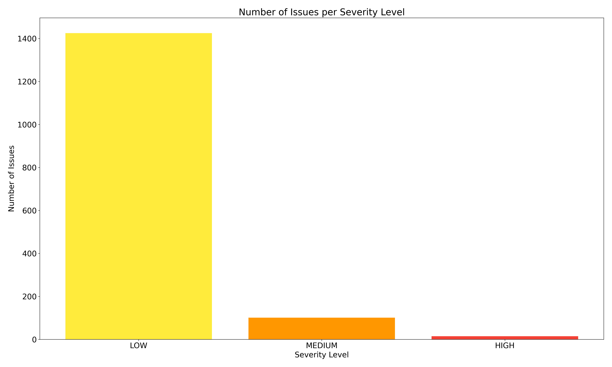
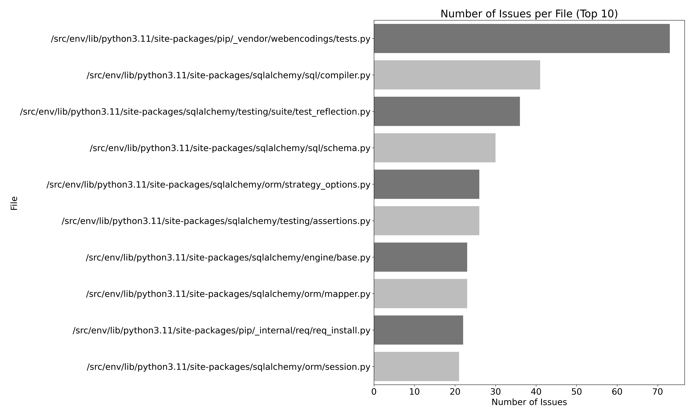

Bandit is a comprehensive security analysis tool for Python applications. It's designed to find common security issues in Python code, such as insecure function calls or hardcoded passwords. Bandit works by analyzing the Abstract Syntax Tree (AST) of the Python code to find patterns that could indicate potential security issues.
In this section, we present a summary of the results obtained by the Bandit tool. This includes visualizations of the number of issues per severity level and per file, as well as a description of the findings.
 In this section, we provide detailed information about each vulnerability found by the Bandit tool. This includes the file where the issue was found, the line number, a description of the issue, the severity and confidence levels, and a link to more information about how to fix it.
| File | Line Number | Description | More Info |
|---|---|---|---|
| /src/api_views/users.py | 101 | Possible hardcoded password: '' | Link |
| /src/api_views/users.py | 103 | Possible hardcoded password: '' | Link |
| /src/config.py | 11 | Possible hardcoded password: 'random' | Link |
| /src/env/lib/python3.11/site-packages/_distutils_hack/__init__.py | 64 | Use of assert detected. The enclosed code will be removed when compiling to optimised byte code. | Link |
| /src/env/lib/python3.11/site-packages/_distutils_hack/__init__.py | 65 | Use of assert detected. The enclosed code will be removed when compiling to optimised byte code. | Link |
| /src/env/lib/python3.11/site-packages/click/_compat.py | 70 | Try, Except, Pass detected. | Link |
| /src/env/lib/python3.11/site-packages/click/_compat.py | 163 | Try, Except, Pass detected. | Link |
| /src/env/lib/python3.11/site-packages/click/_compat.py | 431 | Standard pseudo-random generators are not suitable for security/cryptographic purposes. | Link |
| /src/env/lib/python3.11/site-packages/click/_compat.py | 551 | Try, Except, Pass detected. | Link |
| /src/env/lib/python3.11/site-packages/click/_compat.py | 599 | Try, Except, Pass detected. | Link |
| /src/env/lib/python3.11/site-packages/click/_termui_impl.py | 380 | Starting a process with a shell: Seems safe, but may be changed in the future, consider rewriting without shell | Link |
| /src/env/lib/python3.11/site-packages/click/_termui_impl.py | 380 | Starting a process with a partial executable path | Link |
| /src/env/lib/python3.11/site-packages/click/_termui_impl.py | 399 | Consider possible security implications associated with the subprocess module. | Link |
| /src/env/lib/python3.11/site-packages/click/_termui_impl.py | 504 | Consider possible security implications associated with the subprocess module. | Link |
| /src/env/lib/python3.11/site-packages/click/_termui_impl.py | 574 | Consider possible security implications associated with the subprocess module. | Link |
| /src/env/lib/python3.11/site-packages/click/_termui_impl.py | 593 | subprocess call - check for execution of untrusted input. | Link |
| /src/env/lib/python3.11/site-packages/click/_termui_impl.py | 620 | Starting a process with a partial executable path | Link |
| /src/env/lib/python3.11/site-packages/click/_termui_impl.py | 620 | subprocess call - check for execution of untrusted input. | Link |
| /src/env/lib/python3.11/site-packages/click/_winconsole.py | 30 | Use of assert detected. The enclosed code will be removed when compiling to optimised byte code. | Link |
| /src/env/lib/python3.11/site-packages/click/_winconsole.py | 195 | Try, Except, Pass detected. | Link |
| /src/env/lib/python3.11/site-packages/click/core.py | 1683 | Use of assert detected. The enclosed code will be removed when compiling to optimised byte code. | Link |
| /src/env/lib/python3.11/site-packages/click/core.py | 1705 | Use of assert detected. The enclosed code will be removed when compiling to optimised byte code. | Link |
| /src/env/lib/python3.11/site-packages/click/core.py | 1877 | Use of assert detected. The enclosed code will be removed when compiling to optimised byte code. | Link |
| /src/env/lib/python3.11/site-packages/click/core.py | 1928 | Use of assert detected. The enclosed code will be removed when compiling to optimised byte code. | Link |
| /src/env/lib/python3.11/site-packages/click/core.py | 2876 | Use of assert detected. The enclosed code will be removed when compiling to optimised byte code. | Link |
| /src/env/lib/python3.11/site-packages/click/decorators.py | 210 | Use of assert detected. The enclosed code will be removed when compiling to optimised byte code. | Link |
| /src/env/lib/python3.11/site-packages/click/decorators.py | 211 | Use of assert detected. The enclosed code will be removed when compiling to optimised byte code. | Link |
| /src/env/lib/python3.11/site-packages/click/decorators.py | 235 | Use of assert detected. The enclosed code will be removed when compiling to optimised byte code. | Link |
| /src/env/lib/python3.11/site-packages/click/decorators.py | 236 | Use of assert detected. The enclosed code will be removed when compiling to optimised byte code. | Link |
| /src/env/lib/python3.11/site-packages/click/parser.py | 225 | Use of assert detected. The enclosed code will be removed when compiling to optimised byte code. | Link |
| /src/env/lib/python3.11/site-packages/click/shell_completion.py | 305 | Consider possible security implications associated with the subprocess module. | Link |
| /src/env/lib/python3.11/site-packages/click/shell_completion.py | 307 | Starting a process with a partial executable path | Link |
| /src/env/lib/python3.11/site-packages/click/shell_completion.py | 307 | subprocess call - check for execution of untrusted input. | Link |
| /src/env/lib/python3.11/site-packages/click/shell_completion.py | 445 | Use of assert detected. The enclosed code will be removed when compiling to optimised byte code. | Link |
| /src/env/lib/python3.11/site-packages/click/testing.py | 326 | Try, Except, Pass detected. | Link |
| /src/env/lib/python3.11/site-packages/click/testing.py | 336 | Try, Except, Pass detected. | Link |
| /src/env/lib/python3.11/site-packages/click/utils.py | 39 | Try, Except, Pass detected. | Link |
| /src/env/lib/python3.11/site-packages/clickclick/console.py | 281 | Try, Except, Pass detected. | Link |
| /src/env/lib/python3.11/site-packages/flask/app.py | 703 | Use of assert detected. The enclosed code will be removed when compiling to optimised byte code. | Link |
| /src/env/lib/python3.11/site-packages/flask/config.py | 138 | Try, Except, Pass detected. | Link |
| /src/env/lib/python3.11/site-packages/flask/scaffold.py | 754 | Use of assert detected. The enclosed code will be removed when compiling to optimised byte code. | Link |
| /src/env/lib/python3.11/site-packages/flask/testing.py | 55 | Use of assert detected. The enclosed code will be removed when compiling to optimised byte code. | Link |
| /src/env/lib/python3.11/site-packages/flask/views.py | 187 | Use of assert detected. The enclosed code will be removed when compiling to optimised byte code. | Link |
| /src/env/lib/python3.11/site-packages/flask_sqlalchemy/model.py | 66 | Use of assert detected. The enclosed code will be removed when compiling to optimised byte code. | Link |
| /src/env/lib/python3.11/site-packages/greenlet/tests/test_gc.py | 12 | Use of assert detected. The enclosed code will be removed when compiling to optimised byte code. | Link |
| /src/env/lib/python3.11/site-packages/greenlet/tests/test_generator_nested.py | 106 | Use of assert detected. The enclosed code will be removed when compiling to optimised byte code. | Link |
| /src/env/lib/python3.11/site-packages/greenlet/tests/test_greenlet.py | 415 | Try, Except, Pass detected. | Link |
| /src/env/lib/python3.11/site-packages/greenlet/tests/test_greenlet.py | 1109 | Use of assert detected. The enclosed code will be removed when compiling to optimised byte code. | Link |
| /src/env/lib/python3.11/site-packages/greenlet/tests/test_greenlet.py | 1112 | Use of assert detected. The enclosed code will be removed when compiling to optimised byte code. | Link |
| /src/env/lib/python3.11/site-packages/greenlet/tests/test_greenlet_trash.py | 53 | Use of assert detected. The enclosed code will be removed when compiling to optimised byte code. | Link |
| /src/env/lib/python3.11/site-packages/greenlet/tests/test_greenlet_trash.py | 108 | Use of assert detected. The enclosed code will be removed when compiling to optimised byte code. | Link |
| /src/env/lib/python3.11/site-packages/greenlet/tests/test_leaks.py | 29 | Use of assert detected. The enclosed code will be removed when compiling to optimised byte code. | Link |
| /src/env/lib/python3.11/site-packages/greenlet/tests/test_leaks.py | 146 | Use of assert detected. The enclosed code will be removed when compiling to optimised byte code. | Link |
| /src/env/lib/python3.11/site-packages/greenlet/tests/test_leaks.py | 205 | Use of assert detected. The enclosed code will be removed when compiling to optimised byte code. | Link |
| /src/env/lib/python3.11/site-packages/itsdangerous/timed.py | 120 | Try, Except, Pass detected. | Link |
| /src/env/lib/python3.11/site-packages/jinja2/bccache.py | 12 | Consider possible security implications associated with pickle module. | Link |
| /src/env/lib/python3.11/site-packages/jinja2/compiler.py | 829 | Use of assert detected. The enclosed code will be removed when compiling to optimised byte code. | Link |
| /src/env/lib/python3.11/site-packages/jinja2/compiler.py | 1416 | Possible hardcoded password: 'environment' | Link |
| /src/env/lib/python3.11/site-packages/jinja2/environment.py | 126 | Use of assert detected. The enclosed code will be removed when compiling to optimised byte code. | Link |
| /src/env/lib/python3.11/site-packages/jinja2/environment.py | 129 | Use of assert detected. The enclosed code will be removed when compiling to optimised byte code. | Link |
| /src/env/lib/python3.11/site-packages/jinja2/environment.py | 134 | Use of assert detected. The enclosed code will be removed when compiling to optimised byte code. | Link |
| /src/env/lib/python3.11/site-packages/jinja2/environment.py | 471 | Try, Except, Pass detected. | Link |
| /src/env/lib/python3.11/site-packages/jinja2/environment.py | 848 | Use of assert detected. The enclosed code will be removed when compiling to optimised byte code. | Link |
| /src/env/lib/python3.11/site-packages/jinja2/environment.py | 849 | Use of assert detected. The enclosed code will be removed when compiling to optimised byte code. | Link |
| /src/env/lib/python3.11/site-packages/jinja2/environment.py | 913 | Use of assert detected. The enclosed code will be removed when compiling to optimised byte code. | Link |
| /src/env/lib/python3.11/site-packages/jinja2/filters.py | 658 | Standard pseudo-random generators are not suitable for security/cryptographic purposes. | Link |
| /src/env/lib/python3.11/site-packages/jinja2/filters.py | 867 | Use of assert detected. The enclosed code will be removed when compiling to optimised byte code. | Link |
| /src/env/lib/python3.11/site-packages/jinja2/filters.py | 868 | Use of assert detected. The enclosed code will be removed when compiling to optimised byte code. | Link |
| /src/env/lib/python3.11/site-packages/jinja2/idtracking.py | 138 | Use of assert detected. The enclosed code will be removed when compiling to optimised byte code. | Link |
| /src/env/lib/python3.11/site-packages/jinja2/lexer.py | 142 | Use of assert detected. The enclosed code will be removed when compiling to optimised byte code. | Link |
| /src/env/lib/python3.11/site-packages/jinja2/lexer.py | 637 | Possible hardcoded password: 'keyword' | Link |
| /src/env/lib/python3.11/site-packages/jinja2/lexer.py | 692 | Use of assert detected. The enclosed code will be removed when compiling to optimised byte code. | Link |
| /src/env/lib/python3.11/site-packages/jinja2/lexer.py | 763 | Possible hardcoded password: '#bygroup' | Link |
| /src/env/lib/python3.11/site-packages/jinja2/loaders.py | 293 | Use of assert detected. The enclosed code will be removed when compiling to optimised byte code. | Link |
| /src/env/lib/python3.11/site-packages/jinja2/loaders.py | 295 | Use of assert detected. The enclosed code will be removed when compiling to optimised byte code. | Link |
| /src/env/lib/python3.11/site-packages/jinja2/nodes.py | 62 | Use of assert detected. The enclosed code will be removed when compiling to optimised byte code. | Link |
| /src/env/lib/python3.11/site-packages/jinja2/nodes.py | 63 | Use of assert detected. The enclosed code will be removed when compiling to optimised byte code. | Link |
| /src/env/lib/python3.11/site-packages/jinja2/parser.py | 631 | Possible hardcoded password: 'sub' | Link |
| /src/env/lib/python3.11/site-packages/jinja2/parser.py | 634 | Possible hardcoded password: 'add' | Link |
| /src/env/lib/python3.11/site-packages/jinja2/parser.py | 774 | Possible hardcoded password: 'dot' | Link |
| /src/env/lib/python3.11/site-packages/jinja2/parser.py | 774 | Possible hardcoded password: 'lbracket' | Link |
| /src/env/lib/python3.11/site-packages/jinja2/parser.py | 778 | Possible hardcoded password: 'lparen' | Link |
| /src/env/lib/python3.11/site-packages/jinja2/parser.py | 787 | Possible hardcoded password: 'pipe' | Link |
| /src/env/lib/python3.11/site-packages/jinja2/parser.py | 789 | Possible hardcoded password: 'name' | Link |
| /src/env/lib/python3.11/site-packages/jinja2/parser.py | 793 | Possible hardcoded password: 'lparen' | Link |
| /src/env/lib/python3.11/site-packages/jinja2/sandbox.py | 308 | Try, Except, Pass detected. | Link |
| /src/env/lib/python3.11/site-packages/jinja2/utils.py | 359 | Standard pseudo-random generators are not suitable for security/cryptographic purposes. | Link |
| /src/env/lib/python3.11/site-packages/jinja2/utils.py | 361 | Standard pseudo-random generators are not suitable for security/cryptographic purposes. | Link |
| /src/env/lib/python3.11/site-packages/jinja2/utils.py | 369 | Standard pseudo-random generators are not suitable for security/cryptographic purposes. | Link |
| /src/env/lib/python3.11/site-packages/jinja2/utils.py | 374 | Standard pseudo-random generators are not suitable for security/cryptographic purposes. | Link |
| /src/env/lib/python3.11/site-packages/jsonschema/tests/_suite.py | 10 | Consider possible security implications associated with the subprocess module. | Link |
| /src/env/lib/python3.11/site-packages/jsonschema/tests/_suite.py | 45 | subprocess call - check for execution of untrusted input. | Link |
| /src/env/lib/python3.11/site-packages/jsonschema/tests/_suite.py | 120 | Try, Except, Pass detected. | Link |
| /src/env/lib/python3.11/site-packages/jsonschema/tests/test_cli.py | 9 | Consider possible security implications associated with the subprocess module. | Link |
| /src/env/lib/python3.11/site-packages/jsonschema/tests/test_cli.py | 895 | subprocess call - check for execution of untrusted input. | Link |
| /src/env/lib/python3.11/site-packages/jsonschema/tests/test_cli.py | 902 | subprocess call - check for execution of untrusted input. | Link |
| /src/env/lib/python3.11/site-packages/jsonschema/tests/test_cli.py | 910 | subprocess call - check for execution of untrusted input. | Link |
| /src/env/lib/python3.11/site-packages/jsonschema/tests/test_cli.py | 914 | subprocess call - check for execution of untrusted input. | Link |
| /src/env/lib/python3.11/site-packages/jsonschema/tests/test_deprecations.py | 3 | Consider possible security implications associated with the subprocess module. | Link |
| /src/env/lib/python3.11/site-packages/jsonschema/tests/test_deprecations.py | 289 | subprocess call - check for execution of untrusted input. | Link |
| /src/env/lib/python3.11/site-packages/packaging/_manylinux.py | 85 | Use of assert detected. The enclosed code will be removed when compiling to optimised byte code. | Link |
| /src/env/lib/python3.11/site-packages/packaging/_musllinux.py | 9 | Consider possible security implications associated with the subprocess module. | Link |
| /src/env/lib/python3.11/site-packages/packaging/_musllinux.py | 50 | subprocess call - check for execution of untrusted input. | Link |
| /src/env/lib/python3.11/site-packages/packaging/_musllinux.py | 74 | Use of assert detected. The enclosed code will be removed when compiling to optimised byte code. | Link |
| /src/env/lib/python3.11/site-packages/packaging/_tokenizer.py | 120 | Use of assert detected. The enclosed code will be removed when compiling to optimised byte code. | Link |
| /src/env/lib/python3.11/site-packages/packaging/_tokenizer.py | 123 | Use of assert detected. The enclosed code will be removed when compiling to optimised byte code. | Link |
| /src/env/lib/python3.11/site-packages/packaging/_tokenizer.py | 146 | Use of assert detected. The enclosed code will be removed when compiling to optimised byte code. | Link |
| /src/env/lib/python3.11/site-packages/packaging/markers.py | 73 | Use of assert detected. The enclosed code will be removed when compiling to optimised byte code. | Link |
| /src/env/lib/python3.11/site-packages/packaging/markers.py | 141 | Use of assert detected. The enclosed code will be removed when compiling to optimised byte code. | Link |
| /src/env/lib/python3.11/site-packages/packaging/markers.py | 160 | Use of assert detected. The enclosed code will be removed when compiling to optimised byte code. | Link |
| /src/env/lib/python3.11/site-packages/packaging/metadata.py | 286 | Use of assert detected. The enclosed code will be removed when compiling to optimised byte code. | Link |
| /src/env/lib/python3.11/site-packages/packaging/tags.py | 7 | Consider possible security implications associated with the subprocess module. | Link |
| /src/env/lib/python3.11/site-packages/packaging/tags.py | 399 | subprocess call - check for execution of untrusted input. | Link |
| /src/env/lib/python3.11/site-packages/pip/__pip-runner__.py | 43 | Use of assert detected. The enclosed code will be removed when compiling to optimised byte code. | Link |
| /src/env/lib/python3.11/site-packages/pip/__pip-runner__.py | 49 | Use of assert detected. The enclosed code will be removed when compiling to optimised byte code. | Link |
| /src/env/lib/python3.11/site-packages/pip/_internal/build_env.py | 213 | Use of assert detected. The enclosed code will be removed when compiling to optimised byte code. | Link |
| /src/env/lib/python3.11/site-packages/pip/_internal/cache.py | 40 | Use of assert detected. The enclosed code will be removed when compiling to optimised byte code. | Link |
| /src/env/lib/python3.11/site-packages/pip/_internal/cache.py | 126 | Use of assert detected. The enclosed code will be removed when compiling to optimised byte code. | Link |
| /src/env/lib/python3.11/site-packages/pip/_internal/cli/base_command.py | 89 | Use of assert detected. The enclosed code will be removed when compiling to optimised byte code. | Link |
| /src/env/lib/python3.11/site-packages/pip/_internal/cli/base_command.py | 181 | Use of assert detected. The enclosed code will be removed when compiling to optimised byte code. | Link |
| /src/env/lib/python3.11/site-packages/pip/_internal/cli/command_context.py | 15 | Use of assert detected. The enclosed code will be removed when compiling to optimised byte code. | Link |
| /src/env/lib/python3.11/site-packages/pip/_internal/cli/command_context.py | 25 | Use of assert detected. The enclosed code will be removed when compiling to optimised byte code. | Link |
| /src/env/lib/python3.11/site-packages/pip/_internal/cli/main_parser.py | 5 | Consider possible security implications associated with the subprocess module. | Link |
| /src/env/lib/python3.11/site-packages/pip/_internal/cli/main_parser.py | 101 | subprocess call - check for execution of untrusted input. | Link |
| /src/env/lib/python3.11/site-packages/pip/_internal/cli/parser.py | 51 | Use of assert detected. The enclosed code will be removed when compiling to optimised byte code. | Link |
| /src/env/lib/python3.11/site-packages/pip/_internal/cli/parser.py | 112 | Use of assert detected. The enclosed code will be removed when compiling to optimised byte code. | Link |
| /src/env/lib/python3.11/site-packages/pip/_internal/cli/parser.py | 114 | Use of assert detected. The enclosed code will be removed when compiling to optimised byte code. | Link |
| /src/env/lib/python3.11/site-packages/pip/_internal/cli/parser.py | 168 | Use of assert detected. The enclosed code will be removed when compiling to optimised byte code. | Link |
| /src/env/lib/python3.11/site-packages/pip/_internal/cli/parser.py | 225 | Use of assert detected. The enclosed code will be removed when compiling to optimised byte code. | Link |
| /src/env/lib/python3.11/site-packages/pip/_internal/cli/parser.py | 252 | Use of assert detected. The enclosed code will be removed when compiling to optimised byte code. | Link |
| /src/env/lib/python3.11/site-packages/pip/_internal/cli/parser.py | 285 | Use of assert detected. The enclosed code will be removed when compiling to optimised byte code. | Link |
| /src/env/lib/python3.11/site-packages/pip/_internal/cli/progress_bars.py | 28 | Use of assert detected. The enclosed code will be removed when compiling to optimised byte code. | Link |
| /src/env/lib/python3.11/site-packages/pip/_internal/cli/req_command.py | 102 | Use of assert detected. The enclosed code will be removed when compiling to optimised byte code. | Link |
| /src/env/lib/python3.11/site-packages/pip/_internal/cli/req_command.py | 113 | Use of assert detected. The enclosed code will be removed when compiling to optimised byte code. | Link |
| /src/env/lib/python3.11/site-packages/pip/_internal/cli/req_command.py | 174 | Use of assert detected. The enclosed code will be removed when compiling to optimised byte code. | Link |
| /src/env/lib/python3.11/site-packages/pip/_internal/cli/req_command.py | 243 | Use of assert detected. The enclosed code will be removed when compiling to optimised byte code. | Link |
| /src/env/lib/python3.11/site-packages/pip/_internal/cli/req_command.py | 289 | Use of assert detected. The enclosed code will be removed when compiling to optimised byte code. | Link |
| /src/env/lib/python3.11/site-packages/pip/_internal/cli/spinners.py | 44 | Use of assert detected. The enclosed code will be removed when compiling to optimised byte code. | Link |
| /src/env/lib/python3.11/site-packages/pip/_internal/cli/spinners.py | 83 | Use of assert detected. The enclosed code will be removed when compiling to optimised byte code. | Link |
| /src/env/lib/python3.11/site-packages/pip/_internal/commands/configuration.py | 3 | Consider possible security implications associated with the subprocess module. | Link |
| /src/env/lib/python3.11/site-packages/pip/_internal/commands/debug.py | 66 | Use of assert detected. The enclosed code will be removed when compiling to optimised byte code. | Link |
| /src/env/lib/python3.11/site-packages/pip/_internal/commands/download.py | 137 | Use of assert detected. The enclosed code will be removed when compiling to optimised byte code. | Link |
| /src/env/lib/python3.11/site-packages/pip/_internal/commands/install.py | 480 | Try, Except, Pass detected. | Link |
| /src/env/lib/python3.11/site-packages/pip/_internal/commands/install.py | 509 | Use of assert detected. The enclosed code will be removed when compiling to optimised byte code. | Link |
| /src/env/lib/python3.11/site-packages/pip/_internal/commands/install.py | 598 | Use of assert detected. The enclosed code will be removed when compiling to optimised byte code. | Link |
| /src/env/lib/python3.11/site-packages/pip/_internal/commands/install.py | 699 | Use of assert detected. The enclosed code will be removed when compiling to optimised byte code. | Link |
| /src/env/lib/python3.11/site-packages/pip/_internal/commands/search.py | 84 | Use of assert detected. The enclosed code will be removed when compiling to optimised byte code. | Link |
| /src/env/lib/python3.11/site-packages/pip/_internal/commands/wheel.py | 168 | Use of assert detected. The enclosed code will be removed when compiling to optimised byte code. | Link |
| /src/env/lib/python3.11/site-packages/pip/_internal/commands/wheel.py | 169 | Use of assert detected. The enclosed code will be removed when compiling to optimised byte code. | Link |
| /src/env/lib/python3.11/site-packages/pip/_internal/configuration.py | 130 | Use of assert detected. The enclosed code will be removed when compiling to optimised byte code. | Link |
| /src/env/lib/python3.11/site-packages/pip/_internal/configuration.py | 160 | Use of assert detected. The enclosed code will be removed when compiling to optimised byte code. | Link |
| /src/env/lib/python3.11/site-packages/pip/_internal/configuration.py | 180 | Use of assert detected. The enclosed code will be removed when compiling to optimised byte code. | Link |
| /src/env/lib/python3.11/site-packages/pip/_internal/configuration.py | 363 | Use of assert detected. The enclosed code will be removed when compiling to optimised byte code. | Link |
| /src/env/lib/python3.11/site-packages/pip/_internal/distributions/installed.py | 14 | Use of assert detected. The enclosed code will be removed when compiling to optimised byte code. | Link |
| /src/env/lib/python3.11/site-packages/pip/_internal/distributions/sdist.py | 53 | Use of assert detected. The enclosed code will be removed when compiling to optimised byte code. | Link |
| /src/env/lib/python3.11/site-packages/pip/_internal/distributions/sdist.py | 67 | Use of assert detected. The enclosed code will be removed when compiling to optimised byte code. | Link |
| /src/env/lib/python3.11/site-packages/pip/_internal/distributions/sdist.py | 93 | Use of assert detected. The enclosed code will be removed when compiling to optimised byte code. | Link |
| /src/env/lib/python3.11/site-packages/pip/_internal/distributions/sdist.py | 103 | Use of assert detected. The enclosed code will be removed when compiling to optimised byte code. | Link |
| /src/env/lib/python3.11/site-packages/pip/_internal/distributions/wheel.py | 23 | Use of assert detected. The enclosed code will be removed when compiling to optimised byte code. | Link |
| /src/env/lib/python3.11/site-packages/pip/_internal/distributions/wheel.py | 24 | Use of assert detected. The enclosed code will be removed when compiling to optimised byte code. | Link |
| /src/env/lib/python3.11/site-packages/pip/_internal/exceptions.py | 87 | Use of assert detected. The enclosed code will be removed when compiling to optimised byte code. | Link |
| /src/env/lib/python3.11/site-packages/pip/_internal/exceptions.py | 89 | Use of assert detected. The enclosed code will be removed when compiling to optimised byte code. | Link |
| /src/env/lib/python3.11/site-packages/pip/_internal/exceptions.py | 651 | Use of assert detected. The enclosed code will be removed when compiling to optimised byte code. | Link |
| /src/env/lib/python3.11/site-packages/pip/_internal/index/collector.py | 193 | Use of assert detected. The enclosed code will be removed when compiling to optimised byte code. | Link |
| /src/env/lib/python3.11/site-packages/pip/_internal/index/package_finder.py | 364 | Use of assert detected. The enclosed code will be removed when compiling to optimised byte code. | Link |
| /src/env/lib/python3.11/site-packages/pip/_internal/index/package_finder.py | 367 | Use of assert detected. The enclosed code will be removed when compiling to optimised byte code. | Link |
| /src/env/lib/python3.11/site-packages/pip/_internal/index/package_finder.py | 369 | Use of assert detected. The enclosed code will be removed when compiling to optimised byte code. | Link |
| /src/env/lib/python3.11/site-packages/pip/_internal/index/package_finder.py | 543 | Use of assert detected. The enclosed code will be removed when compiling to optimised byte code. | Link |
| /src/env/lib/python3.11/site-packages/pip/_internal/index/package_finder.py | 847 | Use of assert detected. The enclosed code will be removed when compiling to optimised byte code. | Link |
| /src/env/lib/python3.11/site-packages/pip/_internal/locations/_distutils.py | 67 | Use of assert detected. The enclosed code will be removed when compiling to optimised byte code. | Link |
| /src/env/lib/python3.11/site-packages/pip/_internal/locations/_distutils.py | 72 | Use of assert detected. The enclosed code will be removed when compiling to optimised byte code. | Link |
| /src/env/lib/python3.11/site-packages/pip/_internal/locations/_distutils.py | 73 | Use of assert detected. The enclosed code will be removed when compiling to optimised byte code. | Link |
| /src/env/lib/python3.11/site-packages/pip/_internal/metadata/pkg_resources.py | 88 | Use of assert detected. The enclosed code will be removed when compiling to optimised byte code. | Link |
| /src/env/lib/python3.11/site-packages/pip/_internal/models/direct_url.py | 60 | Use of assert detected. The enclosed code will be removed when compiling to optimised byte code. | Link |
| /src/env/lib/python3.11/site-packages/pip/_internal/models/direct_url.py | 184 | Possible hardcoded password: 'git' | Link |
| /src/env/lib/python3.11/site-packages/pip/_internal/models/installation_report.py | 15 | Use of assert detected. The enclosed code will be removed when compiling to optimised byte code. | Link |
| /src/env/lib/python3.11/site-packages/pip/_internal/models/link.py | 70 | Use of assert detected. The enclosed code will be removed when compiling to optimised byte code. | Link |
| /src/env/lib/python3.11/site-packages/pip/_internal/models/link.py | 106 | Use of assert detected. The enclosed code will be removed when compiling to optimised byte code. | Link |
| /src/env/lib/python3.11/site-packages/pip/_internal/models/link.py | 395 | Use of assert detected. The enclosed code will be removed when compiling to optimised byte code. | Link |
| /src/env/lib/python3.11/site-packages/pip/_internal/network/auth.py | 9 | Consider possible security implications associated with the subprocess module. | Link |
| /src/env/lib/python3.11/site-packages/pip/_internal/network/auth.py | 136 | subprocess call - check for execution of untrusted input. | Link |
| /src/env/lib/python3.11/site-packages/pip/_internal/network/auth.py | 152 | subprocess call - check for execution of untrusted input. | Link |
| /src/env/lib/python3.11/site-packages/pip/_internal/network/auth.py | 426 | Use of assert detected. The enclosed code will be removed when compiling to optimised byte code. | Link |
| /src/env/lib/python3.11/site-packages/pip/_internal/network/auth.py | 548 | Use of assert detected. The enclosed code will be removed when compiling to optimised byte code. | Link |
| /src/env/lib/python3.11/site-packages/pip/_internal/network/cache.py | 38 | Use of assert detected. The enclosed code will be removed when compiling to optimised byte code. | Link |
| /src/env/lib/python3.11/site-packages/pip/_internal/network/download.py | 136 | Use of assert detected. The enclosed code will be removed when compiling to optimised byte code. | Link |
| /src/env/lib/python3.11/site-packages/pip/_internal/network/download.py | 170 | Use of assert detected. The enclosed code will be removed when compiling to optimised byte code. | Link |
| /src/env/lib/python3.11/site-packages/pip/_internal/network/lazy_wheel.py | 54 | Use of assert detected. The enclosed code will be removed when compiling to optimised byte code. | Link |
| /src/env/lib/python3.11/site-packages/pip/_internal/network/session.py | 14 | Consider possible security implications associated with the subprocess module. | Link |
| /src/env/lib/python3.11/site-packages/pip/_internal/network/session.py | 182 | Starting a process with a partial executable path | Link |
| /src/env/lib/python3.11/site-packages/pip/_internal/network/session.py | 182 | subprocess call - check for execution of untrusted input. | Link |
| /src/env/lib/python3.11/site-packages/pip/_internal/network/session.py | 185 | Try, Except, Pass detected. | Link |
| /src/env/lib/python3.11/site-packages/pip/_internal/network/xmlrpc.py | 39 | Use of assert detected. The enclosed code will be removed when compiling to optimised byte code. | Link |
| /src/env/lib/python3.11/site-packages/pip/_internal/network/xmlrpc.py | 54 | Use of assert detected. The enclosed code will be removed when compiling to optimised byte code. | Link |
| /src/env/lib/python3.11/site-packages/pip/_internal/operations/build/build_tracker.py | 37 | Use of assert detected. The enclosed code will be removed when compiling to optimised byte code. | Link |
| /src/env/lib/python3.11/site-packages/pip/_internal/operations/build/build_tracker.py | 79 | Use of assert detected. The enclosed code will be removed when compiling to optimised byte code. | Link |
| /src/env/lib/python3.11/site-packages/pip/_internal/operations/build/build_tracker.py | 95 | Use of assert detected. The enclosed code will be removed when compiling to optimised byte code. | Link |
| /src/env/lib/python3.11/site-packages/pip/_internal/operations/build/build_tracker.py | 107 | Use of assert detected. The enclosed code will be removed when compiling to optimised byte code. | Link |
| /src/env/lib/python3.11/site-packages/pip/_internal/operations/build/wheel.py | 22 | Use of assert detected. The enclosed code will be removed when compiling to optimised byte code. | Link |
| /src/env/lib/python3.11/site-packages/pip/_internal/operations/build/wheel_editable.py | 22 | Use of assert detected. The enclosed code will be removed when compiling to optimised byte code. | Link |
| /src/env/lib/python3.11/site-packages/pip/_internal/operations/freeze.py | 160 | Use of assert detected. The enclosed code will be removed when compiling to optimised byte code. | Link |
| /src/env/lib/python3.11/site-packages/pip/_internal/operations/install/wheel.py | 99 | Use of assert detected. The enclosed code will be removed when compiling to optimised byte code. | Link |
| /src/env/lib/python3.11/site-packages/pip/_internal/operations/install/wheel.py | 620 | Use of assert detected. The enclosed code will be removed when compiling to optimised byte code. | Link |
| /src/env/lib/python3.11/site-packages/pip/_internal/operations/prepare.py | 77 | Use of assert detected. The enclosed code will be removed when compiling to optimised byte code. | Link |
| /src/env/lib/python3.11/site-packages/pip/_internal/operations/prepare.py | 158 | Use of assert detected. The enclosed code will be removed when compiling to optimised byte code. | Link |
| /src/env/lib/python3.11/site-packages/pip/_internal/operations/prepare.py | 308 | Use of assert detected. The enclosed code will be removed when compiling to optimised byte code. | Link |
| /src/env/lib/python3.11/site-packages/pip/_internal/operations/prepare.py | 396 | Use of assert detected. The enclosed code will be removed when compiling to optimised byte code. | Link |
| /src/env/lib/python3.11/site-packages/pip/_internal/operations/prepare.py | 472 | Use of assert detected. The enclosed code will be removed when compiling to optimised byte code. | Link |
| /src/env/lib/python3.11/site-packages/pip/_internal/operations/prepare.py | 506 | Use of assert detected. The enclosed code will be removed when compiling to optimised byte code. | Link |
| /src/env/lib/python3.11/site-packages/pip/_internal/operations/prepare.py | 573 | Use of assert detected. The enclosed code will be removed when compiling to optimised byte code. | Link |
| /src/env/lib/python3.11/site-packages/pip/_internal/operations/prepare.py | 579 | Use of assert detected. The enclosed code will be removed when compiling to optimised byte code. | Link |
| /src/env/lib/python3.11/site-packages/pip/_internal/operations/prepare.py | 580 | Use of assert detected. The enclosed code will be removed when compiling to optimised byte code. | Link |
| /src/env/lib/python3.11/site-packages/pip/_internal/operations/prepare.py | 581 | Use of assert detected. The enclosed code will be removed when compiling to optimised byte code. | Link |
| /src/env/lib/python3.11/site-packages/pip/_internal/operations/prepare.py | 632 | Use of assert detected. The enclosed code will be removed when compiling to optimised byte code. | Link |
| /src/env/lib/python3.11/site-packages/pip/_internal/operations/prepare.py | 663 | Use of assert detected. The enclosed code will be removed when compiling to optimised byte code. | Link |
| /src/env/lib/python3.11/site-packages/pip/_internal/operations/prepare.py | 664 | Use of assert detected. The enclosed code will be removed when compiling to optimised byte code. | Link |
| /src/env/lib/python3.11/site-packages/pip/_internal/operations/prepare.py | 693 | Use of assert detected. The enclosed code will be removed when compiling to optimised byte code. | Link |
| /src/env/lib/python3.11/site-packages/pip/_internal/operations/prepare.py | 706 | Use of assert detected. The enclosed code will be removed when compiling to optimised byte code. | Link |
| /src/env/lib/python3.11/site-packages/pip/_internal/operations/prepare.py | 727 | Use of assert detected. The enclosed code will be removed when compiling to optimised byte code. | Link |
| /src/env/lib/python3.11/site-packages/pip/_internal/operations/prepare.py | 728 | Use of assert detected. The enclosed code will be removed when compiling to optimised byte code. | Link |
| /src/env/lib/python3.11/site-packages/pip/_internal/pyproject.py | 109 | Use of assert detected. The enclosed code will be removed when compiling to optimised byte code. | Link |
| /src/env/lib/python3.11/site-packages/pip/_internal/pyproject.py | 134 | Use of assert detected. The enclosed code will be removed when compiling to optimised byte code. | Link |
| /src/env/lib/python3.11/site-packages/pip/_internal/req/__init__.py | 33 | Use of assert detected. The enclosed code will be removed when compiling to optimised byte code. | Link |
| /src/env/lib/python3.11/site-packages/pip/_internal/req/req_file.py | 179 | Use of assert detected. The enclosed code will be removed when compiling to optimised byte code. | Link |
| /src/env/lib/python3.11/site-packages/pip/_internal/req/req_file.py | 474 | Use of assert detected. The enclosed code will be removed when compiling to optimised byte code. | Link |
| /src/env/lib/python3.11/site-packages/pip/_internal/req/req_file.py | 486 | Use of assert detected. The enclosed code will be removed when compiling to optimised byte code. | Link |
| /src/env/lib/python3.11/site-packages/pip/_internal/req/req_install.py | 89 | Use of assert detected. The enclosed code will be removed when compiling to optimised byte code. | Link |
| /src/env/lib/python3.11/site-packages/pip/_internal/req/req_install.py | 103 | Use of assert detected. The enclosed code will be removed when compiling to optimised byte code. | Link |
| /src/env/lib/python3.11/site-packages/pip/_internal/req/req_install.py | 237 | Use of assert detected. The enclosed code will be removed when compiling to optimised byte code. | Link |
| /src/env/lib/python3.11/site-packages/pip/_internal/req/req_install.py | 328 | Use of assert detected. The enclosed code will be removed when compiling to optimised byte code. | Link |
| /src/env/lib/python3.11/site-packages/pip/_internal/req/req_install.py | 330 | Use of assert detected. The enclosed code will be removed when compiling to optimised byte code. | Link |
| /src/env/lib/python3.11/site-packages/pip/_internal/req/req_install.py | 370 | Use of assert detected. The enclosed code will be removed when compiling to optimised byte code. | Link |
| /src/env/lib/python3.11/site-packages/pip/_internal/req/req_install.py | 371 | Use of assert detected. The enclosed code will be removed when compiling to optimised byte code. | Link |
| /src/env/lib/python3.11/site-packages/pip/_internal/req/req_install.py | 372 | Use of assert detected. The enclosed code will be removed when compiling to optimised byte code. | Link |
| /src/env/lib/python3.11/site-packages/pip/_internal/req/req_install.py | 466 | Use of assert detected. The enclosed code will be removed when compiling to optimised byte code. | Link |
| /src/env/lib/python3.11/site-packages/pip/_internal/req/req_install.py | 473 | Use of assert detected. The enclosed code will be removed when compiling to optimised byte code. | Link |
| /src/env/lib/python3.11/site-packages/pip/_internal/req/req_install.py | 480 | Use of assert detected. The enclosed code will be removed when compiling to optimised byte code. | Link |
| /src/env/lib/python3.11/site-packages/pip/_internal/req/req_install.py | 546 | Use of assert detected. The enclosed code will be removed when compiling to optimised byte code. | Link |
| /src/env/lib/python3.11/site-packages/pip/_internal/req/req_install.py | 550 | Use of assert detected. The enclosed code will be removed when compiling to optimised byte code. | Link |
| /src/env/lib/python3.11/site-packages/pip/_internal/req/req_install.py | 604 | Use of assert detected. The enclosed code will be removed when compiling to optimised byte code. | Link |
| /src/env/lib/python3.11/site-packages/pip/_internal/req/req_install.py | 651 | Use of assert detected. The enclosed code will be removed when compiling to optimised byte code. | Link |
| /src/env/lib/python3.11/site-packages/pip/_internal/req/req_install.py | 652 | Use of assert detected. The enclosed code will be removed when compiling to optimised byte code. | Link |
| /src/env/lib/python3.11/site-packages/pip/_internal/req/req_install.py | 659 | Use of assert detected. The enclosed code will be removed when compiling to optimised byte code. | Link |
| /src/env/lib/python3.11/site-packages/pip/_internal/req/req_install.py | 679 | Use of assert detected. The enclosed code will be removed when compiling to optimised byte code. | Link |
| /src/env/lib/python3.11/site-packages/pip/_internal/req/req_install.py | 692 | Use of assert detected. The enclosed code will be removed when compiling to optimised byte code. | Link |
| /src/env/lib/python3.11/site-packages/pip/_internal/req/req_install.py | 708 | Use of assert detected. The enclosed code will be removed when compiling to optimised byte code. | Link |
| /src/env/lib/python3.11/site-packages/pip/_internal/req/req_install.py | 804 | Use of assert detected. The enclosed code will be removed when compiling to optimised byte code. | Link |
| /src/env/lib/python3.11/site-packages/pip/_internal/req/req_install.py | 805 | Use of assert detected. The enclosed code will be removed when compiling to optimised byte code. | Link |
| /src/env/lib/python3.11/site-packages/pip/_internal/req/req_set.py | 45 | Use of assert detected. The enclosed code will be removed when compiling to optimised byte code. | Link |
| /src/env/lib/python3.11/site-packages/pip/_internal/req/req_set.py | 49 | Use of assert detected. The enclosed code will be removed when compiling to optimised byte code. | Link |
| /src/env/lib/python3.11/site-packages/pip/_internal/req/req_uninstall.py | 70 | Use of assert detected. The enclosed code will be removed when compiling to optimised byte code. | Link |
| /src/env/lib/python3.11/site-packages/pip/_internal/req/req_uninstall.py | 545 | Use of assert detected. The enclosed code will be removed when compiling to optimised byte code. | Link |
| /src/env/lib/python3.11/site-packages/pip/_internal/resolution/legacy/resolver.py | 135 | Use of assert detected. The enclosed code will be removed when compiling to optimised byte code. | Link |
| /src/env/lib/python3.11/site-packages/pip/_internal/resolution/legacy/resolver.py | 240 | Use of assert detected. The enclosed code will be removed when compiling to optimised byte code. | Link |
| /src/env/lib/python3.11/site-packages/pip/_internal/resolution/legacy/resolver.py | 319 | Use of assert detected. The enclosed code will be removed when compiling to optimised byte code. | Link |
| /src/env/lib/python3.11/site-packages/pip/_internal/resolution/legacy/resolver.py | 454 | Use of assert detected. The enclosed code will be removed when compiling to optimised byte code. | Link |
| /src/env/lib/python3.11/site-packages/pip/_internal/resolution/legacy/resolver.py | 543 | Use of assert detected. The enclosed code will be removed when compiling to optimised byte code. | Link |
| /src/env/lib/python3.11/site-packages/pip/_internal/resolution/resolvelib/candidates.py | 56 | Use of assert detected. The enclosed code will be removed when compiling to optimised byte code. | Link |
| /src/env/lib/python3.11/site-packages/pip/_internal/resolution/resolvelib/candidates.py | 81 | Use of assert detected. The enclosed code will be removed when compiling to optimised byte code. | Link |
| /src/env/lib/python3.11/site-packages/pip/_internal/resolution/resolvelib/candidates.py | 267 | Use of assert detected. The enclosed code will be removed when compiling to optimised byte code. | Link |
| /src/env/lib/python3.11/site-packages/pip/_internal/resolution/resolvelib/candidates.py | 271 | Use of assert detected. The enclosed code will be removed when compiling to optimised byte code. | Link |
| /src/env/lib/python3.11/site-packages/pip/_internal/resolution/resolvelib/candidates.py | 275 | Use of assert detected. The enclosed code will be removed when compiling to optimised byte code. | Link |
| /src/env/lib/python3.11/site-packages/pip/_internal/resolution/resolvelib/candidates.py | 280 | Use of assert detected. The enclosed code will be removed when compiling to optimised byte code. | Link |
| /src/env/lib/python3.11/site-packages/pip/_internal/resolution/resolvelib/candidates.py | 281 | Use of assert detected. The enclosed code will be removed when compiling to optimised byte code. | Link |
| /src/env/lib/python3.11/site-packages/pip/_internal/resolution/resolvelib/factory.py | 244 | Use of assert detected. The enclosed code will be removed when compiling to optimised byte code. | Link |
| /src/env/lib/python3.11/site-packages/pip/_internal/resolution/resolvelib/factory.py | 249 | Use of assert detected. The enclosed code will be removed when compiling to optimised byte code. | Link |
| /src/env/lib/python3.11/site-packages/pip/_internal/resolution/resolvelib/factory.py | 344 | Use of assert detected. The enclosed code will be removed when compiling to optimised byte code. | Link |
| /src/env/lib/python3.11/site-packages/pip/_internal/resolution/resolvelib/factory.py | 484 | Use of assert detected. The enclosed code will be removed when compiling to optimised byte code. | Link |
| /src/env/lib/python3.11/site-packages/pip/_internal/resolution/resolvelib/factory.py | 577 | Use of assert detected. The enclosed code will be removed when compiling to optimised byte code. | Link |
| /src/env/lib/python3.11/site-packages/pip/_internal/resolution/resolvelib/factory.py | 635 | Use of assert detected. The enclosed code will be removed when compiling to optimised byte code. | Link |
| /src/env/lib/python3.11/site-packages/pip/_internal/resolution/resolvelib/requirements.py | 44 | Use of assert detected. The enclosed code will be removed when compiling to optimised byte code. | Link |
| /src/env/lib/python3.11/site-packages/pip/_internal/resolution/resolvelib/requirements.py | 59 | Use of assert detected. The enclosed code will be removed when compiling to optimised byte code. | Link |
| /src/env/lib/python3.11/site-packages/pip/_internal/resolution/resolvelib/requirements.py | 83 | Use of assert detected. The enclosed code will be removed when compiling to optimised byte code. | Link |
| /src/env/lib/python3.11/site-packages/pip/_internal/resolution/resolvelib/requirements.py | 90 | Use of assert detected. The enclosed code will be removed when compiling to optimised byte code. | Link |
| /src/env/lib/python3.11/site-packages/pip/_internal/resolution/resolvelib/requirements.py | 128 | Use of assert detected. The enclosed code will be removed when compiling to optimised byte code. | Link |
| /src/env/lib/python3.11/site-packages/pip/_internal/resolution/resolvelib/resolver.py | 53 | Use of assert detected. The enclosed code will be removed when compiling to optimised byte code. | Link |
| /src/env/lib/python3.11/site-packages/pip/_internal/resolution/resolvelib/resolver.py | 182 | Use of assert detected. The enclosed code will be removed when compiling to optimised byte code. | Link |
| /src/env/lib/python3.11/site-packages/pip/_internal/resolution/resolvelib/resolver.py | 283 | Use of assert detected. The enclosed code will be removed when compiling to optimised byte code. | Link |
| /src/env/lib/python3.11/site-packages/pip/_internal/utils/direct_url_helpers.py | 23 | Use of assert detected. The enclosed code will be removed when compiling to optimised byte code. | Link |
| /src/env/lib/python3.11/site-packages/pip/_internal/utils/direct_url_helpers.py | 44 | Use of assert detected. The enclosed code will be removed when compiling to optimised byte code. | Link |
| /src/env/lib/python3.11/site-packages/pip/_internal/utils/direct_url_helpers.py | 55 | Use of assert detected. The enclosed code will be removed when compiling to optimised byte code. | Link |
| /src/env/lib/python3.11/site-packages/pip/_internal/utils/direct_url_helpers.py | 61 | Use of assert detected. The enclosed code will be removed when compiling to optimised byte code. | Link |
| /src/env/lib/python3.11/site-packages/pip/_internal/utils/encoding.py | 31 | Use of assert detected. The enclosed code will be removed when compiling to optimised byte code. | Link |
| /src/env/lib/python3.11/site-packages/pip/_internal/utils/filesystem.py | 22 | Use of assert detected. The enclosed code will be removed when compiling to optimised byte code. | Link |
| /src/env/lib/python3.11/site-packages/pip/_internal/utils/filesystem.py | 100 | Standard pseudo-random generators are not suitable for security/cryptographic purposes. | Link |
| /src/env/lib/python3.11/site-packages/pip/_internal/utils/logging.py | 157 | Use of assert detected. The enclosed code will be removed when compiling to optimised byte code. | Link |
| /src/env/lib/python3.11/site-packages/pip/_internal/utils/logging.py | 160 | Use of assert detected. The enclosed code will be removed when compiling to optimised byte code. | Link |
| /src/env/lib/python3.11/site-packages/pip/_internal/utils/misc.py | 474 | Possible hardcoded password: '' | Link |
| /src/env/lib/python3.11/site-packages/pip/_internal/utils/misc.py | 477 | Possible hardcoded password: ':****' | Link |
| /src/env/lib/python3.11/site-packages/pip/_internal/utils/setuptools_build.py | 113 | Use of assert detected. The enclosed code will be removed when compiling to optimised byte code. | Link |
| /src/env/lib/python3.11/site-packages/pip/_internal/utils/subprocess.py | 4 | Consider possible security implications associated with the subprocess module. | Link |
| /src/env/lib/python3.11/site-packages/pip/_internal/utils/subprocess.py | 141 | subprocess call - check for execution of untrusted input. | Link |
| /src/env/lib/python3.11/site-packages/pip/_internal/utils/subprocess.py | 161 | Use of assert detected. The enclosed code will be removed when compiling to optimised byte code. | Link |
| /src/env/lib/python3.11/site-packages/pip/_internal/utils/subprocess.py | 162 | Use of assert detected. The enclosed code will be removed when compiling to optimised byte code. | Link |
| /src/env/lib/python3.11/site-packages/pip/_internal/utils/subprocess.py | 176 | Use of assert detected. The enclosed code will be removed when compiling to optimised byte code. | Link |
| /src/env/lib/python3.11/site-packages/pip/_internal/utils/subprocess.py | 199 | Use of assert detected. The enclosed code will be removed when compiling to optimised byte code. | Link |
| /src/env/lib/python3.11/site-packages/pip/_internal/utils/temp_dir.py | 133 | Use of assert detected. The enclosed code will be removed when compiling to optimised byte code. | Link |
| /src/env/lib/python3.11/site-packages/pip/_internal/utils/temp_dir.py | 138 | Use of assert detected. The enclosed code will be removed when compiling to optimised byte code. | Link |
| /src/env/lib/python3.11/site-packages/pip/_internal/utils/unpacking.py | 216 | Use of assert detected. The enclosed code will be removed when compiling to optimised byte code. | Link |
| /src/env/lib/python3.11/site-packages/pip/_internal/utils/urls.py | 30 | Use of assert detected. The enclosed code will be removed when compiling to optimised byte code. | Link |
| /src/env/lib/python3.11/site-packages/pip/_internal/vcs/git.py | 214 | Use of assert detected. The enclosed code will be removed when compiling to optimised byte code. | Link |
| /src/env/lib/python3.11/site-packages/pip/_internal/vcs/git.py | 477 | Use of assert detected. The enclosed code will be removed when compiling to optimised byte code. | Link |
| /src/env/lib/python3.11/site-packages/pip/_internal/vcs/subversion.py | 65 | Use of assert detected. The enclosed code will be removed when compiling to optimised byte code. | Link |
| /src/env/lib/python3.11/site-packages/pip/_internal/vcs/subversion.py | 169 | Use of assert detected. The enclosed code will be removed when compiling to optimised byte code. | Link |
| /src/env/lib/python3.11/site-packages/pip/_internal/wheel_builder.py | 105 | Use of assert detected. The enclosed code will be removed when compiling to optimised byte code. | Link |
| /src/env/lib/python3.11/site-packages/pip/_internal/wheel_builder.py | 106 | Use of assert detected. The enclosed code will be removed when compiling to optimised byte code. | Link |
| /src/env/lib/python3.11/site-packages/pip/_internal/wheel_builder.py | 108 | Use of assert detected. The enclosed code will be removed when compiling to optimised byte code. | Link |
| /src/env/lib/python3.11/site-packages/pip/_internal/wheel_builder.py | 113 | Use of assert detected. The enclosed code will be removed when compiling to optimised byte code. | Link |
| /src/env/lib/python3.11/site-packages/pip/_internal/wheel_builder.py | 130 | Use of assert detected. The enclosed code will be removed when compiling to optimised byte code. | Link |
| /src/env/lib/python3.11/site-packages/pip/_internal/wheel_builder.py | 214 | Use of assert detected. The enclosed code will be removed when compiling to optimised byte code. | Link |
| /src/env/lib/python3.11/site-packages/pip/_internal/wheel_builder.py | 216 | Use of assert detected. The enclosed code will be removed when compiling to optimised byte code. | Link |
| /src/env/lib/python3.11/site-packages/pip/_internal/wheel_builder.py | 217 | Use of assert detected. The enclosed code will be removed when compiling to optimised byte code. | Link |
| /src/env/lib/python3.11/site-packages/pip/_internal/wheel_builder.py | 318 | Use of assert detected. The enclosed code will be removed when compiling to optimised byte code. | Link |
| /src/env/lib/python3.11/site-packages/pip/_internal/wheel_builder.py | 338 | Use of assert detected. The enclosed code will be removed when compiling to optimised byte code. | Link |
| /src/env/lib/python3.11/site-packages/pip/_vendor/cachecontrol/compat.py | 12 | Consider possible security implications associated with cPickle module. | Link |
| /src/env/lib/python3.11/site-packages/pip/_vendor/cachecontrol/compat.py | 14 | Consider possible security implications associated with pickle module. | Link |
| /src/env/lib/python3.11/site-packages/pip/_vendor/cachecontrol/serialize.py | 158 | Use of assert detected. The enclosed code will be removed when compiling to optimised byte code. | Link |
| /src/env/lib/python3.11/site-packages/pip/_vendor/chardet/eucjpprober.py | 59 | Use of assert detected. The enclosed code will be removed when compiling to optimised byte code. | Link |
| /src/env/lib/python3.11/site-packages/pip/_vendor/chardet/eucjpprober.py | 60 | Use of assert detected. The enclosed code will be removed when compiling to optimised byte code. | Link |
| /src/env/lib/python3.11/site-packages/pip/_vendor/chardet/eucjpprober.py | 98 | Use of assert detected. The enclosed code will be removed when compiling to optimised byte code. | Link |
| /src/env/lib/python3.11/site-packages/pip/_vendor/chardet/hebrewprober.py | 273 | Use of assert detected. The enclosed code will be removed when compiling to optimised byte code. | Link |
| /src/env/lib/python3.11/site-packages/pip/_vendor/chardet/hebrewprober.py | 274 | Use of assert detected. The enclosed code will be removed when compiling to optimised byte code. | Link |
| /src/env/lib/python3.11/site-packages/pip/_vendor/chardet/hebrewprober.py | 308 | Use of assert detected. The enclosed code will be removed when compiling to optimised byte code. | Link |
| /src/env/lib/python3.11/site-packages/pip/_vendor/chardet/hebrewprober.py | 309 | Use of assert detected. The enclosed code will be removed when compiling to optimised byte code. | Link |
| /src/env/lib/python3.11/site-packages/pip/_vendor/chardet/mbcharsetprober.py | 58 | Use of assert detected. The enclosed code will be removed when compiling to optimised byte code. | Link |
| /src/env/lib/python3.11/site-packages/pip/_vendor/chardet/mbcharsetprober.py | 59 | Use of assert detected. The enclosed code will be removed when compiling to optimised byte code. | Link |
| /src/env/lib/python3.11/site-packages/pip/_vendor/chardet/mbcharsetprober.py | 94 | Use of assert detected. The enclosed code will be removed when compiling to optimised byte code. | Link |
| /src/env/lib/python3.11/site-packages/pip/_vendor/chardet/sjisprober.py | 59 | Use of assert detected. The enclosed code will be removed when compiling to optimised byte code. | Link |
| /src/env/lib/python3.11/site-packages/pip/_vendor/chardet/sjisprober.py | 60 | Use of assert detected. The enclosed code will be removed when compiling to optimised byte code. | Link |
| /src/env/lib/python3.11/site-packages/pip/_vendor/chardet/sjisprober.py | 101 | Use of assert detected. The enclosed code will be removed when compiling to optimised byte code. | Link |
| /src/env/lib/python3.11/site-packages/pip/_vendor/chardet/universaldetector.py | 319 | Use of assert detected. The enclosed code will be removed when compiling to optimised byte code. | Link |
| /src/env/lib/python3.11/site-packages/pip/_vendor/distlib/compat.py | 619 | Use of assert detected. The enclosed code will be removed when compiling to optimised byte code. | Link |
| /src/env/lib/python3.11/site-packages/pip/_vendor/distlib/index.py | 11 | Consider possible security implications associated with the subprocess module. | Link |
| /src/env/lib/python3.11/site-packages/pip/_vendor/distlib/index.py | 57 | subprocess call - check for execution of untrusted input. | Link |
| /src/env/lib/python3.11/site-packages/pip/_vendor/distlib/index.py | 192 | subprocess call - check for execution of untrusted input. | Link |
| /src/env/lib/python3.11/site-packages/pip/_vendor/distlib/locators.py | 950 | Use of assert detected. The enclosed code will be removed when compiling to optimised byte code. | Link |
| /src/env/lib/python3.11/site-packages/pip/_vendor/distlib/manifest.py | 113 | Use of assert detected. The enclosed code will be removed when compiling to optimised byte code. | Link |
| /src/env/lib/python3.11/site-packages/pip/_vendor/distlib/manifest.py | 339 | Use of assert detected. The enclosed code will be removed when compiling to optimised byte code. | Link |
| /src/env/lib/python3.11/site-packages/pip/_vendor/distlib/manifest.py | 351 | Use of assert detected. The enclosed code will be removed when compiling to optimised byte code. | Link |
| /src/env/lib/python3.11/site-packages/pip/_vendor/distlib/markers.py | 72 | Use of assert detected. The enclosed code will be removed when compiling to optimised byte code. | Link |
| /src/env/lib/python3.11/site-packages/pip/_vendor/distlib/metadata.py | 938 | Use of assert detected. The enclosed code will be removed when compiling to optimised byte code. | Link |
| /src/env/lib/python3.11/site-packages/pip/_vendor/distlib/metadata.py | 1001 | Use of assert detected. The enclosed code will be removed when compiling to optimised byte code. | Link |
| /src/env/lib/python3.11/site-packages/pip/_vendor/distlib/scripts.py | 285 | Try, Except, Pass detected. | Link |
| /src/env/lib/python3.11/site-packages/pip/_vendor/distlib/util.py | 21 | Consider possible security implications associated with the subprocess module. | Link |
| /src/env/lib/python3.11/site-packages/pip/_vendor/distlib/util.py | 277 | Use of assert detected. The enclosed code will be removed when compiling to optimised byte code. | Link |
| /src/env/lib/python3.11/site-packages/pip/_vendor/distlib/util.py | 363 | Use of assert detected. The enclosed code will be removed when compiling to optimised byte code. | Link |
| /src/env/lib/python3.11/site-packages/pip/_vendor/distlib/util.py | 390 | Use of assert detected. The enclosed code will be removed when compiling to optimised byte code. | Link |
| /src/env/lib/python3.11/site-packages/pip/_vendor/distlib/util.py | 537 | Use of assert detected. The enclosed code will be removed when compiling to optimised byte code. | Link |
| /src/env/lib/python3.11/site-packages/pip/_vendor/distlib/util.py | 597 | Use of assert detected. The enclosed code will be removed when compiling to optimised byte code. | Link |
| /src/env/lib/python3.11/site-packages/pip/_vendor/distlib/util.py | 644 | Use of assert detected. The enclosed code will be removed when compiling to optimised byte code. | Link |
| /src/env/lib/python3.11/site-packages/pip/_vendor/distlib/util.py | 661 | Use of assert detected. The enclosed code will be removed when compiling to optimised byte code. | Link |
| /src/env/lib/python3.11/site-packages/pip/_vendor/distlib/util.py | 837 | Use of assert detected. The enclosed code will be removed when compiling to optimised byte code. | Link |
| /src/env/lib/python3.11/site-packages/pip/_vendor/distlib/util.py | 1089 | Use of assert detected. The enclosed code will be removed when compiling to optimised byte code. | Link |
| /src/env/lib/python3.11/site-packages/pip/_vendor/distlib/util.py | 1094 | Use of assert detected. The enclosed code will be removed when compiling to optimised byte code. | Link |
| /src/env/lib/python3.11/site-packages/pip/_vendor/distlib/util.py | 1283 | Use of assert detected. The enclosed code will be removed when compiling to optimised byte code. | Link |
| /src/env/lib/python3.11/site-packages/pip/_vendor/distlib/util.py | 1291 | Use of assert detected. The enclosed code will be removed when compiling to optimised byte code. | Link |
| /src/env/lib/python3.11/site-packages/pip/_vendor/distlib/util.py | 1292 | Use of assert detected. The enclosed code will be removed when compiling to optimised byte code. | Link |
| /src/env/lib/python3.11/site-packages/pip/_vendor/distlib/util.py | 1301 | Use of assert detected. The enclosed code will be removed when compiling to optimised byte code. | Link |
| /src/env/lib/python3.11/site-packages/pip/_vendor/distlib/util.py | 1391 | Use of assert detected. The enclosed code will be removed when compiling to optimised byte code. | Link |
| /src/env/lib/python3.11/site-packages/pip/_vendor/distlib/util.py | 1712 | subprocess call - check for execution of untrusted input. | Link |
| /src/env/lib/python3.11/site-packages/pip/_vendor/distlib/version.py | 34 | Use of assert detected. The enclosed code will be removed when compiling to optimised byte code. | Link |
| /src/env/lib/python3.11/site-packages/pip/_vendor/distlib/version.py | 35 | Use of assert detected. The enclosed code will be removed when compiling to optimised byte code. | Link |
| /src/env/lib/python3.11/site-packages/pip/_vendor/distlib/wheel.py | 428 | Use of assert detected. The enclosed code will be removed when compiling to optimised byte code. | Link |
| /src/env/lib/python3.11/site-packages/pip/_vendor/distro/distro.py | 37 | Consider possible security implications associated with the subprocess module. | Link |
| /src/env/lib/python3.11/site-packages/pip/_vendor/distro/distro.py | 640 | Use of assert detected. The enclosed code will be removed when compiling to optimised byte code. | Link |
| /src/env/lib/python3.11/site-packages/pip/_vendor/distro/distro.py | 1161 | subprocess call - check for execution of untrusted input. | Link |
| /src/env/lib/python3.11/site-packages/pip/_vendor/distro/distro.py | 1198 | subprocess call - check for execution of untrusted input. | Link |
| /src/env/lib/python3.11/site-packages/pip/_vendor/distro/distro.py | 1209 | Starting a process with a partial executable path | Link |
| /src/env/lib/python3.11/site-packages/pip/_vendor/distro/distro.py | 1209 | subprocess call - check for execution of untrusted input. | Link |
| /src/env/lib/python3.11/site-packages/pip/_vendor/msgpack/fallback.py | 369 | Use of assert detected. The enclosed code will be removed when compiling to optimised byte code. | Link |
| /src/env/lib/python3.11/site-packages/pip/_vendor/msgpack/fallback.py | 433 | Use of assert detected. The enclosed code will be removed when compiling to optimised byte code. | Link |
| /src/env/lib/python3.11/site-packages/pip/_vendor/msgpack/fallback.py | 617 | Use of assert detected. The enclosed code will be removed when compiling to optimised byte code. | Link |
| /src/env/lib/python3.11/site-packages/pip/_vendor/msgpack/fallback.py | 833 | Use of assert detected. The enclosed code will be removed when compiling to optimised byte code. | Link |
| /src/env/lib/python3.11/site-packages/pip/_vendor/msgpack/fallback.py | 834 | Use of assert detected. The enclosed code will be removed when compiling to optimised byte code. | Link |
| /src/env/lib/python3.11/site-packages/pip/_vendor/packaging/_manylinux.py | 146 | Use of assert detected. The enclosed code will be removed when compiling to optimised byte code. | Link |
| /src/env/lib/python3.11/site-packages/pip/_vendor/packaging/_musllinux.py | 13 | Consider possible security implications associated with the subprocess module. | Link |
| /src/env/lib/python3.11/site-packages/pip/_vendor/packaging/_musllinux.py | 106 | subprocess call - check for execution of untrusted input. | Link |
| /src/env/lib/python3.11/site-packages/pip/_vendor/packaging/_musllinux.py | 130 | Use of assert detected. The enclosed code will be removed when compiling to optimised byte code. | Link |
| /src/env/lib/python3.11/site-packages/pip/_vendor/packaging/markers.py | 152 | Use of assert detected. The enclosed code will be removed when compiling to optimised byte code. | Link |
| /src/env/lib/python3.11/site-packages/pip/_vendor/packaging/markers.py | 226 | Use of assert detected. The enclosed code will be removed when compiling to optimised byte code. | Link |
| /src/env/lib/python3.11/site-packages/pip/_vendor/packaging/markers.py | 242 | Use of assert detected. The enclosed code will be removed when compiling to optimised byte code. | Link |
| /src/env/lib/python3.11/site-packages/pip/_vendor/pygments/cmdline.py | 522 | Try, Except, Pass detected. | Link |
| /src/env/lib/python3.11/site-packages/pip/_vendor/pygments/formatters/img.py | 18 | Consider possible security implications associated with the subprocess module. | Link |
| /src/env/lib/python3.11/site-packages/pip/_vendor/pygments/formatters/img.py | 85 | Starting a process with a partial executable path | Link |
| /src/env/lib/python3.11/site-packages/pip/_vendor/pygments/formatters/img.py | 85 | subprocess call - check for execution of untrusted input. | Link |
| /src/env/lib/python3.11/site-packages/pip/_vendor/pygments/lexer.py | 492 | Use of assert detected. The enclosed code will be removed when compiling to optimised byte code. | Link |
| /src/env/lib/python3.11/site-packages/pip/_vendor/pygments/lexer.py | 509 | Use of assert detected. The enclosed code will be removed when compiling to optimised byte code. | Link |
| /src/env/lib/python3.11/site-packages/pip/_vendor/pygments/lexer.py | 516 | Use of assert detected. The enclosed code will be removed when compiling to optimised byte code. | Link |
| /src/env/lib/python3.11/site-packages/pip/_vendor/pygments/lexer.py | 524 | Use of assert detected. The enclosed code will be removed when compiling to optimised byte code. | Link |
| /src/env/lib/python3.11/site-packages/pip/_vendor/pygments/lexer.py | 529 | Use of assert detected. The enclosed code will be removed when compiling to optimised byte code. | Link |
| /src/env/lib/python3.11/site-packages/pip/_vendor/pygments/lexer.py | 533 | Use of assert detected. The enclosed code will be removed when compiling to optimised byte code. | Link |
| /src/env/lib/python3.11/site-packages/pip/_vendor/pygments/lexer.py | 534 | Use of assert detected. The enclosed code will be removed when compiling to optimised byte code. | Link |
| /src/env/lib/python3.11/site-packages/pip/_vendor/pygments/lexer.py | 542 | Use of assert detected. The enclosed code will be removed when compiling to optimised byte code. | Link |
| /src/env/lib/python3.11/site-packages/pip/_vendor/pygments/lexer.py | 556 | Use of assert detected. The enclosed code will be removed when compiling to optimised byte code. | Link |
| /src/env/lib/python3.11/site-packages/pip/_vendor/pygments/lexer.py | 723 | Use of assert detected. The enclosed code will be removed when compiling to optimised byte code. | Link |
| /src/env/lib/python3.11/site-packages/pip/_vendor/pygments/lexer.py | 811 | Use of assert detected. The enclosed code will be removed when compiling to optimised byte code. | Link |
| /src/env/lib/python3.11/site-packages/pip/_vendor/pygments/style.py | 79 | Use of assert detected. The enclosed code will be removed when compiling to optimised byte code. | Link |
| /src/env/lib/python3.11/site-packages/pip/_vendor/pyproject_hooks/_impl.py | 8 | Consider possible security implications associated with the subprocess module. | Link |
| /src/env/lib/python3.11/site-packages/pip/_vendor/pyproject_hooks/_impl.py | 59 | subprocess call - check for execution of untrusted input. | Link |
| /src/env/lib/python3.11/site-packages/pip/_vendor/pyproject_hooks/_impl.py | 71 | subprocess call - check for execution of untrusted input. | Link |
| /src/env/lib/python3.11/site-packages/pip/_vendor/requests/__init__.py | 57 | Use of assert detected. The enclosed code will be removed when compiling to optimised byte code. | Link |
| /src/env/lib/python3.11/site-packages/pip/_vendor/requests/__init__.py | 67 | Use of assert detected. The enclosed code will be removed when compiling to optimised byte code. | Link |
| /src/env/lib/python3.11/site-packages/pip/_vendor/requests/__init__.py | 69 | Use of assert detected. The enclosed code will be removed when compiling to optimised byte code. | Link |
| /src/env/lib/python3.11/site-packages/pip/_vendor/requests/__init__.py | 76 | Use of assert detected. The enclosed code will be removed when compiling to optimised byte code. | Link |
| /src/env/lib/python3.11/site-packages/pip/_vendor/requests/__init__.py | 81 | Use of assert detected. The enclosed code will be removed when compiling to optimised byte code. | Link |
| /src/env/lib/python3.11/site-packages/pip/_vendor/requests/_internal_utils.py | 45 | Use of assert detected. The enclosed code will be removed when compiling to optimised byte code. | Link |
| /src/env/lib/python3.11/site-packages/pip/_vendor/rich/_pick.py | 13 | Use of assert detected. The enclosed code will be removed when compiling to optimised byte code. | Link |
| /src/env/lib/python3.11/site-packages/pip/_vendor/rich/_ratio.py | 129 | Use of assert detected. The enclosed code will be removed when compiling to optimised byte code. | Link |
| /src/env/lib/python3.11/site-packages/pip/_vendor/rich/_win32_console.py | 436 | Use of assert detected. The enclosed code will be removed when compiling to optimised byte code. | Link |
| /src/env/lib/python3.11/site-packages/pip/_vendor/rich/_win32_console.py | 437 | Use of assert detected. The enclosed code will be removed when compiling to optimised byte code. | Link |
| /src/env/lib/python3.11/site-packages/pip/_vendor/rich/_win32_console.py | 566 | Use of assert detected. The enclosed code will be removed when compiling to optimised byte code. | Link |
| /src/env/lib/python3.11/site-packages/pip/_vendor/rich/color.py | 365 | Use of assert detected. The enclosed code will be removed when compiling to optimised byte code. | Link |
| /src/env/lib/python3.11/site-packages/pip/_vendor/rich/color.py | 368 | Use of assert detected. The enclosed code will be removed when compiling to optimised byte code. | Link |
| /src/env/lib/python3.11/site-packages/pip/_vendor/rich/color.py | 371 | Use of assert detected. The enclosed code will be removed when compiling to optimised byte code. | Link |
| /src/env/lib/python3.11/site-packages/pip/_vendor/rich/color.py | 374 | Use of assert detected. The enclosed code will be removed when compiling to optimised byte code. | Link |
| /src/env/lib/python3.11/site-packages/pip/_vendor/rich/color.py | 377 | Use of assert detected. The enclosed code will be removed when compiling to optimised byte code. | Link |
| /src/env/lib/python3.11/site-packages/pip/_vendor/rich/color.py | 493 | Use of assert detected. The enclosed code will be removed when compiling to optimised byte code. | Link |
| /src/env/lib/python3.11/site-packages/pip/_vendor/rich/color.py | 499 | Use of assert detected. The enclosed code will be removed when compiling to optimised byte code. | Link |
| /src/env/lib/python3.11/site-packages/pip/_vendor/rich/color.py | 504 | Use of assert detected. The enclosed code will be removed when compiling to optimised byte code. | Link |
| /src/env/lib/python3.11/site-packages/pip/_vendor/rich/color.py | 508 | Use of assert detected. The enclosed code will be removed when compiling to optimised byte code. | Link |
| /src/env/lib/python3.11/site-packages/pip/_vendor/rich/color.py | 520 | Use of assert detected. The enclosed code will be removed when compiling to optimised byte code. | Link |
| /src/env/lib/python3.11/site-packages/pip/_vendor/rich/color.py | 546 | Use of assert detected. The enclosed code will be removed when compiling to optimised byte code. | Link |
| /src/env/lib/python3.11/site-packages/pip/_vendor/rich/color.py | 549 | Use of assert detected. The enclosed code will be removed when compiling to optimised byte code. | Link |
| /src/env/lib/python3.11/site-packages/pip/_vendor/rich/color.py | 557 | Use of assert detected. The enclosed code will be removed when compiling to optimised byte code. | Link |
| /src/env/lib/python3.11/site-packages/pip/_vendor/rich/color.py | 560 | Use of assert detected. The enclosed code will be removed when compiling to optimised byte code. | Link |
| /src/env/lib/python3.11/site-packages/pip/_vendor/rich/color.py | 573 | Use of assert detected. The enclosed code will be removed when compiling to optimised byte code. | Link |
| /src/env/lib/python3.11/site-packages/pip/_vendor/rich/console.py | 1135 | Use of assert detected. The enclosed code will be removed when compiling to optimised byte code. | Link |
| /src/env/lib/python3.11/site-packages/pip/_vendor/rich/console.py | 1900 | Use of assert detected. The enclosed code will be removed when compiling to optimised byte code. | Link |
| /src/env/lib/python3.11/site-packages/pip/_vendor/rich/console.py | 2138 | Use of assert detected. The enclosed code will be removed when compiling to optimised byte code. | Link |
| /src/env/lib/python3.11/site-packages/pip/_vendor/rich/console.py | 2194 | Use of assert detected. The enclosed code will be removed when compiling to optimised byte code. | Link |
| /src/env/lib/python3.11/site-packages/pip/_vendor/rich/live.py | 65 | Use of assert detected. The enclosed code will be removed when compiling to optimised byte code. | Link |
| /src/env/lib/python3.11/site-packages/pip/_vendor/rich/live.py | 352 | Standard pseudo-random generators are not suitable for security/cryptographic purposes. | Link |
| /src/env/lib/python3.11/site-packages/pip/_vendor/rich/live.py | 355 | Standard pseudo-random generators are not suitable for security/cryptographic purposes. | Link |
| /src/env/lib/python3.11/site-packages/pip/_vendor/rich/logging.py | 136 | Use of assert detected. The enclosed code will be removed when compiling to optimised byte code. | Link |
| /src/env/lib/python3.11/site-packages/pip/_vendor/rich/logging.py | 137 | Use of assert detected. The enclosed code will be removed when compiling to optimised byte code. | Link |
| /src/env/lib/python3.11/site-packages/pip/_vendor/rich/pretty.py | 191 | Use of assert detected. The enclosed code will be removed when compiling to optimised byte code. | Link |
| /src/env/lib/python3.11/site-packages/pip/_vendor/rich/pretty.py | 196 | Use of assert detected. The enclosed code will be removed when compiling to optimised byte code. | Link |
| /src/env/lib/python3.11/site-packages/pip/_vendor/rich/pretty.py | 496 | Use of assert detected. The enclosed code will be removed when compiling to optimised byte code. | Link |
| /src/env/lib/python3.11/site-packages/pip/_vendor/rich/pretty.py | 502 | Use of assert detected. The enclosed code will be removed when compiling to optimised byte code. | Link |
| /src/env/lib/python3.11/site-packages/pip/_vendor/rich/pretty.py | 504 | Use of assert detected. The enclosed code will be removed when compiling to optimised byte code. | Link |
| /src/env/lib/python3.11/site-packages/pip/_vendor/rich/pretty.py | 641 | Try, Except, Pass detected. | Link |
| /src/env/lib/python3.11/site-packages/pip/_vendor/rich/progress.py | 1080 | Use of assert detected. The enclosed code will be removed when compiling to optimised byte code. | Link |
| /src/env/lib/python3.11/site-packages/pip/_vendor/rich/progress.py | 1701 | Standard pseudo-random generators are not suitable for security/cryptographic purposes. | Link |
| /src/env/lib/python3.11/site-packages/pip/_vendor/rich/prompt.py | 214 | Use of assert detected. The enclosed code will be removed when compiling to optimised byte code. | Link |
| /src/env/lib/python3.11/site-packages/pip/_vendor/rich/style.py | 193 | Standard pseudo-random generators are not suitable for security/cryptographic purposes. | Link |
| /src/env/lib/python3.11/site-packages/pip/_vendor/rich/style.py | 243 | Standard pseudo-random generators are not suitable for security/cryptographic purposes. | Link |
| /src/env/lib/python3.11/site-packages/pip/_vendor/rich/style.py | 490 | Standard pseudo-random generators are not suitable for security/cryptographic purposes. | Link |
| /src/env/lib/python3.11/site-packages/pip/_vendor/rich/style.py | 642 | Standard pseudo-random generators are not suitable for security/cryptographic purposes. | Link |
| /src/env/lib/python3.11/site-packages/pip/_vendor/rich/style.py | 688 | Standard pseudo-random generators are not suitable for security/cryptographic purposes. | Link |
| /src/env/lib/python3.11/site-packages/pip/_vendor/rich/syntax.py | 482 | Use of assert detected. The enclosed code will be removed when compiling to optimised byte code. | Link |
| /src/env/lib/python3.11/site-packages/pip/_vendor/rich/text.py | 787 | Use of assert detected. The enclosed code will be removed when compiling to optimised byte code. | Link |
| /src/env/lib/python3.11/site-packages/pip/_vendor/rich/text.py | 856 | Use of assert detected. The enclosed code will be removed when compiling to optimised byte code. | Link |
| /src/env/lib/python3.11/site-packages/pip/_vendor/rich/text.py | 873 | Use of assert detected. The enclosed code will be removed when compiling to optimised byte code. | Link |
| /src/env/lib/python3.11/site-packages/pip/_vendor/rich/text.py | 889 | Use of assert detected. The enclosed code will be removed when compiling to optimised byte code. | Link |
| /src/env/lib/python3.11/site-packages/pip/_vendor/rich/text.py | 1024 | Use of assert detected. The enclosed code will be removed when compiling to optimised byte code. | Link |
| /src/env/lib/python3.11/site-packages/pip/_vendor/rich/traceback.py | 282 | Use of assert detected. The enclosed code will be removed when compiling to optimised byte code. | Link |
| /src/env/lib/python3.11/site-packages/pip/_vendor/rich/traceback.py | 645 | Use of assert detected. The enclosed code will be removed when compiling to optimised byte code. | Link |
| /src/env/lib/python3.11/site-packages/pip/_vendor/tenacity/wait.py | 72 | Standard pseudo-random generators are not suitable for security/cryptographic purposes. | Link |
| /src/env/lib/python3.11/site-packages/pip/_vendor/tenacity/wait.py | 194 | Standard pseudo-random generators are not suitable for security/cryptographic purposes. | Link |
| /src/env/lib/python3.11/site-packages/pip/_vendor/tenacity/wait.py | 222 | Standard pseudo-random generators are not suitable for security/cryptographic purposes. | Link |
| /src/env/lib/python3.11/site-packages/pip/_vendor/typing_extensions.py | 374 | Use of assert detected. The enclosed code will be removed when compiling to optimised byte code. | Link |
| /src/env/lib/python3.11/site-packages/pip/_vendor/typing_extensions.py | 1300 | Use of assert detected. The enclosed code will be removed when compiling to optimised byte code. | Link |
| /src/env/lib/python3.11/site-packages/pip/_vendor/typing_extensions.py | 2613 | Use of assert detected. The enclosed code will be removed when compiling to optimised byte code. | Link |
| /src/env/lib/python3.11/site-packages/pip/_vendor/typing_extensions.py | 2654 | Use of assert detected. The enclosed code will be removed when compiling to optimised byte code. | Link |
| /src/env/lib/python3.11/site-packages/pip/_vendor/urllib3/contrib/securetransport.py | 719 | Use of assert detected. The enclosed code will be removed when compiling to optimised byte code. | Link |
| /src/env/lib/python3.11/site-packages/pip/_vendor/urllib3/contrib/securetransport.py | 723 | Use of assert detected. The enclosed code will be removed when compiling to optimised byte code. | Link |
| /src/env/lib/python3.11/site-packages/pip/_vendor/urllib3/contrib/securetransport.py | 901 | Use of assert detected. The enclosed code will be removed when compiling to optimised byte code. | Link |
| /src/env/lib/python3.11/site-packages/pip/_vendor/urllib3/contrib/securetransport.py | 902 | Use of assert detected. The enclosed code will be removed when compiling to optimised byte code. | Link |
| /src/env/lib/python3.11/site-packages/pip/_vendor/urllib3/contrib/securetransport.py | 903 | Use of assert detected. The enclosed code will be removed when compiling to optimised byte code. | Link |
| /src/env/lib/python3.11/site-packages/pip/_vendor/urllib3/packages/backports/makefile.py | 23 | Use of assert detected. The enclosed code will be removed when compiling to optimised byte code. | Link |
| /src/env/lib/python3.11/site-packages/pip/_vendor/urllib3/packages/backports/makefile.py | 45 | Use of assert detected. The enclosed code will be removed when compiling to optimised byte code. | Link |
| /src/env/lib/python3.11/site-packages/pip/_vendor/urllib3/packages/backports/weakref_finalize.py | 150 | Use of assert detected. The enclosed code will be removed when compiling to optimised byte code. | Link |
| /src/env/lib/python3.11/site-packages/pip/_vendor/urllib3/response.py | 495 | Use of assert detected. The enclosed code will be removed when compiling to optimised byte code. | Link |
| /src/env/lib/python3.11/site-packages/pip/_vendor/urllib3/util/connection.py | 141 | Try, Except, Pass detected. | Link |
| /src/env/lib/python3.11/site-packages/pip/_vendor/urllib3/util/ssl_.py | 179 | ssl.wrap_socket call with no SSL/TLS protocol version specified, the default SSLv23 could be insecure, possible security issue. | Link |
| /src/env/lib/python3.11/site-packages/pip/_vendor/urllib3/util/ssltransport.py | 120 | Use of assert detected. The enclosed code will be removed when compiling to optimised byte code. | Link |
| /src/env/lib/python3.11/site-packages/pip/_vendor/urllib3/util/ssltransport.py | 142 | Use of assert detected. The enclosed code will be removed when compiling to optimised byte code. | Link |
| /src/env/lib/python3.11/site-packages/pip/_vendor/webencodings/__init__.py | 224 | Use of assert detected. The enclosed code will be removed when compiling to optimised byte code. | Link |
| /src/env/lib/python3.11/site-packages/pip/_vendor/webencodings/__init__.py | 231 | Use of assert detected. The enclosed code will be removed when compiling to optimised byte code. | Link |
| /src/env/lib/python3.11/site-packages/pip/_vendor/webencodings/mklabels.py | 21 | Use of assert detected. The enclosed code will be removed when compiling to optimised byte code. | Link |
| /src/env/lib/python3.11/site-packages/pip/_vendor/webencodings/tests.py | 30 | Use of assert detected. The enclosed code will be removed when compiling to optimised byte code. | Link |
| /src/env/lib/python3.11/site-packages/pip/_vendor/webencodings/tests.py | 31 | Use of assert detected. The enclosed code will be removed when compiling to optimised byte code. | Link |
| /src/env/lib/python3.11/site-packages/pip/_vendor/webencodings/tests.py | 32 | Use of assert detected. The enclosed code will be removed when compiling to optimised byte code. | Link |
| /src/env/lib/python3.11/site-packages/pip/_vendor/webencodings/tests.py | 33 | Use of assert detected. The enclosed code will be removed when compiling to optimised byte code. | Link |
| /src/env/lib/python3.11/site-packages/pip/_vendor/webencodings/tests.py | 34 | Use of assert detected. The enclosed code will be removed when compiling to optimised byte code. | Link |
| /src/env/lib/python3.11/site-packages/pip/_vendor/webencodings/tests.py | 35 | Use of assert detected. The enclosed code will be removed when compiling to optimised byte code. | Link |
| /src/env/lib/python3.11/site-packages/pip/_vendor/webencodings/tests.py | 36 | Use of assert detected. The enclosed code will be removed when compiling to optimised byte code. | Link |
| /src/env/lib/python3.11/site-packages/pip/_vendor/webencodings/tests.py | 37 | Use of assert detected. The enclosed code will be removed when compiling to optimised byte code. | Link |
| /src/env/lib/python3.11/site-packages/pip/_vendor/webencodings/tests.py | 38 | Use of assert detected. The enclosed code will be removed when compiling to optimised byte code. | Link |
| /src/env/lib/python3.11/site-packages/pip/_vendor/webencodings/tests.py | 40 | Use of assert detected. The enclosed code will be removed when compiling to optimised byte code. | Link |
| /src/env/lib/python3.11/site-packages/pip/_vendor/webencodings/tests.py | 41 | Use of assert detected. The enclosed code will be removed when compiling to optimised byte code. | Link |
| /src/env/lib/python3.11/site-packages/pip/_vendor/webencodings/tests.py | 42 | Use of assert detected. The enclosed code will be removed when compiling to optimised byte code. | Link |
| /src/env/lib/python3.11/site-packages/pip/_vendor/webencodings/tests.py | 43 | Use of assert detected. The enclosed code will be removed when compiling to optimised byte code. | Link |
| /src/env/lib/python3.11/site-packages/pip/_vendor/webencodings/tests.py | 44 | Use of assert detected. The enclosed code will be removed when compiling to optimised byte code. | Link |
| /src/env/lib/python3.11/site-packages/pip/_vendor/webencodings/tests.py | 45 | Use of assert detected. The enclosed code will be removed when compiling to optimised byte code. | Link |
| /src/env/lib/python3.11/site-packages/pip/_vendor/webencodings/tests.py | 50 | Use of assert detected. The enclosed code will be removed when compiling to optimised byte code. | Link |
| /src/env/lib/python3.11/site-packages/pip/_vendor/webencodings/tests.py | 51 | Use of assert detected. The enclosed code will be removed when compiling to optimised byte code. | Link |
| /src/env/lib/python3.11/site-packages/pip/_vendor/webencodings/tests.py | 54 | Use of assert detected. The enclosed code will be removed when compiling to optimised byte code. | Link |
| /src/env/lib/python3.11/site-packages/pip/_vendor/webencodings/tests.py | 55 | Use of assert detected. The enclosed code will be removed when compiling to optimised byte code. | Link |
| /src/env/lib/python3.11/site-packages/pip/_vendor/webencodings/tests.py | 57 | Use of assert detected. The enclosed code will be removed when compiling to optimised byte code. | Link |
| /src/env/lib/python3.11/site-packages/pip/_vendor/webencodings/tests.py | 58 | Use of assert detected. The enclosed code will be removed when compiling to optimised byte code. | Link |
| /src/env/lib/python3.11/site-packages/pip/_vendor/webencodings/tests.py | 60 | Use of assert detected. The enclosed code will be removed when compiling to optimised byte code. | Link |
| /src/env/lib/python3.11/site-packages/pip/_vendor/webencodings/tests.py | 61 | Use of assert detected. The enclosed code will be removed when compiling to optimised byte code. | Link |
| /src/env/lib/python3.11/site-packages/pip/_vendor/webencodings/tests.py | 64 | Use of assert detected. The enclosed code will be removed when compiling to optimised byte code. | Link |
| /src/env/lib/python3.11/site-packages/pip/_vendor/webencodings/tests.py | 77 | Use of assert detected. The enclosed code will be removed when compiling to optimised byte code. | Link |
| /src/env/lib/python3.11/site-packages/pip/_vendor/webencodings/tests.py | 78 | Use of assert detected. The enclosed code will be removed when compiling to optimised byte code. | Link |
| /src/env/lib/python3.11/site-packages/pip/_vendor/webencodings/tests.py | 79 | Use of assert detected. The enclosed code will be removed when compiling to optimised byte code. | Link |
| /src/env/lib/python3.11/site-packages/pip/_vendor/webencodings/tests.py | 80 | Use of assert detected. The enclosed code will be removed when compiling to optimised byte code. | Link |
| /src/env/lib/python3.11/site-packages/pip/_vendor/webencodings/tests.py | 81 | Use of assert detected. The enclosed code will be removed when compiling to optimised byte code. | Link |
| /src/env/lib/python3.11/site-packages/pip/_vendor/webencodings/tests.py | 82 | Use of assert detected. The enclosed code will be removed when compiling to optimised byte code. | Link |
| /src/env/lib/python3.11/site-packages/pip/_vendor/webencodings/tests.py | 84 | Use of assert detected. The enclosed code will be removed when compiling to optimised byte code. | Link |
| /src/env/lib/python3.11/site-packages/pip/_vendor/webencodings/tests.py | 85 | Use of assert detected. The enclosed code will be removed when compiling to optimised byte code. | Link |
| /src/env/lib/python3.11/site-packages/pip/_vendor/webencodings/tests.py | 86 | Use of assert detected. The enclosed code will be removed when compiling to optimised byte code. | Link |
| /src/env/lib/python3.11/site-packages/pip/_vendor/webencodings/tests.py | 87 | Use of assert detected. The enclosed code will be removed when compiling to optimised byte code. | Link |
| /src/env/lib/python3.11/site-packages/pip/_vendor/webencodings/tests.py | 89 | Use of assert detected. The enclosed code will be removed when compiling to optimised byte code. | Link |
| /src/env/lib/python3.11/site-packages/pip/_vendor/webencodings/tests.py | 90 | Use of assert detected. The enclosed code will be removed when compiling to optimised byte code. | Link |
| /src/env/lib/python3.11/site-packages/pip/_vendor/webencodings/tests.py | 91 | Use of assert detected. The enclosed code will be removed when compiling to optimised byte code. | Link |
| /src/env/lib/python3.11/site-packages/pip/_vendor/webencodings/tests.py | 93 | Use of assert detected. The enclosed code will be removed when compiling to optimised byte code. | Link |
| /src/env/lib/python3.11/site-packages/pip/_vendor/webencodings/tests.py | 94 | Use of assert detected. The enclosed code will be removed when compiling to optimised byte code. | Link |
| /src/env/lib/python3.11/site-packages/pip/_vendor/webencodings/tests.py | 95 | Use of assert detected. The enclosed code will be removed when compiling to optimised byte code. | Link |
| /src/env/lib/python3.11/site-packages/pip/_vendor/webencodings/tests.py | 99 | Use of assert detected. The enclosed code will be removed when compiling to optimised byte code. | Link |
| /src/env/lib/python3.11/site-packages/pip/_vendor/webencodings/tests.py | 100 | Use of assert detected. The enclosed code will be removed when compiling to optimised byte code. | Link |
| /src/env/lib/python3.11/site-packages/pip/_vendor/webencodings/tests.py | 101 | Use of assert detected. The enclosed code will be removed when compiling to optimised byte code. | Link |
| /src/env/lib/python3.11/site-packages/pip/_vendor/webencodings/tests.py | 102 | Use of assert detected. The enclosed code will be removed when compiling to optimised byte code. | Link |
| /src/env/lib/python3.11/site-packages/pip/_vendor/webencodings/tests.py | 103 | Use of assert detected. The enclosed code will be removed when compiling to optimised byte code. | Link |
| /src/env/lib/python3.11/site-packages/pip/_vendor/webencodings/tests.py | 104 | Use of assert detected. The enclosed code will be removed when compiling to optimised byte code. | Link |
| /src/env/lib/python3.11/site-packages/pip/_vendor/webencodings/tests.py | 111 | Use of assert detected. The enclosed code will be removed when compiling to optimised byte code. | Link |
| /src/env/lib/python3.11/site-packages/pip/_vendor/webencodings/tests.py | 112 | Use of assert detected. The enclosed code will be removed when compiling to optimised byte code. | Link |
| /src/env/lib/python3.11/site-packages/pip/_vendor/webencodings/tests.py | 113 | Use of assert detected. The enclosed code will be removed when compiling to optimised byte code. | Link |
| /src/env/lib/python3.11/site-packages/pip/_vendor/webencodings/tests.py | 114 | Use of assert detected. The enclosed code will be removed when compiling to optimised byte code. | Link |
| /src/env/lib/python3.11/site-packages/pip/_vendor/webencodings/tests.py | 115 | Use of assert detected. The enclosed code will be removed when compiling to optimised byte code. | Link |
| /src/env/lib/python3.11/site-packages/pip/_vendor/webencodings/tests.py | 116 | Use of assert detected. The enclosed code will be removed when compiling to optimised byte code. | Link |
| /src/env/lib/python3.11/site-packages/pip/_vendor/webencodings/tests.py | 117 | Use of assert detected. The enclosed code will be removed when compiling to optimised byte code. | Link |
| /src/env/lib/python3.11/site-packages/pip/_vendor/webencodings/tests.py | 118 | Use of assert detected. The enclosed code will be removed when compiling to optimised byte code. | Link |
| /src/env/lib/python3.11/site-packages/pip/_vendor/webencodings/tests.py | 119 | Use of assert detected. The enclosed code will be removed when compiling to optimised byte code. | Link |
| /src/env/lib/python3.11/site-packages/pip/_vendor/webencodings/tests.py | 121 | Use of assert detected. The enclosed code will be removed when compiling to optimised byte code. | Link |
| /src/env/lib/python3.11/site-packages/pip/_vendor/webencodings/tests.py | 123 | Use of assert detected. The enclosed code will be removed when compiling to optimised byte code. | Link |
| /src/env/lib/python3.11/site-packages/pip/_vendor/webencodings/tests.py | 125 | Use of assert detected. The enclosed code will be removed when compiling to optimised byte code. | Link |
| /src/env/lib/python3.11/site-packages/pip/_vendor/webencodings/tests.py | 126 | Use of assert detected. The enclosed code will be removed when compiling to optimised byte code. | Link |
| /src/env/lib/python3.11/site-packages/pip/_vendor/webencodings/tests.py | 127 | Use of assert detected. The enclosed code will be removed when compiling to optimised byte code. | Link |
| /src/env/lib/python3.11/site-packages/pip/_vendor/webencodings/tests.py | 128 | Use of assert detected. The enclosed code will be removed when compiling to optimised byte code. | Link |
| /src/env/lib/python3.11/site-packages/pip/_vendor/webencodings/tests.py | 129 | Use of assert detected. The enclosed code will be removed when compiling to optimised byte code. | Link |
| /src/env/lib/python3.11/site-packages/pip/_vendor/webencodings/tests.py | 131 | Use of assert detected. The enclosed code will be removed when compiling to optimised byte code. | Link |
| /src/env/lib/python3.11/site-packages/pip/_vendor/webencodings/tests.py | 136 | Use of assert detected. The enclosed code will be removed when compiling to optimised byte code. | Link |
| /src/env/lib/python3.11/site-packages/pip/_vendor/webencodings/tests.py | 137 | Use of assert detected. The enclosed code will be removed when compiling to optimised byte code. | Link |
| /src/env/lib/python3.11/site-packages/pip/_vendor/webencodings/tests.py | 138 | Use of assert detected. The enclosed code will be removed when compiling to optimised byte code. | Link |
| /src/env/lib/python3.11/site-packages/pip/_vendor/webencodings/tests.py | 139 | Use of assert detected. The enclosed code will be removed when compiling to optimised byte code. | Link |
| /src/env/lib/python3.11/site-packages/pip/_vendor/webencodings/tests.py | 140 | Use of assert detected. The enclosed code will be removed when compiling to optimised byte code. | Link |
| /src/env/lib/python3.11/site-packages/pip/_vendor/webencodings/tests.py | 141 | Use of assert detected. The enclosed code will be removed when compiling to optimised byte code. | Link |
| /src/env/lib/python3.11/site-packages/pip/_vendor/webencodings/tests.py | 142 | Use of assert detected. The enclosed code will be removed when compiling to optimised byte code. | Link |
| /src/env/lib/python3.11/site-packages/pip/_vendor/webencodings/tests.py | 143 | Use of assert detected. The enclosed code will be removed when compiling to optimised byte code. | Link |
| /src/env/lib/python3.11/site-packages/pip/_vendor/webencodings/tests.py | 152 | Use of assert detected. The enclosed code will be removed when compiling to optimised byte code. | Link |
| /src/env/lib/python3.11/site-packages/pip/_vendor/webencodings/tests.py | 153 | Use of assert detected. The enclosed code will be removed when compiling to optimised byte code. | Link |
| /src/env/lib/python3.11/site-packages/pkg_resources/_vendor/importlib_resources/_common.py | 194 | Use of assert detected. The enclosed code will be removed when compiling to optimised byte code. | Link |
| /src/env/lib/python3.11/site-packages/pkg_resources/_vendor/jaraco/context.py | 2 | Consider possible security implications associated with the subprocess module. | Link |
| /src/env/lib/python3.11/site-packages/pkg_resources/_vendor/jaraco/context.py | 112 | subprocess call - check for execution of untrusted input. | Link |
| /src/env/lib/python3.11/site-packages/pkg_resources/_vendor/more_itertools/more.py | 3465 | Standard pseudo-random generators are not suitable for security/cryptographic purposes. | Link |
| /src/env/lib/python3.11/site-packages/pkg_resources/_vendor/more_itertools/more.py | 3469 | Standard pseudo-random generators are not suitable for security/cryptographic purposes. | Link |
| /src/env/lib/python3.11/site-packages/pkg_resources/_vendor/more_itertools/more.py | 3473 | Standard pseudo-random generators are not suitable for security/cryptographic purposes. | Link |
| /src/env/lib/python3.11/site-packages/pkg_resources/_vendor/more_itertools/more.py | 3475 | Standard pseudo-random generators are not suitable for security/cryptographic purposes. | Link |
| /src/env/lib/python3.11/site-packages/pkg_resources/_vendor/more_itertools/more.py | 3476 | Standard pseudo-random generators are not suitable for security/cryptographic purposes. | Link |
| /src/env/lib/python3.11/site-packages/pkg_resources/_vendor/more_itertools/more.py | 3486 | Standard pseudo-random generators are not suitable for security/cryptographic purposes. | Link |
| /src/env/lib/python3.11/site-packages/pkg_resources/_vendor/more_itertools/more.py | 3496 | Standard pseudo-random generators are not suitable for security/cryptographic purposes. | Link |
| /src/env/lib/python3.11/site-packages/pkg_resources/_vendor/more_itertools/more.py | 3504 | Standard pseudo-random generators are not suitable for security/cryptographic purposes. | Link |
| /src/env/lib/python3.11/site-packages/pkg_resources/_vendor/more_itertools/more.py | 3508 | Standard pseudo-random generators are not suitable for security/cryptographic purposes. | Link |
| /src/env/lib/python3.11/site-packages/pkg_resources/_vendor/more_itertools/recipes.py | 592 | Standard pseudo-random generators are not suitable for security/cryptographic purposes. | Link |
| /src/env/lib/python3.11/site-packages/pkg_resources/_vendor/more_itertools/recipes.py | 642 | Standard pseudo-random generators are not suitable for security/cryptographic purposes. | Link |
| /src/env/lib/python3.11/site-packages/pkg_resources/_vendor/packaging/_manylinux.py | 85 | Use of assert detected. The enclosed code will be removed when compiling to optimised byte code. | Link |
| /src/env/lib/python3.11/site-packages/pkg_resources/_vendor/packaging/_musllinux.py | 9 | Consider possible security implications associated with the subprocess module. | Link |
| /src/env/lib/python3.11/site-packages/pkg_resources/_vendor/packaging/_musllinux.py | 50 | subprocess call - check for execution of untrusted input. | Link |
| /src/env/lib/python3.11/site-packages/pkg_resources/_vendor/packaging/_musllinux.py | 74 | Use of assert detected. The enclosed code will be removed when compiling to optimised byte code. | Link |
| /src/env/lib/python3.11/site-packages/pkg_resources/_vendor/packaging/_tokenizer.py | 120 | Use of assert detected. The enclosed code will be removed when compiling to optimised byte code. | Link |
| /src/env/lib/python3.11/site-packages/pkg_resources/_vendor/packaging/_tokenizer.py | 123 | Use of assert detected. The enclosed code will be removed when compiling to optimised byte code. | Link |
| /src/env/lib/python3.11/site-packages/pkg_resources/_vendor/packaging/_tokenizer.py | 146 | Use of assert detected. The enclosed code will be removed when compiling to optimised byte code. | Link |
| /src/env/lib/python3.11/site-packages/pkg_resources/_vendor/packaging/markers.py | 73 | Use of assert detected. The enclosed code will be removed when compiling to optimised byte code. | Link |
| /src/env/lib/python3.11/site-packages/pkg_resources/_vendor/packaging/markers.py | 141 | Use of assert detected. The enclosed code will be removed when compiling to optimised byte code. | Link |
| /src/env/lib/python3.11/site-packages/pkg_resources/_vendor/packaging/markers.py | 160 | Use of assert detected. The enclosed code will be removed when compiling to optimised byte code. | Link |
| /src/env/lib/python3.11/site-packages/pkg_resources/_vendor/packaging/metadata.py | 286 | Use of assert detected. The enclosed code will be removed when compiling to optimised byte code. | Link |
| /src/env/lib/python3.11/site-packages/pkg_resources/_vendor/packaging/tags.py | 7 | Consider possible security implications associated with the subprocess module. | Link |
| /src/env/lib/python3.11/site-packages/pkg_resources/_vendor/packaging/tags.py | 399 | subprocess call - check for execution of untrusted input. | Link |
| /src/env/lib/python3.11/site-packages/pkg_resources/_vendor/typing_extensions.py | 963 | Use of assert detected. The enclosed code will be removed when compiling to optimised byte code. | Link |
| /src/env/lib/python3.11/site-packages/pkg_resources/_vendor/typing_extensions.py | 2153 | Use of assert detected. The enclosed code will be removed when compiling to optimised byte code. | Link |
| /src/env/lib/python3.11/site-packages/pkg_resources/_vendor/typing_extensions.py | 2206 | Use of assert detected. The enclosed code will be removed when compiling to optimised byte code. | Link |
| /src/env/lib/python3.11/site-packages/pyrsistent/_pdeque.py | 172 | Use of assert detected. The enclosed code will be removed when compiling to optimised byte code. | Link |
| /src/env/lib/python3.11/site-packages/requests/__init__.py | 60 | Use of assert detected. The enclosed code will be removed when compiling to optimised byte code. | Link |
| /src/env/lib/python3.11/site-packages/requests/__init__.py | 70 | Use of assert detected. The enclosed code will be removed when compiling to optimised byte code. | Link |
| /src/env/lib/python3.11/site-packages/requests/__init__.py | 72 | Use of assert detected. The enclosed code will be removed when compiling to optimised byte code. | Link |
| /src/env/lib/python3.11/site-packages/requests/__init__.py | 79 | Use of assert detected. The enclosed code will be removed when compiling to optimised byte code. | Link |
| /src/env/lib/python3.11/site-packages/requests/__init__.py | 84 | Use of assert detected. The enclosed code will be removed when compiling to optimised byte code. | Link |
| /src/env/lib/python3.11/site-packages/requests/_internal_utils.py | 45 | Use of assert detected. The enclosed code will be removed when compiling to optimised byte code. | Link |
| /src/env/lib/python3.11/site-packages/setuptools/_distutils/_msvccompiler.py | 17 | Consider possible security implications associated with the subprocess module. | Link |
| /src/env/lib/python3.11/site-packages/setuptools/_distutils/_msvccompiler.py | 83 | subprocess call - check for execution of untrusted input. | Link |
| /src/env/lib/python3.11/site-packages/setuptools/_distutils/_msvccompiler.py | 146 | subprocess call - check for execution of untrusted input. | Link |
| /src/env/lib/python3.11/site-packages/setuptools/_distutils/_msvccompiler.py | 241 | Use of assert detected. The enclosed code will be removed when compiling to optimised byte code. | Link |
| /src/env/lib/python3.11/site-packages/setuptools/_distutils/ccompiler.py | 346 | Use of assert detected. The enclosed code will be removed when compiling to optimised byte code. | Link |
| /src/env/lib/python3.11/site-packages/setuptools/_distutils/ccompiler.py | 413 | Use of assert detected. The enclosed code will be removed when compiling to optimised byte code. | Link |
| /src/env/lib/python3.11/site-packages/setuptools/_distutils/ccompiler.py | 995 | Use of assert detected. The enclosed code will be removed when compiling to optimised byte code. | Link |
| /src/env/lib/python3.11/site-packages/setuptools/_distutils/ccompiler.py | 1001 | Use of assert detected. The enclosed code will be removed when compiling to optimised byte code. | Link |
| /src/env/lib/python3.11/site-packages/setuptools/_distutils/ccompiler.py | 1009 | Use of assert detected. The enclosed code will be removed when compiling to optimised byte code. | Link |
| /src/env/lib/python3.11/site-packages/setuptools/_distutils/command/_framework_compat.py | 9 | Consider possible security implications associated with the subprocess module. | Link |
| /src/env/lib/python3.11/site-packages/setuptools/_distutils/command/_framework_compat.py | 45 | Starting a process with a partial executable path | Link |
| /src/env/lib/python3.11/site-packages/setuptools/_distutils/command/_framework_compat.py | 45 | subprocess call - check for execution of untrusted input. | Link |
| /src/env/lib/python3.11/site-packages/setuptools/_distutils/command/bdist_rpm.py | 6 | Consider possible security implications associated with the subprocess module. | Link |
| /src/env/lib/python3.11/site-packages/setuptools/_distutils/command/bdist_rpm.py | 370 | Use of assert detected. The enclosed code will be removed when compiling to optimised byte code. | Link |
| /src/env/lib/python3.11/site-packages/setuptools/_distutils/command/bdist_rpm.py | 393 | Use of assert detected. The enclosed code will be removed when compiling to optimised byte code. | Link |
| /src/env/lib/python3.11/site-packages/setuptools/_distutils/command/build_py.py | 66 | Use of assert detected. The enclosed code will be removed when compiling to optimised byte code. | Link |
| /src/env/lib/python3.11/site-packages/setuptools/_distutils/command/build_py.py | 378 | Use of assert detected. The enclosed code will be removed when compiling to optimised byte code. | Link |
| /src/env/lib/python3.11/site-packages/setuptools/_distutils/command/register.py | 143 | Possible hardcoded password: '' | Link |
| /src/env/lib/python3.11/site-packages/setuptools/_distutils/command/register.py | 207 | Possible hardcoded password: '' | Link |
| /src/env/lib/python3.11/site-packages/setuptools/_distutils/command/register.py | 217 | Possible hardcoded password: '' | Link |
| /src/env/lib/python3.11/site-packages/setuptools/_distutils/command/upload.py | 42 | Possible hardcoded password: '' | Link |
| /src/env/lib/python3.11/site-packages/setuptools/_distutils/cygwinccompiler.py | 15 | Consider possible security implications associated with the subprocess module. | Link |
| /src/env/lib/python3.11/site-packages/setuptools/_distutils/cygwinccompiler.py | 348 | subprocess call - check for execution of untrusted input. | Link |
| /src/env/lib/python3.11/site-packages/setuptools/_distutils/dist.py | 208 | Possible hardcoded password: '' | Link |
| /src/env/lib/python3.11/site-packages/setuptools/_distutils/fancy_getopt.py | 115 | Use of assert detected. The enclosed code will be removed when compiling to optimised byte code. | Link |
| /src/env/lib/python3.11/site-packages/setuptools/_distutils/fancy_getopt.py | 254 | Use of assert detected. The enclosed code will be removed when compiling to optimised byte code. | Link |
| /src/env/lib/python3.11/site-packages/setuptools/_distutils/fancy_getopt.py | 262 | Use of assert detected. The enclosed code will be removed when compiling to optimised byte code. | Link |
| /src/env/lib/python3.11/site-packages/setuptools/_distutils/filelist.py | 354 | Use of assert detected. The enclosed code will be removed when compiling to optimised byte code. | Link |
| /src/env/lib/python3.11/site-packages/setuptools/_distutils/filelist.py | 360 | Use of assert detected. The enclosed code will be removed when compiling to optimised byte code. | Link |
| /src/env/lib/python3.11/site-packages/setuptools/_distutils/msvc9compiler.py | 16 | Consider possible security implications associated with the subprocess module. | Link |
| /src/env/lib/python3.11/site-packages/setuptools/_distutils/msvc9compiler.py | 283 | subprocess call - check for execution of untrusted input. | Link |
| /src/env/lib/python3.11/site-packages/setuptools/_distutils/msvc9compiler.py | 363 | Use of assert detected. The enclosed code will be removed when compiling to optimised byte code. | Link |
| /src/env/lib/python3.11/site-packages/setuptools/_distutils/spawn.py | 11 | Consider possible security implications associated with the subprocess module. | Link |
| /src/env/lib/python3.11/site-packages/setuptools/_distutils/spawn.py | 57 | subprocess call - check for execution of untrusted input. | Link |
| /src/env/lib/python3.11/site-packages/setuptools/_distutils/util.py | 11 | Consider possible security implications associated with the subprocess module. | Link |
| /src/env/lib/python3.11/site-packages/setuptools/_distutils/version.py | 217 | Use of assert detected. The enclosed code will be removed when compiling to optimised byte code. | Link |
| /src/env/lib/python3.11/site-packages/setuptools/_normalization.py | 27 | Use of assert detected. The enclosed code will be removed when compiling to optimised byte code. | Link |
| /src/env/lib/python3.11/site-packages/setuptools/_vendor/importlib_resources/_common.py | 194 | Use of assert detected. The enclosed code will be removed when compiling to optimised byte code. | Link |
| /src/env/lib/python3.11/site-packages/setuptools/_vendor/jaraco/context.py | 2 | Consider possible security implications associated with the subprocess module. | Link |
| /src/env/lib/python3.11/site-packages/setuptools/_vendor/jaraco/context.py | 112 | subprocess call - check for execution of untrusted input. | Link |
| /src/env/lib/python3.11/site-packages/setuptools/_vendor/more_itertools/more.py | 3288 | Standard pseudo-random generators are not suitable for security/cryptographic purposes. | Link |
| /src/env/lib/python3.11/site-packages/setuptools/_vendor/more_itertools/more.py | 3292 | Standard pseudo-random generators are not suitable for security/cryptographic purposes. | Link |
| /src/env/lib/python3.11/site-packages/setuptools/_vendor/more_itertools/more.py | 3297 | Standard pseudo-random generators are not suitable for security/cryptographic purposes. | Link |
| /src/env/lib/python3.11/site-packages/setuptools/_vendor/more_itertools/more.py | 3299 | Standard pseudo-random generators are not suitable for security/cryptographic purposes. | Link |
| /src/env/lib/python3.11/site-packages/setuptools/_vendor/more_itertools/more.py | 3300 | Standard pseudo-random generators are not suitable for security/cryptographic purposes. | Link |
| /src/env/lib/python3.11/site-packages/setuptools/_vendor/more_itertools/more.py | 3310 | Standard pseudo-random generators are not suitable for security/cryptographic purposes. | Link |
| /src/env/lib/python3.11/site-packages/setuptools/_vendor/more_itertools/more.py | 3320 | Standard pseudo-random generators are not suitable for security/cryptographic purposes. | Link |
| /src/env/lib/python3.11/site-packages/setuptools/_vendor/more_itertools/more.py | 3328 | Standard pseudo-random generators are not suitable for security/cryptographic purposes. | Link |
| /src/env/lib/python3.11/site-packages/setuptools/_vendor/more_itertools/more.py | 3332 | Standard pseudo-random generators are not suitable for security/cryptographic purposes. | Link |
| /src/env/lib/python3.11/site-packages/setuptools/_vendor/more_itertools/recipes.py | 492 | Standard pseudo-random generators are not suitable for security/cryptographic purposes. | Link |
| /src/env/lib/python3.11/site-packages/setuptools/_vendor/more_itertools/recipes.py | 542 | Standard pseudo-random generators are not suitable for security/cryptographic purposes. | Link |
| /src/env/lib/python3.11/site-packages/setuptools/_vendor/packaging/_manylinux.py | 85 | Use of assert detected. The enclosed code will be removed when compiling to optimised byte code. | Link |
| /src/env/lib/python3.11/site-packages/setuptools/_vendor/packaging/_musllinux.py | 9 | Consider possible security implications associated with the subprocess module. | Link |
| /src/env/lib/python3.11/site-packages/setuptools/_vendor/packaging/_musllinux.py | 50 | subprocess call - check for execution of untrusted input. | Link |
| /src/env/lib/python3.11/site-packages/setuptools/_vendor/packaging/_musllinux.py | 74 | Use of assert detected. The enclosed code will be removed when compiling to optimised byte code. | Link |
| /src/env/lib/python3.11/site-packages/setuptools/_vendor/packaging/_tokenizer.py | 120 | Use of assert detected. The enclosed code will be removed when compiling to optimised byte code. | Link |
| /src/env/lib/python3.11/site-packages/setuptools/_vendor/packaging/_tokenizer.py | 123 | Use of assert detected. The enclosed code will be removed when compiling to optimised byte code. | Link |
| /src/env/lib/python3.11/site-packages/setuptools/_vendor/packaging/_tokenizer.py | 146 | Use of assert detected. The enclosed code will be removed when compiling to optimised byte code. | Link |
| /src/env/lib/python3.11/site-packages/setuptools/_vendor/packaging/markers.py | 73 | Use of assert detected. The enclosed code will be removed when compiling to optimised byte code. | Link |
| /src/env/lib/python3.11/site-packages/setuptools/_vendor/packaging/markers.py | 141 | Use of assert detected. The enclosed code will be removed when compiling to optimised byte code. | Link |
| /src/env/lib/python3.11/site-packages/setuptools/_vendor/packaging/markers.py | 160 | Use of assert detected. The enclosed code will be removed when compiling to optimised byte code. | Link |
| /src/env/lib/python3.11/site-packages/setuptools/_vendor/packaging/metadata.py | 286 | Use of assert detected. The enclosed code will be removed when compiling to optimised byte code. | Link |
| /src/env/lib/python3.11/site-packages/setuptools/_vendor/packaging/tags.py | 7 | Consider possible security implications associated with the subprocess module. | Link |
| /src/env/lib/python3.11/site-packages/setuptools/_vendor/packaging/tags.py | 399 | subprocess call - check for execution of untrusted input. | Link |
| /src/env/lib/python3.11/site-packages/setuptools/_vendor/typing_extensions.py | 473 | Use of assert detected. The enclosed code will be removed when compiling to optimised byte code. | Link |
| /src/env/lib/python3.11/site-packages/setuptools/_vendor/typing_extensions.py | 715 | Use of assert detected. The enclosed code will be removed when compiling to optimised byte code. | Link |
| /src/env/lib/python3.11/site-packages/setuptools/_vendor/typing_extensions.py | 717 | Use of assert detected. The enclosed code will be removed when compiling to optimised byte code. | Link |
| /src/env/lib/python3.11/site-packages/setuptools/_vendor/typing_extensions.py | 718 | Use of assert detected. The enclosed code will be removed when compiling to optimised byte code. | Link |
| /src/env/lib/python3.11/site-packages/setuptools/_vendor/typing_extensions.py | 1150 | Use of assert detected. The enclosed code will be removed when compiling to optimised byte code. | Link |
| /src/env/lib/python3.11/site-packages/setuptools/build_meta.py | 364 | Use of assert detected. The enclosed code will be removed when compiling to optimised byte code. | Link |
| /src/env/lib/python3.11/site-packages/setuptools/build_meta.py | 428 | Use of assert detected. The enclosed code will be removed when compiling to optimised byte code. | Link |
| /src/env/lib/python3.11/site-packages/setuptools/command/build_ext.py | 373 | Use of assert detected. The enclosed code will be removed when compiling to optimised byte code. | Link |
| /src/env/lib/python3.11/site-packages/setuptools/command/dist_info.py | 101 | Use of assert detected. The enclosed code will be removed when compiling to optimised byte code. | Link |
| /src/env/lib/python3.11/site-packages/setuptools/command/easy_install.py | 38 | Consider possible security implications associated with the subprocess module. | Link |
| /src/env/lib/python3.11/site-packages/setuptools/command/easy_install.py | 442 | Standard pseudo-random generators are not suitable for security/cryptographic purposes. | Link |
| /src/env/lib/python3.11/site-packages/setuptools/command/easy_install.py | 1064 | Use of assert detected. The enclosed code will be removed when compiling to optimised byte code. | Link |
| /src/env/lib/python3.11/site-packages/setuptools/command/editable_wheel.py | 170 | Use of assert detected. The enclosed code will be removed when compiling to optimised byte code. | Link |
| /src/env/lib/python3.11/site-packages/setuptools/command/editable_wheel.py | 171 | Use of assert detected. The enclosed code will be removed when compiling to optimised byte code. | Link |
| /src/env/lib/python3.11/site-packages/setuptools/command/install_lib.py | 91 | Use of assert detected. The enclosed code will be removed when compiling to optimised byte code. | Link |
| /src/env/lib/python3.11/site-packages/setuptools/command/sdist.py | 95 | Try, Except, Pass detected. | Link |
| /src/env/lib/python3.11/site-packages/setuptools/command/upload_docs.py | 179 | Use of assert detected. The enclosed code will be removed when compiling to optimised byte code. | Link |
| /src/env/lib/python3.11/site-packages/setuptools/config/pyprojecttoml.py | 363 | Use of assert detected. The enclosed code will be removed when compiling to optimised byte code. | Link |
| /src/env/lib/python3.11/site-packages/setuptools/dist.py | 237 | Use of assert detected. The enclosed code will be removed when compiling to optimised byte code. | Link |
| /src/env/lib/python3.11/site-packages/setuptools/dist.py | 249 | Use of assert detected. The enclosed code will be removed when compiling to optimised byte code. | Link |
| /src/env/lib/python3.11/site-packages/setuptools/dist.py | 251 | Use of assert detected. The enclosed code will be removed when compiling to optimised byte code. | Link |
| /src/env/lib/python3.11/site-packages/setuptools/extension.py | 19 | Try, Except, Pass detected. | Link |
| /src/env/lib/python3.11/site-packages/setuptools/glob.py | 44 | Use of assert detected. The enclosed code will be removed when compiling to optimised byte code. | Link |
| /src/env/lib/python3.11/site-packages/setuptools/glob.py | 114 | Use of assert detected. The enclosed code will be removed when compiling to optimised byte code. | Link |
| /src/env/lib/python3.11/site-packages/setuptools/installer.py | 3 | Consider possible security implications associated with the subprocess module. | Link |
| /src/env/lib/python3.11/site-packages/setuptools/installer.py | 19 | Use of assert detected. The enclosed code will be removed when compiling to optimised byte code. | Link |
| /src/env/lib/python3.11/site-packages/setuptools/installer.py | 96 | subprocess call - check for execution of untrusted input. | Link |
| /src/env/lib/python3.11/site-packages/setuptools/msvc.py | 18 | Consider possible security implications associated with the subprocess module. | Link |
| /src/env/lib/python3.11/site-packages/setuptools/msvc.py | 22 | Consider possible security implications associated with the subprocess module. | Link |
| /src/env/lib/python3.11/site-packages/setuptools/msvc.py | 95 | subprocess call - check for execution of untrusted input. | Link |
| /src/env/lib/python3.11/site-packages/setuptools/msvc.py | 173 | subprocess call - check for execution of untrusted input. | Link |
| /src/env/lib/python3.11/site-packages/setuptools/sandbox.py | 9 | Consider possible security implications associated with pickle module. | Link |
| /src/env/lib/python3.11/site-packages/setuptools/wheel.py | 58 | Use of assert detected. The enclosed code will be removed when compiling to optimised byte code. | Link |
| /src/env/lib/python3.11/site-packages/sqlalchemy/dialects/mssql/base.py | 1860 | Use of assert detected. The enclosed code will be removed when compiling to optimised byte code. | Link |
| /src/env/lib/python3.11/site-packages/sqlalchemy/dialects/mssql/base.py | 1861 | Use of assert detected. The enclosed code will be removed when compiling to optimised byte code. | Link |
| /src/env/lib/python3.11/site-packages/sqlalchemy/dialects/mssql/base.py | 1862 | Use of assert detected. The enclosed code will be removed when compiling to optimised byte code. | Link |
| /src/env/lib/python3.11/site-packages/sqlalchemy/dialects/mssql/base.py | 1943 | Use of assert detected. The enclosed code will be removed when compiling to optimised byte code. | Link |
| /src/env/lib/python3.11/site-packages/sqlalchemy/dialects/mssql/base.py | 1944 | Use of assert detected. The enclosed code will be removed when compiling to optimised byte code. | Link |
| /src/env/lib/python3.11/site-packages/sqlalchemy/dialects/mssql/base.py | 1945 | Use of assert detected. The enclosed code will be removed when compiling to optimised byte code. | Link |
| /src/env/lib/python3.11/site-packages/sqlalchemy/dialects/mssql/base.py | 1981 | Try, Except, Pass detected. | Link |
| /src/env/lib/python3.11/site-packages/sqlalchemy/dialects/mssql/base.py | 2309 | Use of assert detected. The enclosed code will be removed when compiling to optimised byte code. | Link |
| /src/env/lib/python3.11/site-packages/sqlalchemy/dialects/mssql/base.py | 2928 | Possible hardcoded password: '[' | Link |
| /src/env/lib/python3.11/site-packages/sqlalchemy/dialects/mssql/base.py | 2931 | Possible hardcoded password: ']' | Link |
| /src/env/lib/python3.11/site-packages/sqlalchemy/dialects/mssql/base.py | 2933 | Possible hardcoded password: '.' | Link |
| /src/env/lib/python3.11/site-packages/sqlalchemy/dialects/mysql/asyncmy.py | 198 | Use of assert detected. The enclosed code will be removed when compiling to optimised byte code. | Link |
| /src/env/lib/python3.11/site-packages/sqlalchemy/dialects/mysql/base.py | 2696 | Use of assert detected. The enclosed code will be removed when compiling to optimised byte code. | Link |
| /src/env/lib/python3.11/site-packages/sqlalchemy/dialects/mysql/mysqlconnector.py | 135 | Try, Except, Pass detected. | Link |
| /src/env/lib/python3.11/site-packages/sqlalchemy/dialects/mysql/mysqldb.py | 215 | Possible hardcoded password: 'passwd' | Link |
| /src/env/lib/python3.11/site-packages/sqlalchemy/dialects/mysql/provision.py | 50 | Try, Except, Pass detected. | Link |
| /src/env/lib/python3.11/site-packages/sqlalchemy/dialects/oracle/base.py | 2877 | Use of assert detected. The enclosed code will be removed when compiling to optimised byte code. | Link |
| /src/env/lib/python3.11/site-packages/sqlalchemy/dialects/oracle/base.py | 3029 | Use of assert detected. The enclosed code will be removed when compiling to optimised byte code. | Link |
| /src/env/lib/python3.11/site-packages/sqlalchemy/dialects/oracle/base.py | 3076 | Use of assert detected. The enclosed code will be removed when compiling to optimised byte code. | Link |
| /src/env/lib/python3.11/site-packages/sqlalchemy/dialects/oracle/cx_oracle.py | 764 | Use of assert detected. The enclosed code will be removed when compiling to optimised byte code. | Link |
| /src/env/lib/python3.11/site-packages/sqlalchemy/dialects/oracle/cx_oracle.py | 783 | Use of assert detected. The enclosed code will be removed when compiling to optimised byte code. | Link |
| /src/env/lib/python3.11/site-packages/sqlalchemy/dialects/oracle/cx_oracle.py | 928 | Use of assert detected. The enclosed code will be removed when compiling to optimised byte code. | Link |
| /src/env/lib/python3.11/site-packages/sqlalchemy/dialects/oracle/cx_oracle.py | 1168 | Use of assert detected. The enclosed code will be removed when compiling to optimised byte code. | Link |
| /src/env/lib/python3.11/site-packages/sqlalchemy/dialects/oracle/cx_oracle.py | 1398 | Standard pseudo-random generators are not suitable for security/cryptographic purposes. | Link |
| /src/env/lib/python3.11/site-packages/sqlalchemy/dialects/oracle/provision.py | 190 | Possible hardcoded password: 'xe' | Link |
| /src/env/lib/python3.11/site-packages/sqlalchemy/dialects/postgresql/base.py | 4275 | Use of assert detected. The enclosed code will be removed when compiling to optimised byte code. | Link |
| /src/env/lib/python3.11/site-packages/sqlalchemy/dialects/postgresql/ranges.py | 639 | Use of assert detected. The enclosed code will be removed when compiling to optimised byte code. | Link |
| /src/env/lib/python3.11/site-packages/sqlalchemy/dialects/sqlite/base.py | 1039 | Use of assert detected. The enclosed code will be removed when compiling to optimised byte code. | Link |
| /src/env/lib/python3.11/site-packages/sqlalchemy/dialects/sqlite/base.py | 1043 | Use of assert detected. The enclosed code will be removed when compiling to optimised byte code. | Link |
| /src/env/lib/python3.11/site-packages/sqlalchemy/dialects/sqlite/base.py | 1217 | Use of assert detected. The enclosed code will be removed when compiling to optimised byte code. | Link |
| /src/env/lib/python3.11/site-packages/sqlalchemy/dialects/sqlite/base.py | 1221 | Use of assert detected. The enclosed code will be removed when compiling to optimised byte code. | Link |
| /src/env/lib/python3.11/site-packages/sqlalchemy/dialects/sqlite/base.py | 1932 | Possible hardcoded password: 'NULL' | Link |
| /src/env/lib/python3.11/site-packages/sqlalchemy/dialects/sqlite/base.py | 2085 | Use of assert detected. The enclosed code will be removed when compiling to optimised byte code. | Link |
| /src/env/lib/python3.11/site-packages/sqlalchemy/dialects/sqlite/provision.py | 35 | Possible hardcoded password: 'test' | Link |
| /src/env/lib/python3.11/site-packages/sqlalchemy/dialects/sqlite/pysqlite.py | 675 | Use of assert detected. The enclosed code will be removed when compiling to optimised byte code. | Link |
| /src/env/lib/python3.11/site-packages/sqlalchemy/dialects/sqlite/pysqlite.py | 684 | Use of assert detected. The enclosed code will be removed when compiling to optimised byte code. | Link |
| /src/env/lib/python3.11/site-packages/sqlalchemy/engine/base.py | 616 | Use of assert detected. The enclosed code will be removed when compiling to optimised byte code. | Link |
| /src/env/lib/python3.11/site-packages/sqlalchemy/engine/base.py | 739 | Use of assert detected. The enclosed code will be removed when compiling to optimised byte code. | Link |
| /src/env/lib/python3.11/site-packages/sqlalchemy/engine/base.py | 1179 | Use of assert detected. The enclosed code will be removed when compiling to optimised byte code. | Link |
| /src/env/lib/python3.11/site-packages/sqlalchemy/engine/base.py | 1190 | Use of assert detected. The enclosed code will be removed when compiling to optimised byte code. | Link |
| /src/env/lib/python3.11/site-packages/sqlalchemy/engine/base.py | 1202 | Use of assert detected. The enclosed code will be removed when compiling to optimised byte code. | Link |
| /src/env/lib/python3.11/site-packages/sqlalchemy/engine/base.py | 2324 | Use of assert detected. The enclosed code will be removed when compiling to optimised byte code. | Link |
| /src/env/lib/python3.11/site-packages/sqlalchemy/engine/base.py | 2327 | Use of assert detected. The enclosed code will be removed when compiling to optimised byte code. | Link |
| /src/env/lib/python3.11/site-packages/sqlalchemy/engine/base.py | 2335 | Use of assert detected. The enclosed code will be removed when compiling to optimised byte code. | Link |
| /src/env/lib/python3.11/site-packages/sqlalchemy/engine/base.py | 2409 | Use of assert detected. The enclosed code will be removed when compiling to optimised byte code. | Link |
| /src/env/lib/python3.11/site-packages/sqlalchemy/engine/base.py | 2412 | Use of assert detected. The enclosed code will be removed when compiling to optimised byte code. | Link |
| /src/env/lib/python3.11/site-packages/sqlalchemy/engine/base.py | 2555 | Use of assert detected. The enclosed code will be removed when compiling to optimised byte code. | Link |
| /src/env/lib/python3.11/site-packages/sqlalchemy/engine/base.py | 2577 | Use of assert detected. The enclosed code will be removed when compiling to optimised byte code. | Link |
| /src/env/lib/python3.11/site-packages/sqlalchemy/engine/base.py | 2598 | Use of assert detected. The enclosed code will be removed when compiling to optimised byte code. | Link |
| /src/env/lib/python3.11/site-packages/sqlalchemy/engine/base.py | 2644 | Use of assert detected. The enclosed code will be removed when compiling to optimised byte code. | Link |
| /src/env/lib/python3.11/site-packages/sqlalchemy/engine/base.py | 2655 | Use of assert detected. The enclosed code will be removed when compiling to optimised byte code. | Link |
| /src/env/lib/python3.11/site-packages/sqlalchemy/engine/base.py | 2687 | Use of assert detected. The enclosed code will be removed when compiling to optimised byte code. | Link |
| /src/env/lib/python3.11/site-packages/sqlalchemy/engine/base.py | 2688 | Use of assert detected. The enclosed code will be removed when compiling to optimised byte code. | Link |
| /src/env/lib/python3.11/site-packages/sqlalchemy/engine/base.py | 2698 | Use of assert detected. The enclosed code will be removed when compiling to optimised byte code. | Link |
| /src/env/lib/python3.11/site-packages/sqlalchemy/engine/base.py | 2721 | Use of assert detected. The enclosed code will be removed when compiling to optimised byte code. | Link |
| /src/env/lib/python3.11/site-packages/sqlalchemy/engine/base.py | 2722 | Use of assert detected. The enclosed code will be removed when compiling to optimised byte code. | Link |
| /src/env/lib/python3.11/site-packages/sqlalchemy/engine/base.py | 2762 | Use of assert detected. The enclosed code will be removed when compiling to optimised byte code. | Link |
| /src/env/lib/python3.11/site-packages/sqlalchemy/engine/base.py | 2808 | Use of assert detected. The enclosed code will be removed when compiling to optimised byte code. | Link |
| /src/env/lib/python3.11/site-packages/sqlalchemy/engine/base.py | 2810 | Use of assert detected. The enclosed code will be removed when compiling to optimised byte code. | Link |
| /src/env/lib/python3.11/site-packages/sqlalchemy/engine/create.py | 717 | Use of assert detected. The enclosed code will be removed when compiling to optimised byte code. | Link |
| /src/env/lib/python3.11/site-packages/sqlalchemy/engine/cursor.py | 200 | Use of assert detected. The enclosed code will be removed when compiling to optimised byte code. | Link |
| /src/env/lib/python3.11/site-packages/sqlalchemy/engine/cursor.py | 219 | Use of assert detected. The enclosed code will be removed when compiling to optimised byte code. | Link |
| /src/env/lib/python3.11/site-packages/sqlalchemy/engine/cursor.py | 299 | Use of assert detected. The enclosed code will be removed when compiling to optimised byte code. | Link |
| /src/env/lib/python3.11/site-packages/sqlalchemy/engine/cursor.py | 304 | Use of assert detected. The enclosed code will be removed when compiling to optimised byte code. | Link |
| /src/env/lib/python3.11/site-packages/sqlalchemy/engine/cursor.py | 324 | Use of assert detected. The enclosed code will be removed when compiling to optimised byte code. | Link |
| /src/env/lib/python3.11/site-packages/sqlalchemy/engine/cursor.py | 858 | Use of assert detected. The enclosed code will be removed when compiling to optimised byte code. | Link |
| /src/env/lib/python3.11/site-packages/sqlalchemy/engine/cursor.py | 1052 | Use of assert detected. The enclosed code will be removed when compiling to optimised byte code. | Link |
| /src/env/lib/python3.11/site-packages/sqlalchemy/engine/cursor.py | 1463 | Use of assert detected. The enclosed code will be removed when compiling to optimised byte code. | Link |
| /src/env/lib/python3.11/site-packages/sqlalchemy/engine/default.py | 212 | Possible hardcoded password: 'DEFAULT' | Link |
| /src/env/lib/python3.11/site-packages/sqlalchemy/engine/default.py | 711 | Standard pseudo-random generators are not suitable for security/cryptographic purposes. | Link |
| /src/env/lib/python3.11/site-packages/sqlalchemy/engine/default.py | 1134 | Use of assert detected. The enclosed code will be removed when compiling to optimised byte code. | Link |
| /src/env/lib/python3.11/site-packages/sqlalchemy/engine/default.py | 1144 | Use of assert detected. The enclosed code will be removed when compiling to optimised byte code. | Link |
| /src/env/lib/python3.11/site-packages/sqlalchemy/engine/default.py | 1259 | Use of assert detected. The enclosed code will be removed when compiling to optimised byte code. | Link |
| /src/env/lib/python3.11/site-packages/sqlalchemy/engine/default.py | 1377 | Use of assert detected. The enclosed code will be removed when compiling to optimised byte code. | Link |
| /src/env/lib/python3.11/site-packages/sqlalchemy/engine/default.py | 1421 | Use of assert detected. The enclosed code will be removed when compiling to optimised byte code. | Link |
| /src/env/lib/python3.11/site-packages/sqlalchemy/engine/default.py | 1427 | Use of assert detected. The enclosed code will be removed when compiling to optimised byte code. | Link |
| /src/env/lib/python3.11/site-packages/sqlalchemy/engine/default.py | 1714 | Use of assert detected. The enclosed code will be removed when compiling to optimised byte code. | Link |
| /src/env/lib/python3.11/site-packages/sqlalchemy/engine/default.py | 1747 | Use of assert detected. The enclosed code will be removed when compiling to optimised byte code. | Link |
| /src/env/lib/python3.11/site-packages/sqlalchemy/engine/default.py | 2018 | Use of assert detected. The enclosed code will be removed when compiling to optimised byte code. | Link |
| /src/env/lib/python3.11/site-packages/sqlalchemy/engine/default.py | 2019 | Use of assert detected. The enclosed code will be removed when compiling to optimised byte code. | Link |
| /src/env/lib/python3.11/site-packages/sqlalchemy/engine/default.py | 2023 | Use of assert detected. The enclosed code will be removed when compiling to optimised byte code. | Link |
| /src/env/lib/python3.11/site-packages/sqlalchemy/engine/default.py | 2035 | Use of assert detected. The enclosed code will be removed when compiling to optimised byte code. | Link |
| /src/env/lib/python3.11/site-packages/sqlalchemy/engine/reflection.py | 1674 | Use of assert detected. The enclosed code will be removed when compiling to optimised byte code. | Link |
| /src/env/lib/python3.11/site-packages/sqlalchemy/engine/result.py | 133 | Use of assert detected. The enclosed code will be removed when compiling to optimised byte code. | Link |
| /src/env/lib/python3.11/site-packages/sqlalchemy/engine/result.py | 520 | Use of assert detected. The enclosed code will be removed when compiling to optimised byte code. | Link |
| /src/env/lib/python3.11/site-packages/sqlalchemy/engine/result.py | 661 | Use of assert detected. The enclosed code will be removed when compiling to optimised byte code. | Link |
| /src/env/lib/python3.11/site-packages/sqlalchemy/engine/result.py | 669 | Use of assert detected. The enclosed code will be removed when compiling to optimised byte code. | Link |
| /src/env/lib/python3.11/site-packages/sqlalchemy/engine/result.py | 772 | Use of assert detected. The enclosed code will be removed when compiling to optimised byte code. | Link |
| /src/env/lib/python3.11/site-packages/sqlalchemy/engine/result.py | 834 | Use of assert detected. The enclosed code will be removed when compiling to optimised byte code. | Link |
| /src/env/lib/python3.11/site-packages/sqlalchemy/engine/result.py | 840 | Use of assert detected. The enclosed code will be removed when compiling to optimised byte code. | Link |
| /src/env/lib/python3.11/site-packages/sqlalchemy/engine/util.py | 151 | Use of assert detected. The enclosed code will be removed when compiling to optimised byte code. | Link |
| /src/env/lib/python3.11/site-packages/sqlalchemy/engine/util.py | 164 | Use of assert detected. The enclosed code will be removed when compiling to optimised byte code. | Link |
| /src/env/lib/python3.11/site-packages/sqlalchemy/event/attr.py | 182 | Use of assert detected. The enclosed code will be removed when compiling to optimised byte code. | Link |
| /src/env/lib/python3.11/site-packages/sqlalchemy/event/attr.py | 345 | Use of assert detected. The enclosed code will be removed when compiling to optimised byte code. | Link |
| /src/env/lib/python3.11/site-packages/sqlalchemy/event/attr.py | 350 | Use of assert detected. The enclosed code will be removed when compiling to optimised byte code. | Link |
| /src/env/lib/python3.11/site-packages/sqlalchemy/event/base.py | 145 | Use of assert detected. The enclosed code will be removed when compiling to optimised byte code. | Link |
| /src/env/lib/python3.11/site-packages/sqlalchemy/event/base.py | 322 | Use of assert detected. The enclosed code will be removed when compiling to optimised byte code. | Link |
| /src/env/lib/python3.11/site-packages/sqlalchemy/event/legacy.py | 95 | Use of assert detected. The enclosed code will be removed when compiling to optimised byte code. | Link |
| /src/env/lib/python3.11/site-packages/sqlalchemy/event/legacy.py | 99 | Use of assert detected. The enclosed code will be removed when compiling to optimised byte code. | Link |
| /src/env/lib/python3.11/site-packages/sqlalchemy/event/registry.py | 189 | Use of assert detected. The enclosed code will be removed when compiling to optimised byte code. | Link |
| /src/env/lib/python3.11/site-packages/sqlalchemy/ext/associationproxy.py | 431 | Use of assert detected. The enclosed code will be removed when compiling to optimised byte code. | Link |
| /src/env/lib/python3.11/site-packages/sqlalchemy/ext/associationproxy.py | 712 | Use of assert detected. The enclosed code will be removed when compiling to optimised byte code. | Link |
| /src/env/lib/python3.11/site-packages/sqlalchemy/ext/associationproxy.py | 879 | Use of assert detected. The enclosed code will be removed when compiling to optimised byte code. | Link |
| /src/env/lib/python3.11/site-packages/sqlalchemy/ext/associationproxy.py | 909 | Use of assert detected. The enclosed code will be removed when compiling to optimised byte code. | Link |
| /src/env/lib/python3.11/site-packages/sqlalchemy/ext/asyncio/engine.py | 278 | Use of assert detected. The enclosed code will be removed when compiling to optimised byte code. | Link |
| /src/env/lib/python3.11/site-packages/sqlalchemy/ext/asyncio/engine.py | 283 | Use of assert detected. The enclosed code will be removed when compiling to optimised byte code. | Link |
| /src/env/lib/python3.11/site-packages/sqlalchemy/ext/asyncio/engine.py | 391 | Use of assert detected. The enclosed code will be removed when compiling to optimised byte code. | Link |
| /src/env/lib/python3.11/site-packages/sqlalchemy/ext/asyncio/engine.py | 526 | Use of assert detected. The enclosed code will be removed when compiling to optimised byte code. | Link |
| /src/env/lib/python3.11/site-packages/sqlalchemy/ext/asyncio/engine.py | 1261 | Use of assert detected. The enclosed code will be removed when compiling to optimised byte code. | Link |
| /src/env/lib/python3.11/site-packages/sqlalchemy/ext/automap.py | 1214 | Use of assert detected. The enclosed code will be removed when compiling to optimised byte code. | Link |
| /src/env/lib/python3.11/site-packages/sqlalchemy/ext/automap.py | 1251 | Use of assert detected. The enclosed code will be removed when compiling to optimised byte code. | Link |
| /src/env/lib/python3.11/site-packages/sqlalchemy/ext/automap.py | 1252 | Use of assert detected. The enclosed code will be removed when compiling to optimised byte code. | Link |
| /src/env/lib/python3.11/site-packages/sqlalchemy/ext/automap.py | 1287 | Use of assert detected. The enclosed code will be removed when compiling to optimised byte code. | Link |
| /src/env/lib/python3.11/site-packages/sqlalchemy/ext/automap.py | 1303 | Use of assert detected. The enclosed code will be removed when compiling to optimised byte code. | Link |
| /src/env/lib/python3.11/site-packages/sqlalchemy/ext/baked.py | 204 | Use of assert detected. The enclosed code will be removed when compiling to optimised byte code. | Link |
| /src/env/lib/python3.11/site-packages/sqlalchemy/ext/horizontal_shard.py | 115 | Use of assert detected. The enclosed code will be removed when compiling to optimised byte code. | Link |
| /src/env/lib/python3.11/site-packages/sqlalchemy/ext/horizontal_shard.py | 317 | Use of assert detected. The enclosed code will be removed when compiling to optimised byte code. | Link |
| /src/env/lib/python3.11/site-packages/sqlalchemy/ext/horizontal_shard.py | 322 | Use of assert detected. The enclosed code will be removed when compiling to optimised byte code. | Link |
| /src/env/lib/python3.11/site-packages/sqlalchemy/ext/horizontal_shard.py | 345 | Use of assert detected. The enclosed code will be removed when compiling to optimised byte code. | Link |
| /src/env/lib/python3.11/site-packages/sqlalchemy/ext/horizontal_shard.py | 355 | Use of assert detected. The enclosed code will be removed when compiling to optimised byte code. | Link |
| /src/env/lib/python3.11/site-packages/sqlalchemy/ext/horizontal_shard.py | 371 | Use of assert detected. The enclosed code will be removed when compiling to optimised byte code. | Link |
| /src/env/lib/python3.11/site-packages/sqlalchemy/ext/horizontal_shard.py | 450 | Use of assert detected. The enclosed code will be removed when compiling to optimised byte code. | Link |
| /src/env/lib/python3.11/site-packages/sqlalchemy/ext/hybrid.py | 1185 | Use of assert detected. The enclosed code will be removed when compiling to optimised byte code. | Link |
| /src/env/lib/python3.11/site-packages/sqlalchemy/ext/hybrid.py | 1192 | Use of assert detected. The enclosed code will be removed when compiling to optimised byte code. | Link |
| /src/env/lib/python3.11/site-packages/sqlalchemy/ext/mypy/apply.py | 79 | Use of assert detected. The enclosed code will be removed when compiling to optimised byte code. | Link |
| /src/env/lib/python3.11/site-packages/sqlalchemy/ext/mypy/apply.py | 176 | Use of assert detected. The enclosed code will be removed when compiling to optimised byte code. | Link |
| /src/env/lib/python3.11/site-packages/sqlalchemy/ext/mypy/apply.py | 211 | Use of assert detected. The enclosed code will be removed when compiling to optimised byte code. | Link |
| /src/env/lib/python3.11/site-packages/sqlalchemy/ext/mypy/apply.py | 312 | Use of assert detected. The enclosed code will be removed when compiling to optimised byte code. | Link |
| /src/env/lib/python3.11/site-packages/sqlalchemy/ext/mypy/decl_class.py | 193 | Use of assert detected. The enclosed code will be removed when compiling to optimised byte code. | Link |
| /src/env/lib/python3.11/site-packages/sqlalchemy/ext/mypy/decl_class.py | 380 | Use of assert detected. The enclosed code will be removed when compiling to optimised byte code. | Link |
| /src/env/lib/python3.11/site-packages/sqlalchemy/ext/mypy/decl_class.py | 386 | Use of assert detected. The enclosed code will be removed when compiling to optimised byte code. | Link |
| /src/env/lib/python3.11/site-packages/sqlalchemy/ext/mypy/decl_class.py | 387 | Use of assert detected. The enclosed code will be removed when compiling to optimised byte code. | Link |
| /src/env/lib/python3.11/site-packages/sqlalchemy/ext/mypy/decl_class.py | 471 | Use of assert detected. The enclosed code will be removed when compiling to optimised byte code. | Link |
| /src/env/lib/python3.11/site-packages/sqlalchemy/ext/mypy/infer.py | 111 | Use of assert detected. The enclosed code will be removed when compiling to optimised byte code. | Link |
| /src/env/lib/python3.11/site-packages/sqlalchemy/ext/mypy/infer.py | 231 | Use of assert detected. The enclosed code will be removed when compiling to optimised byte code. | Link |
| /src/env/lib/python3.11/site-packages/sqlalchemy/ext/mypy/infer.py | 232 | Use of assert detected. The enclosed code will be removed when compiling to optimised byte code. | Link |
| /src/env/lib/python3.11/site-packages/sqlalchemy/ext/mypy/infer.py | 255 | Use of assert detected. The enclosed code will be removed when compiling to optimised byte code. | Link |
| /src/env/lib/python3.11/site-packages/sqlalchemy/ext/mypy/infer.py | 291 | Use of assert detected. The enclosed code will be removed when compiling to optimised byte code. | Link |
| /src/env/lib/python3.11/site-packages/sqlalchemy/ext/mypy/infer.py | 323 | Use of assert detected. The enclosed code will be removed when compiling to optimised byte code. | Link |
| /src/env/lib/python3.11/site-packages/sqlalchemy/ext/mypy/infer.py | 398 | Use of assert detected. The enclosed code will be removed when compiling to optimised byte code. | Link |
| /src/env/lib/python3.11/site-packages/sqlalchemy/ext/mypy/infer.py | 432 | Use of assert detected. The enclosed code will be removed when compiling to optimised byte code. | Link |
| /src/env/lib/python3.11/site-packages/sqlalchemy/ext/mypy/infer.py | 518 | Use of assert detected. The enclosed code will be removed when compiling to optimised byte code. | Link |
| /src/env/lib/python3.11/site-packages/sqlalchemy/ext/mypy/infer.py | 519 | Use of assert detected. The enclosed code will be removed when compiling to optimised byte code. | Link |
| /src/env/lib/python3.11/site-packages/sqlalchemy/ext/mypy/infer.py | 577 | Use of assert detected. The enclosed code will be removed when compiling to optimised byte code. | Link |
| /src/env/lib/python3.11/site-packages/sqlalchemy/ext/mypy/infer.py | 585 | Use of assert detected. The enclosed code will be removed when compiling to optimised byte code. | Link |
| /src/env/lib/python3.11/site-packages/sqlalchemy/ext/mypy/plugin.py | 236 | Use of assert detected. The enclosed code will be removed when compiling to optimised byte code. | Link |
| /src/env/lib/python3.11/site-packages/sqlalchemy/ext/mypy/plugin.py | 239 | Use of assert detected. The enclosed code will be removed when compiling to optimised byte code. | Link |
| /src/env/lib/python3.11/site-packages/sqlalchemy/ext/mypy/plugin.py | 243 | Use of assert detected. The enclosed code will be removed when compiling to optimised byte code. | Link |
| /src/env/lib/python3.11/site-packages/sqlalchemy/ext/mypy/plugin.py | 303 | Use of assert detected. The enclosed code will be removed when compiling to optimised byte code. | Link |
| /src/env/lib/python3.11/site-packages/sqlalchemy/ext/mypy/util.py | 70 | Use of assert detected. The enclosed code will be removed when compiling to optimised byte code. | Link |
| /src/env/lib/python3.11/site-packages/sqlalchemy/ext/mypy/util.py | 320 | Use of assert detected. The enclosed code will be removed when compiling to optimised byte code. | Link |
| /src/env/lib/python3.11/site-packages/sqlalchemy/ext/serializer.py | 68 | Consider possible security implications associated with pickle module. | Link |
| /src/env/lib/python3.11/site-packages/sqlalchemy/orm/attributes.py | 214 | Use of assert detected. The enclosed code will be removed when compiling to optimised byte code. | Link |
| /src/env/lib/python3.11/site-packages/sqlalchemy/orm/attributes.py | 343 | Use of assert detected. The enclosed code will be removed when compiling to optimised byte code. | Link |
| /src/env/lib/python3.11/site-packages/sqlalchemy/orm/attributes.py | 390 | Use of assert detected. The enclosed code will be removed when compiling to optimised byte code. | Link |
| /src/env/lib/python3.11/site-packages/sqlalchemy/orm/attributes.py | 414 | Use of assert detected. The enclosed code will be removed when compiling to optimised byte code. | Link |
| /src/env/lib/python3.11/site-packages/sqlalchemy/orm/attributes.py | 952 | Use of assert detected. The enclosed code will be removed when compiling to optimised byte code. | Link |
| /src/env/lib/python3.11/site-packages/sqlalchemy/orm/attributes.py | 970 | Use of assert detected. The enclosed code will be removed when compiling to optimised byte code. | Link |
| /src/env/lib/python3.11/site-packages/sqlalchemy/orm/attributes.py | 1038 | Use of assert detected. The enclosed code will be removed when compiling to optimised byte code. | Link |
| /src/env/lib/python3.11/site-packages/sqlalchemy/orm/attributes.py | 1806 | Use of assert detected. The enclosed code will be removed when compiling to optimised byte code. | Link |
| /src/env/lib/python3.11/site-packages/sqlalchemy/orm/attributes.py | 1845 | Use of assert detected. The enclosed code will be removed when compiling to optimised byte code. | Link |
| /src/env/lib/python3.11/site-packages/sqlalchemy/orm/attributes.py | 1851 | Use of assert detected. The enclosed code will be removed when compiling to optimised byte code. | Link |
| /src/env/lib/python3.11/site-packages/sqlalchemy/orm/attributes.py | 1867 | Use of assert detected. The enclosed code will be removed when compiling to optimised byte code. | Link |
| /src/env/lib/python3.11/site-packages/sqlalchemy/orm/attributes.py | 1873 | Use of assert detected. The enclosed code will be removed when compiling to optimised byte code. | Link |
| /src/env/lib/python3.11/site-packages/sqlalchemy/orm/attributes.py | 2675 | Use of assert detected. The enclosed code will be removed when compiling to optimised byte code. | Link |
| /src/env/lib/python3.11/site-packages/sqlalchemy/orm/base.py | 444 | Use of assert detected. The enclosed code will be removed when compiling to optimised byte code. | Link |
| /src/env/lib/python3.11/site-packages/sqlalchemy/orm/bulk_persistence.py | 202 | Use of assert detected. The enclosed code will be removed when compiling to optimised byte code. | Link |
| /src/env/lib/python3.11/site-packages/sqlalchemy/orm/bulk_persistence.py | 398 | Use of assert detected. The enclosed code will be removed when compiling to optimised byte code. | Link |
| /src/env/lib/python3.11/site-packages/sqlalchemy/orm/bulk_persistence.py | 603 | Use of assert detected. The enclosed code will be removed when compiling to optimised byte code. | Link |
| /src/env/lib/python3.11/site-packages/sqlalchemy/orm/bulk_persistence.py | 1110 | Use of assert detected. The enclosed code will be removed when compiling to optimised byte code. | Link |
| /src/env/lib/python3.11/site-packages/sqlalchemy/orm/bulk_persistence.py | 1207 | Use of assert detected. The enclosed code will be removed when compiling to optimised byte code. | Link |
| /src/env/lib/python3.11/site-packages/sqlalchemy/orm/bulk_persistence.py | 1208 | Use of assert detected. The enclosed code will be removed when compiling to optimised byte code. | Link |
| /src/env/lib/python3.11/site-packages/sqlalchemy/orm/bulk_persistence.py | 1500 | Use of assert detected. The enclosed code will be removed when compiling to optimised byte code. | Link |
| /src/env/lib/python3.11/site-packages/sqlalchemy/orm/bulk_persistence.py | 1501 | Use of assert detected. The enclosed code will be removed when compiling to optimised byte code. | Link |
| /src/env/lib/python3.11/site-packages/sqlalchemy/orm/clsregistry.py | 347 | Use of assert detected. The enclosed code will be removed when compiling to optimised byte code. | Link |
| /src/env/lib/python3.11/site-packages/sqlalchemy/orm/clsregistry.py | 374 | Use of assert detected. The enclosed code will be removed when compiling to optimised byte code. | Link |
| /src/env/lib/python3.11/site-packages/sqlalchemy/orm/clsregistry.py | 451 | Use of assert detected. The enclosed code will be removed when compiling to optimised byte code. | Link |
| /src/env/lib/python3.11/site-packages/sqlalchemy/orm/clsregistry.py | 527 | Use of assert detected. The enclosed code will be removed when compiling to optimised byte code. | Link |
| /src/env/lib/python3.11/site-packages/sqlalchemy/orm/collections.py | 540 | Use of assert detected. The enclosed code will be removed when compiling to optimised byte code. | Link |
| /src/env/lib/python3.11/site-packages/sqlalchemy/orm/collections.py | 547 | Use of assert detected. The enclosed code will be removed when compiling to optimised byte code. | Link |
| /src/env/lib/python3.11/site-packages/sqlalchemy/orm/collections.py | 749 | Use of assert detected. The enclosed code will be removed when compiling to optimised byte code. | Link |
| /src/env/lib/python3.11/site-packages/sqlalchemy/orm/collections.py | 857 | Use of assert detected. The enclosed code will be removed when compiling to optimised byte code. | Link |
| /src/env/lib/python3.11/site-packages/sqlalchemy/orm/collections.py | 872 | Use of assert detected. The enclosed code will be removed when compiling to optimised byte code. | Link |
| /src/env/lib/python3.11/site-packages/sqlalchemy/orm/collections.py | 876 | Use of assert detected. The enclosed code will be removed when compiling to optimised byte code. | Link |
| /src/env/lib/python3.11/site-packages/sqlalchemy/orm/collections.py | 894 | Use of assert detected. The enclosed code will be removed when compiling to optimised byte code. | Link |
| /src/env/lib/python3.11/site-packages/sqlalchemy/orm/context.py | 453 | Use of assert detected. The enclosed code will be removed when compiling to optimised byte code. | Link |
| /src/env/lib/python3.11/site-packages/sqlalchemy/orm/context.py | 1184 | Use of assert detected. The enclosed code will be removed when compiling to optimised byte code. | Link |
| /src/env/lib/python3.11/site-packages/sqlalchemy/orm/context.py | 1298 | Use of assert detected. The enclosed code will be removed when compiling to optimised byte code. | Link |
| /src/env/lib/python3.11/site-packages/sqlalchemy/orm/context.py | 1299 | Use of assert detected. The enclosed code will be removed when compiling to optimised byte code. | Link |
| /src/env/lib/python3.11/site-packages/sqlalchemy/orm/context.py | 1325 | Use of assert detected. The enclosed code will be removed when compiling to optimised byte code. | Link |
| /src/env/lib/python3.11/site-packages/sqlalchemy/orm/context.py | 1758 | Use of assert detected. The enclosed code will be removed when compiling to optimised byte code. | Link |
| /src/env/lib/python3.11/site-packages/sqlalchemy/orm/context.py | 1819 | Use of assert detected. The enclosed code will be removed when compiling to optimised byte code. | Link |
| /src/env/lib/python3.11/site-packages/sqlalchemy/orm/context.py | 2149 | Use of assert detected. The enclosed code will be removed when compiling to optimised byte code. | Link |
| /src/env/lib/python3.11/site-packages/sqlalchemy/orm/context.py | 3067 | Use of assert detected. The enclosed code will be removed when compiling to optimised byte code. | Link |
| /src/env/lib/python3.11/site-packages/sqlalchemy/orm/decl_api.py | 297 | Use of assert detected. The enclosed code will be removed when compiling to optimised byte code. | Link |
| /src/env/lib/python3.11/site-packages/sqlalchemy/orm/decl_api.py | 1357 | Use of assert detected. The enclosed code will be removed when compiling to optimised byte code. | Link |
| /src/env/lib/python3.11/site-packages/sqlalchemy/orm/decl_base.py | 204 | Use of assert detected. The enclosed code will be removed when compiling to optimised byte code. | Link |
| /src/env/lib/python3.11/site-packages/sqlalchemy/orm/decl_base.py | 892 | Use of assert detected. The enclosed code will be removed when compiling to optimised byte code. | Link |
| /src/env/lib/python3.11/site-packages/sqlalchemy/orm/decl_base.py | 972 | Use of assert detected. The enclosed code will be removed when compiling to optimised byte code. | Link |
| /src/env/lib/python3.11/site-packages/sqlalchemy/orm/decl_base.py | 991 | Use of assert detected. The enclosed code will be removed when compiling to optimised byte code. | Link |
| /src/env/lib/python3.11/site-packages/sqlalchemy/orm/decl_base.py | 1051 | Use of assert detected. The enclosed code will be removed when compiling to optimised byte code. | Link |
| /src/env/lib/python3.11/site-packages/sqlalchemy/orm/decl_base.py | 1096 | Use of assert detected. The enclosed code will be removed when compiling to optimised byte code. | Link |
| /src/env/lib/python3.11/site-packages/sqlalchemy/orm/decl_base.py | 1442 | Use of assert detected. The enclosed code will be removed when compiling to optimised byte code. | Link |
| /src/env/lib/python3.11/site-packages/sqlalchemy/orm/decl_base.py | 1530 | Use of assert detected. The enclosed code will be removed when compiling to optimised byte code. | Link |
| /src/env/lib/python3.11/site-packages/sqlalchemy/orm/decl_base.py | 1670 | Use of assert detected. The enclosed code will be removed when compiling to optimised byte code. | Link |
| /src/env/lib/python3.11/site-packages/sqlalchemy/orm/decl_base.py | 1694 | Use of assert detected. The enclosed code will be removed when compiling to optimised byte code. | Link |
| /src/env/lib/python3.11/site-packages/sqlalchemy/orm/decl_base.py | 1713 | Use of assert detected. The enclosed code will be removed when compiling to optimised byte code. | Link |
| /src/env/lib/python3.11/site-packages/sqlalchemy/orm/dependency.py | 138 | Use of assert detected. The enclosed code will be removed when compiling to optimised byte code. | Link |
| /src/env/lib/python3.11/site-packages/sqlalchemy/orm/dependency.py | 911 | Use of assert detected. The enclosed code will be removed when compiling to optimised byte code. | Link |
| /src/env/lib/python3.11/site-packages/sqlalchemy/orm/dependency.py | 918 | Use of assert detected. The enclosed code will be removed when compiling to optimised byte code. | Link |
| /src/env/lib/python3.11/site-packages/sqlalchemy/orm/descriptor_props.py | 826 | Use of assert detected. The enclosed code will be removed when compiling to optimised byte code. | Link |
| /src/env/lib/python3.11/site-packages/sqlalchemy/orm/descriptor_props.py | 881 | Use of assert detected. The enclosed code will be removed when compiling to optimised byte code. | Link |
| /src/env/lib/python3.11/site-packages/sqlalchemy/orm/exc.py | 185 | Use of assert detected. The enclosed code will be removed when compiling to optimised byte code. | Link |
| /src/env/lib/python3.11/site-packages/sqlalchemy/orm/identity.py | 151 | Use of assert detected. The enclosed code will be removed when compiling to optimised byte code. | Link |
| /src/env/lib/python3.11/site-packages/sqlalchemy/orm/identity.py | 162 | Use of assert detected. The enclosed code will be removed when compiling to optimised byte code. | Link |
| /src/env/lib/python3.11/site-packages/sqlalchemy/orm/identity.py | 183 | Use of assert detected. The enclosed code will be removed when compiling to optimised byte code. | Link |
| /src/env/lib/python3.11/site-packages/sqlalchemy/orm/identity.py | 241 | Use of assert detected. The enclosed code will be removed when compiling to optimised byte code. | Link |
| /src/env/lib/python3.11/site-packages/sqlalchemy/orm/identity.py | 266 | Use of assert detected. The enclosed code will be removed when compiling to optimised byte code. | Link |
| /src/env/lib/python3.11/site-packages/sqlalchemy/orm/identity.py | 282 | Use of assert detected. The enclosed code will be removed when compiling to optimised byte code. | Link |
| /src/env/lib/python3.11/site-packages/sqlalchemy/orm/instrumentation.py | 217 | Use of assert detected. The enclosed code will be removed when compiling to optimised byte code. | Link |
| /src/env/lib/python3.11/site-packages/sqlalchemy/orm/instrumentation.py | 486 | Use of assert detected. The enclosed code will be removed when compiling to optimised byte code. | Link |
| /src/env/lib/python3.11/site-packages/sqlalchemy/orm/instrumentation.py | 616 | Use of assert detected. The enclosed code will be removed when compiling to optimised byte code. | Link |
| /src/env/lib/python3.11/site-packages/sqlalchemy/orm/instrumentation.py | 617 | Use of assert detected. The enclosed code will be removed when compiling to optimised byte code. | Link |
| /src/env/lib/python3.11/site-packages/sqlalchemy/orm/instrumentation.py | 627 | Use of assert detected. The enclosed code will be removed when compiling to optimised byte code. | Link |
| /src/env/lib/python3.11/site-packages/sqlalchemy/orm/interfaces.py | 254 | Use of assert detected. The enclosed code will be removed when compiling to optimised byte code. | Link |
| /src/env/lib/python3.11/site-packages/sqlalchemy/orm/interfaces.py | 1087 | Use of assert detected. The enclosed code will be removed when compiling to optimised byte code. | Link |
| /src/env/lib/python3.11/site-packages/sqlalchemy/orm/loading.py | 517 | Use of assert detected. The enclosed code will be removed when compiling to optimised byte code. | Link |
| /src/env/lib/python3.11/site-packages/sqlalchemy/orm/loading.py | 984 | Use of assert detected. The enclosed code will be removed when compiling to optimised byte code. | Link |
| /src/env/lib/python3.11/site-packages/sqlalchemy/orm/mapper.py | 1238 | Use of assert detected. The enclosed code will be removed when compiling to optimised byte code. | Link |
| /src/env/lib/python3.11/site-packages/sqlalchemy/orm/mapper.py | 1239 | Use of assert detected. The enclosed code will be removed when compiling to optimised byte code. | Link |
| /src/env/lib/python3.11/site-packages/sqlalchemy/orm/mapper.py | 1258 | Use of assert detected. The enclosed code will be removed when compiling to optimised byte code. | Link |
| /src/env/lib/python3.11/site-packages/sqlalchemy/orm/mapper.py | 1259 | Use of assert detected. The enclosed code will be removed when compiling to optimised byte code. | Link |
| /src/env/lib/python3.11/site-packages/sqlalchemy/orm/mapper.py | 1273 | Use of assert detected. The enclosed code will be removed when compiling to optimised byte code. | Link |
| /src/env/lib/python3.11/site-packages/sqlalchemy/orm/mapper.py | 1374 | Use of assert detected. The enclosed code will be removed when compiling to optimised byte code. | Link |
| /src/env/lib/python3.11/site-packages/sqlalchemy/orm/mapper.py | 1430 | Use of assert detected. The enclosed code will be removed when compiling to optimised byte code. | Link |
| /src/env/lib/python3.11/site-packages/sqlalchemy/orm/mapper.py | 1440 | Use of assert detected. The enclosed code will be removed when compiling to optimised byte code. | Link |
| /src/env/lib/python3.11/site-packages/sqlalchemy/orm/mapper.py | 1441 | Use of assert detected. The enclosed code will be removed when compiling to optimised byte code. | Link |
| /src/env/lib/python3.11/site-packages/sqlalchemy/orm/mapper.py | 1442 | Use of assert detected. The enclosed code will be removed when compiling to optimised byte code. | Link |
| /src/env/lib/python3.11/site-packages/sqlalchemy/orm/mapper.py | 1492 | Use of assert detected. The enclosed code will be removed when compiling to optimised byte code. | Link |
| /src/env/lib/python3.11/site-packages/sqlalchemy/orm/mapper.py | 1527 | Use of assert detected. The enclosed code will be removed when compiling to optimised byte code. | Link |
| /src/env/lib/python3.11/site-packages/sqlalchemy/orm/mapper.py | 2283 | Use of assert detected. The enclosed code will be removed when compiling to optimised byte code. | Link |
| /src/env/lib/python3.11/site-packages/sqlalchemy/orm/mapper.py | 2287 | Use of assert detected. The enclosed code will be removed when compiling to optimised byte code. | Link |
| /src/env/lib/python3.11/site-packages/sqlalchemy/orm/mapper.py | 2419 | Use of assert detected. The enclosed code will be removed when compiling to optimised byte code. | Link |
| /src/env/lib/python3.11/site-packages/sqlalchemy/orm/mapper.py | 3658 | Use of assert detected. The enclosed code will be removed when compiling to optimised byte code. | Link |
| /src/env/lib/python3.11/site-packages/sqlalchemy/orm/mapper.py | 3659 | Use of assert detected. The enclosed code will be removed when compiling to optimised byte code. | Link |
| /src/env/lib/python3.11/site-packages/sqlalchemy/orm/mapper.py | 3660 | Use of assert detected. The enclosed code will be removed when compiling to optimised byte code. | Link |
| /src/env/lib/python3.11/site-packages/sqlalchemy/orm/mapper.py | 3731 | Use of assert detected. The enclosed code will be removed when compiling to optimised byte code. | Link |
| /src/env/lib/python3.11/site-packages/sqlalchemy/orm/mapper.py | 3790 | Use of assert detected. The enclosed code will be removed when compiling to optimised byte code. | Link |
| /src/env/lib/python3.11/site-packages/sqlalchemy/orm/mapper.py | 3851 | Use of assert detected. The enclosed code will be removed when compiling to optimised byte code. | Link |
| /src/env/lib/python3.11/site-packages/sqlalchemy/orm/mapper.py | 3878 | Use of assert detected. The enclosed code will be removed when compiling to optimised byte code. | Link |
| /src/env/lib/python3.11/site-packages/sqlalchemy/orm/mapper.py | 3879 | Use of assert detected. The enclosed code will be removed when compiling to optimised byte code. | Link |
| /src/env/lib/python3.11/site-packages/sqlalchemy/orm/path_registry.py | 85 | Possible hardcoded password: '_sa_default' | Link |
| /src/env/lib/python3.11/site-packages/sqlalchemy/orm/path_registry.py | 282 | Use of assert detected. The enclosed code will be removed when compiling to optimised byte code. | Link |
| /src/env/lib/python3.11/site-packages/sqlalchemy/orm/path_registry.py | 306 | Use of assert detected. The enclosed code will be removed when compiling to optimised byte code. | Link |
| /src/env/lib/python3.11/site-packages/sqlalchemy/orm/path_registry.py | 386 | Use of assert detected. The enclosed code will be removed when compiling to optimised byte code. | Link |
| /src/env/lib/python3.11/site-packages/sqlalchemy/orm/path_registry.py | 456 | Use of assert detected. The enclosed code will be removed when compiling to optimised byte code. | Link |
| /src/env/lib/python3.11/site-packages/sqlalchemy/orm/path_registry.py | 576 | Use of assert detected. The enclosed code will be removed when compiling to optimised byte code. | Link |
| /src/env/lib/python3.11/site-packages/sqlalchemy/orm/path_registry.py | 603 | Use of assert detected. The enclosed code will be removed when compiling to optimised byte code. | Link |
| /src/env/lib/python3.11/site-packages/sqlalchemy/orm/persistence.py | 1169 | Use of assert detected. The enclosed code will be removed when compiling to optimised byte code. | Link |
| /src/env/lib/python3.11/site-packages/sqlalchemy/orm/properties.py | 714 | Use of assert detected. The enclosed code will be removed when compiling to optimised byte code. | Link |
| /src/env/lib/python3.11/site-packages/sqlalchemy/orm/properties.py | 720 | Use of assert detected. The enclosed code will be removed when compiling to optimised byte code. | Link |
| /src/env/lib/python3.11/site-packages/sqlalchemy/orm/query.py | 644 | Use of assert detected. The enclosed code will be removed when compiling to optimised byte code. | Link |
| /src/env/lib/python3.11/site-packages/sqlalchemy/orm/query.py | 3334 | Use of assert detected. The enclosed code will be removed when compiling to optimised byte code. | Link |
| /src/env/lib/python3.11/site-packages/sqlalchemy/orm/relationships.py | 774 | Use of assert detected. The enclosed code will be removed when compiling to optimised byte code. | Link |
| /src/env/lib/python3.11/site-packages/sqlalchemy/orm/relationships.py | 1149 | Use of assert detected. The enclosed code will be removed when compiling to optimised byte code. | Link |
| /src/env/lib/python3.11/site-packages/sqlalchemy/orm/relationships.py | 1153 | Use of assert detected. The enclosed code will be removed when compiling to optimised byte code. | Link |
| /src/env/lib/python3.11/site-packages/sqlalchemy/orm/relationships.py | 1290 | Use of assert detected. The enclosed code will be removed when compiling to optimised byte code. | Link |
| /src/env/lib/python3.11/site-packages/sqlalchemy/orm/relationships.py | 1387 | Use of assert detected. The enclosed code will be removed when compiling to optimised byte code. | Link |
| /src/env/lib/python3.11/site-packages/sqlalchemy/orm/relationships.py | 1393 | Use of assert detected. The enclosed code will be removed when compiling to optimised byte code. | Link |
| /src/env/lib/python3.11/site-packages/sqlalchemy/orm/relationships.py | 1428 | Use of assert detected. The enclosed code will be removed when compiling to optimised byte code. | Link |
| /src/env/lib/python3.11/site-packages/sqlalchemy/orm/relationships.py | 1522 | Use of assert detected. The enclosed code will be removed when compiling to optimised byte code. | Link |
| /src/env/lib/python3.11/site-packages/sqlalchemy/orm/relationships.py | 1748 | Use of assert detected. The enclosed code will be removed when compiling to optimised byte code. | Link |
| /src/env/lib/python3.11/site-packages/sqlalchemy/orm/relationships.py | 2309 | Use of assert detected. The enclosed code will be removed when compiling to optimised byte code. | Link |
| /src/env/lib/python3.11/site-packages/sqlalchemy/orm/relationships.py | 2481 | Use of assert detected. The enclosed code will be removed when compiling to optimised byte code. | Link |
| /src/env/lib/python3.11/site-packages/sqlalchemy/orm/relationships.py | 2674 | Use of assert detected. The enclosed code will be removed when compiling to optimised byte code. | Link |
| /src/env/lib/python3.11/site-packages/sqlalchemy/orm/relationships.py | 2686 | Use of assert detected. The enclosed code will be removed when compiling to optimised byte code. | Link |
| /src/env/lib/python3.11/site-packages/sqlalchemy/orm/session.py | 882 | Use of assert detected. The enclosed code will be removed when compiling to optimised byte code. | Link |
| /src/env/lib/python3.11/site-packages/sqlalchemy/orm/session.py | 884 | Use of assert detected. The enclosed code will be removed when compiling to optimised byte code. | Link |
| /src/env/lib/python3.11/site-packages/sqlalchemy/orm/session.py | 1000 | Use of assert detected. The enclosed code will be removed when compiling to optimised byte code. | Link |
| /src/env/lib/python3.11/site-packages/sqlalchemy/orm/session.py | 1025 | Use of assert detected. The enclosed code will be removed when compiling to optimised byte code. | Link |
| /src/env/lib/python3.11/site-packages/sqlalchemy/orm/session.py | 1045 | Use of assert detected. The enclosed code will be removed when compiling to optimised byte code. | Link |
| /src/env/lib/python3.11/site-packages/sqlalchemy/orm/session.py | 1057 | Use of assert detected. The enclosed code will be removed when compiling to optimised byte code. | Link |
| /src/env/lib/python3.11/site-packages/sqlalchemy/orm/session.py | 1069 | Use of assert detected. The enclosed code will be removed when compiling to optimised byte code. | Link |
| /src/env/lib/python3.11/site-packages/sqlalchemy/orm/session.py | 1146 | Use of assert detected. The enclosed code will be removed when compiling to optimised byte code. | Link |
| /src/env/lib/python3.11/site-packages/sqlalchemy/orm/session.py | 1184 | Use of assert detected. The enclosed code will be removed when compiling to optimised byte code. | Link |
| /src/env/lib/python3.11/site-packages/sqlalchemy/orm/session.py | 1251 | Use of assert detected. The enclosed code will be removed when compiling to optimised byte code. | Link |
| /src/env/lib/python3.11/site-packages/sqlalchemy/orm/session.py | 1761 | Use of assert detected. The enclosed code will be removed when compiling to optimised byte code. | Link |
| /src/env/lib/python3.11/site-packages/sqlalchemy/orm/session.py | 1808 | Use of assert detected. The enclosed code will be removed when compiling to optimised byte code. | Link |
| /src/env/lib/python3.11/site-packages/sqlalchemy/orm/session.py | 1812 | Use of assert detected. The enclosed code will be removed when compiling to optimised byte code. | Link |
| /src/env/lib/python3.11/site-packages/sqlalchemy/orm/session.py | 2037 | Use of assert detected. The enclosed code will be removed when compiling to optimised byte code. | Link |
| /src/env/lib/python3.11/site-packages/sqlalchemy/orm/session.py | 2450 | Use of assert detected. The enclosed code will be removed when compiling to optimised byte code. | Link |
| /src/env/lib/python3.11/site-packages/sqlalchemy/orm/session.py | 2661 | Use of assert detected. The enclosed code will be removed when compiling to optimised byte code. | Link |
| /src/env/lib/python3.11/site-packages/sqlalchemy/orm/session.py | 3203 | Use of assert detected. The enclosed code will be removed when compiling to optimised byte code. | Link |
| /src/env/lib/python3.11/site-packages/sqlalchemy/orm/session.py | 3407 | Use of assert detected. The enclosed code will be removed when compiling to optimised byte code. | Link |
| /src/env/lib/python3.11/site-packages/sqlalchemy/orm/session.py | 3637 | Use of assert detected. The enclosed code will be removed when compiling to optimised byte code. | Link |
| /src/env/lib/python3.11/site-packages/sqlalchemy/orm/session.py | 4218 | Use of assert detected. The enclosed code will be removed when compiling to optimised byte code. | Link |
| /src/env/lib/python3.11/site-packages/sqlalchemy/orm/session.py | 4228 | Use of assert detected. The enclosed code will be removed when compiling to optimised byte code. | Link |
| /src/env/lib/python3.11/site-packages/sqlalchemy/orm/state.py | 883 | Use of assert detected. The enclosed code will be removed when compiling to optimised byte code. | Link |
| /src/env/lib/python3.11/site-packages/sqlalchemy/orm/state_changes.py | 84 | Use of assert detected. The enclosed code will be removed when compiling to optimised byte code. | Link |
| /src/env/lib/python3.11/site-packages/sqlalchemy/orm/state_changes.py | 177 | Use of assert detected. The enclosed code will be removed when compiling to optimised byte code. | Link |
| /src/env/lib/python3.11/site-packages/sqlalchemy/orm/strategies.py | 1780 | Use of assert detected. The enclosed code will be removed when compiling to optimised byte code. | Link |
| /src/env/lib/python3.11/site-packages/sqlalchemy/orm/strategies.py | 1996 | Use of assert detected. The enclosed code will be removed when compiling to optimised byte code. | Link |
| /src/env/lib/python3.11/site-packages/sqlalchemy/orm/strategies.py | 2359 | Use of assert detected. The enclosed code will be removed when compiling to optimised byte code. | Link |
| /src/env/lib/python3.11/site-packages/sqlalchemy/orm/strategies.py | 2482 | Use of assert detected. The enclosed code will be removed when compiling to optimised byte code. | Link |
| /src/env/lib/python3.11/site-packages/sqlalchemy/orm/strategies.py | 2563 | Use of assert detected. The enclosed code will be removed when compiling to optimised byte code. | Link |
| /src/env/lib/python3.11/site-packages/sqlalchemy/orm/strategies.py | 2608 | Use of assert detected. The enclosed code will be removed when compiling to optimised byte code. | Link |
| /src/env/lib/python3.11/site-packages/sqlalchemy/orm/strategy_options.py | 151 | Use of assert detected. The enclosed code will be removed when compiling to optimised byte code. | Link |
| /src/env/lib/python3.11/site-packages/sqlalchemy/orm/strategy_options.py | 153 | Use of assert detected. The enclosed code will be removed when compiling to optimised byte code. | Link |
| /src/env/lib/python3.11/site-packages/sqlalchemy/orm/strategy_options.py | 1097 | Use of assert detected. The enclosed code will be removed when compiling to optimised byte code. | Link |
| /src/env/lib/python3.11/site-packages/sqlalchemy/orm/strategy_options.py | 1098 | Use of assert detected. The enclosed code will be removed when compiling to optimised byte code. | Link |
| /src/env/lib/python3.11/site-packages/sqlalchemy/orm/strategy_options.py | 1169 | Use of assert detected. The enclosed code will be removed when compiling to optimised byte code. | Link |
| /src/env/lib/python3.11/site-packages/sqlalchemy/orm/strategy_options.py | 1373 | Use of assert detected. The enclosed code will be removed when compiling to optimised byte code. | Link |
| /src/env/lib/python3.11/site-packages/sqlalchemy/orm/strategy_options.py | 1375 | Use of assert detected. The enclosed code will be removed when compiling to optimised byte code. | Link |
| /src/env/lib/python3.11/site-packages/sqlalchemy/orm/strategy_options.py | 1408 | Use of assert detected. The enclosed code will be removed when compiling to optimised byte code. | Link |
| /src/env/lib/python3.11/site-packages/sqlalchemy/orm/strategy_options.py | 1441 | Use of assert detected. The enclosed code will be removed when compiling to optimised byte code. | Link |
| /src/env/lib/python3.11/site-packages/sqlalchemy/orm/strategy_options.py | 1444 | Use of assert detected. The enclosed code will be removed when compiling to optimised byte code. | Link |
| /src/env/lib/python3.11/site-packages/sqlalchemy/orm/strategy_options.py | 1457 | Use of assert detected. The enclosed code will be removed when compiling to optimised byte code. | Link |
| /src/env/lib/python3.11/site-packages/sqlalchemy/orm/strategy_options.py | 1470 | Use of assert detected. The enclosed code will be removed when compiling to optimised byte code. | Link |
| /src/env/lib/python3.11/site-packages/sqlalchemy/orm/strategy_options.py | 1754 | Use of assert detected. The enclosed code will be removed when compiling to optimised byte code. | Link |
| /src/env/lib/python3.11/site-packages/sqlalchemy/orm/strategy_options.py | 1781 | Use of assert detected. The enclosed code will be removed when compiling to optimised byte code. | Link |
| /src/env/lib/python3.11/site-packages/sqlalchemy/orm/strategy_options.py | 1782 | Use of assert detected. The enclosed code will be removed when compiling to optimised byte code. | Link |
| /src/env/lib/python3.11/site-packages/sqlalchemy/orm/strategy_options.py | 1783 | Use of assert detected. The enclosed code will be removed when compiling to optimised byte code. | Link |
| /src/env/lib/python3.11/site-packages/sqlalchemy/orm/strategy_options.py | 1886 | Use of assert detected. The enclosed code will be removed when compiling to optimised byte code. | Link |
| /src/env/lib/python3.11/site-packages/sqlalchemy/orm/strategy_options.py | 1905 | Use of assert detected. The enclosed code will be removed when compiling to optimised byte code. | Link |
| /src/env/lib/python3.11/site-packages/sqlalchemy/orm/strategy_options.py | 1962 | Use of assert detected. The enclosed code will be removed when compiling to optimised byte code. | Link |
| /src/env/lib/python3.11/site-packages/sqlalchemy/orm/strategy_options.py | 1988 | Use of assert detected. The enclosed code will be removed when compiling to optimised byte code. | Link |
| /src/env/lib/python3.11/site-packages/sqlalchemy/orm/strategy_options.py | 1991 | Use of assert detected. The enclosed code will be removed when compiling to optimised byte code. | Link |
| /src/env/lib/python3.11/site-packages/sqlalchemy/orm/strategy_options.py | 2034 | Use of assert detected. The enclosed code will be removed when compiling to optimised byte code. | Link |
| /src/env/lib/python3.11/site-packages/sqlalchemy/orm/strategy_options.py | 2057 | Use of assert detected. The enclosed code will be removed when compiling to optimised byte code. | Link |
| /src/env/lib/python3.11/site-packages/sqlalchemy/orm/strategy_options.py | 2086 | Use of assert detected. The enclosed code will be removed when compiling to optimised byte code. | Link |
| /src/env/lib/python3.11/site-packages/sqlalchemy/orm/strategy_options.py | 2155 | Use of assert detected. The enclosed code will be removed when compiling to optimised byte code. | Link |
| /src/env/lib/python3.11/site-packages/sqlalchemy/orm/strategy_options.py | 2305 | Use of assert detected. The enclosed code will be removed when compiling to optimised byte code. | Link |
| /src/env/lib/python3.11/site-packages/sqlalchemy/orm/unitofwork.py | 640 | Use of assert detected. The enclosed code will be removed when compiling to optimised byte code. | Link |
| /src/env/lib/python3.11/site-packages/sqlalchemy/orm/unitofwork.py | 677 | Use of assert detected. The enclosed code will be removed when compiling to optimised byte code. | Link |
| /src/env/lib/python3.11/site-packages/sqlalchemy/orm/util.py | 684 | Use of assert detected. The enclosed code will be removed when compiling to optimised byte code. | Link |
| /src/env/lib/python3.11/site-packages/sqlalchemy/orm/util.py | 958 | Use of assert detected. The enclosed code will be removed when compiling to optimised byte code. | Link |
| /src/env/lib/python3.11/site-packages/sqlalchemy/orm/util.py | 1020 | Use of assert detected. The enclosed code will be removed when compiling to optimised byte code. | Link |
| /src/env/lib/python3.11/site-packages/sqlalchemy/orm/util.py | 1114 | Use of assert detected. The enclosed code will be removed when compiling to optimised byte code. | Link |
| /src/env/lib/python3.11/site-packages/sqlalchemy/orm/util.py | 1141 | Use of assert detected. The enclosed code will be removed when compiling to optimised byte code. | Link |
| /src/env/lib/python3.11/site-packages/sqlalchemy/orm/util.py | 1185 | Use of assert detected. The enclosed code will be removed when compiling to optimised byte code. | Link |
| /src/env/lib/python3.11/site-packages/sqlalchemy/orm/util.py | 1340 | Use of assert detected. The enclosed code will be removed when compiling to optimised byte code. | Link |
| /src/env/lib/python3.11/site-packages/sqlalchemy/orm/util.py | 1388 | Use of assert detected. The enclosed code will be removed when compiling to optimised byte code. | Link |
| /src/env/lib/python3.11/site-packages/sqlalchemy/orm/util.py | 1421 | Use of assert detected. The enclosed code will be removed when compiling to optimised byte code. | Link |
| /src/env/lib/python3.11/site-packages/sqlalchemy/orm/util.py | 1765 | Use of assert detected. The enclosed code will be removed when compiling to optimised byte code. | Link |
| /src/env/lib/python3.11/site-packages/sqlalchemy/orm/util.py | 1785 | Use of assert detected. The enclosed code will be removed when compiling to optimised byte code. | Link |
| /src/env/lib/python3.11/site-packages/sqlalchemy/orm/util.py | 1838 | Use of assert detected. The enclosed code will be removed when compiling to optimised byte code. | Link |
| /src/env/lib/python3.11/site-packages/sqlalchemy/orm/util.py | 1868 | Use of assert detected. The enclosed code will be removed when compiling to optimised byte code. | Link |
| /src/env/lib/python3.11/site-packages/sqlalchemy/orm/util.py | 2036 | Use of assert detected. The enclosed code will be removed when compiling to optimised byte code. | Link |
| /src/env/lib/python3.11/site-packages/sqlalchemy/pool/base.py | 873 | Use of assert detected. The enclosed code will be removed when compiling to optimised byte code. | Link |
| /src/env/lib/python3.11/site-packages/sqlalchemy/pool/base.py | 887 | Use of assert detected. The enclosed code will be removed when compiling to optimised byte code. | Link |
| /src/env/lib/python3.11/site-packages/sqlalchemy/pool/base.py | 945 | Use of assert detected. The enclosed code will be removed when compiling to optimised byte code. | Link |
| /src/env/lib/python3.11/site-packages/sqlalchemy/pool/base.py | 947 | Use of assert detected. The enclosed code will be removed when compiling to optimised byte code. | Link |
| /src/env/lib/python3.11/site-packages/sqlalchemy/pool/base.py | 950 | Use of assert detected. The enclosed code will be removed when compiling to optimised byte code. | Link |
| /src/env/lib/python3.11/site-packages/sqlalchemy/pool/base.py | 982 | Use of assert detected. The enclosed code will be removed when compiling to optimised byte code. | Link |
| /src/env/lib/python3.11/site-packages/sqlalchemy/pool/base.py | 989 | Use of assert detected. The enclosed code will be removed when compiling to optimised byte code. | Link |
| /src/env/lib/python3.11/site-packages/sqlalchemy/pool/base.py | 1275 | Use of assert detected. The enclosed code will be removed when compiling to optimised byte code. | Link |
| /src/env/lib/python3.11/site-packages/sqlalchemy/pool/base.py | 1278 | Use of assert detected. The enclosed code will be removed when compiling to optimised byte code. | Link |
| /src/env/lib/python3.11/site-packages/sqlalchemy/pool/base.py | 1490 | Use of assert detected. The enclosed code will be removed when compiling to optimised byte code. | Link |
| /src/env/lib/python3.11/site-packages/sqlalchemy/pool/events.py | 73 | Use of assert detected. The enclosed code will be removed when compiling to optimised byte code. | Link |
| /src/env/lib/python3.11/site-packages/sqlalchemy/pool/impl.py | 368 | Try, Except, Pass detected. | Link |
| /src/env/lib/python3.11/site-packages/sqlalchemy/pool/impl.py | 467 | Use of assert detected. The enclosed code will be removed when compiling to optimised byte code. | Link |
| /src/env/lib/python3.11/site-packages/sqlalchemy/pool/impl.py | 515 | Use of assert detected. The enclosed code will be removed when compiling to optimised byte code. | Link |
| /src/env/lib/python3.11/site-packages/sqlalchemy/sql/_py_util.py | 64 | Use of assert detected. The enclosed code will be removed when compiling to optimised byte code. | Link |
| /src/env/lib/python3.11/site-packages/sqlalchemy/sql/base.py | 245 | Use of assert detected. The enclosed code will be removed when compiling to optimised byte code. | Link |
| /src/env/lib/python3.11/site-packages/sqlalchemy/sql/base.py | 1111 | Use of assert detected. The enclosed code will be removed when compiling to optimised byte code. | Link |
| /src/env/lib/python3.11/site-packages/sqlalchemy/sql/cache_key.py | 152 | Use of assert detected. The enclosed code will be removed when compiling to optimised byte code. | Link |
| /src/env/lib/python3.11/site-packages/sqlalchemy/sql/cache_key.py | 158 | Use of assert detected. The enclosed code will be removed when compiling to optimised byte code. | Link |
| /src/env/lib/python3.11/site-packages/sqlalchemy/sql/cache_key.py | 371 | Use of assert detected. The enclosed code will be removed when compiling to optimised byte code. | Link |
| /src/env/lib/python3.11/site-packages/sqlalchemy/sql/cache_key.py | 385 | Use of assert detected. The enclosed code will be removed when compiling to optimised byte code. | Link |
| /src/env/lib/python3.11/site-packages/sqlalchemy/sql/coercions.py | 425 | Use of assert detected. The enclosed code will be removed when compiling to optimised byte code. | Link |
| /src/env/lib/python3.11/site-packages/sqlalchemy/sql/coercions.py | 472 | Use of assert detected. The enclosed code will be removed when compiling to optimised byte code. | Link |
| /src/env/lib/python3.11/site-packages/sqlalchemy/sql/coercions.py | 721 | Use of assert detected. The enclosed code will be removed when compiling to optimised byte code. | Link |
| /src/env/lib/python3.11/site-packages/sqlalchemy/sql/coercions.py | 895 | Use of assert detected. The enclosed code will be removed when compiling to optimised byte code. | Link |
| /src/env/lib/python3.11/site-packages/sqlalchemy/sql/coercions.py | 1337 | Use of assert detected. The enclosed code will be removed when compiling to optimised byte code. | Link |
| /src/env/lib/python3.11/site-packages/sqlalchemy/sql/compiler.py | 708 | Use of assert detected. The enclosed code will be removed when compiling to optimised byte code. | Link |
| /src/env/lib/python3.11/site-packages/sqlalchemy/sql/compiler.py | 1273 | Use of assert detected. The enclosed code will be removed when compiling to optimised byte code. | Link |
| /src/env/lib/python3.11/site-packages/sqlalchemy/sql/compiler.py | 1277 | Use of assert detected. The enclosed code will be removed when compiling to optimised byte code. | Link |
| /src/env/lib/python3.11/site-packages/sqlalchemy/sql/compiler.py | 1452 | Use of assert detected. The enclosed code will be removed when compiling to optimised byte code. | Link |
| /src/env/lib/python3.11/site-packages/sqlalchemy/sql/compiler.py | 1453 | Use of assert detected. The enclosed code will be removed when compiling to optimised byte code. | Link |
| /src/env/lib/python3.11/site-packages/sqlalchemy/sql/compiler.py | 1454 | Use of assert detected. The enclosed code will be removed when compiling to optimised byte code. | Link |
| /src/env/lib/python3.11/site-packages/sqlalchemy/sql/compiler.py | 1459 | Use of assert detected. The enclosed code will be removed when compiling to optimised byte code. | Link |
| /src/env/lib/python3.11/site-packages/sqlalchemy/sql/compiler.py | 1480 | Use of assert detected. The enclosed code will be removed when compiling to optimised byte code. | Link |
| /src/env/lib/python3.11/site-packages/sqlalchemy/sql/compiler.py | 1514 | Use of assert detected. The enclosed code will be removed when compiling to optimised byte code. | Link |
| /src/env/lib/python3.11/site-packages/sqlalchemy/sql/compiler.py | 1515 | Use of assert detected. The enclosed code will be removed when compiling to optimised byte code. | Link |
| /src/env/lib/python3.11/site-packages/sqlalchemy/sql/compiler.py | 1560 | Use of assert detected. The enclosed code will be removed when compiling to optimised byte code. | Link |
| /src/env/lib/python3.11/site-packages/sqlalchemy/sql/compiler.py | 1658 | Use of assert detected. The enclosed code will be removed when compiling to optimised byte code. | Link |
| /src/env/lib/python3.11/site-packages/sqlalchemy/sql/compiler.py | 1688 | Use of assert detected. The enclosed code will be removed when compiling to optimised byte code. | Link |
| /src/env/lib/python3.11/site-packages/sqlalchemy/sql/compiler.py | 1938 | Use of assert detected. The enclosed code will be removed when compiling to optimised byte code. | Link |
| /src/env/lib/python3.11/site-packages/sqlalchemy/sql/compiler.py | 1990 | Use of assert detected. The enclosed code will be removed when compiling to optimised byte code. | Link |
| /src/env/lib/python3.11/site-packages/sqlalchemy/sql/compiler.py | 2050 | Use of assert detected. The enclosed code will be removed when compiling to optimised byte code. | Link |
| /src/env/lib/python3.11/site-packages/sqlalchemy/sql/compiler.py | 2054 | Use of assert detected. The enclosed code will be removed when compiling to optimised byte code. | Link |
| /src/env/lib/python3.11/site-packages/sqlalchemy/sql/compiler.py | 2133 | Use of assert detected. The enclosed code will be removed when compiling to optimised byte code. | Link |
| /src/env/lib/python3.11/site-packages/sqlalchemy/sql/compiler.py | 2137 | Use of assert detected. The enclosed code will be removed when compiling to optimised byte code. | Link |
| /src/env/lib/python3.11/site-packages/sqlalchemy/sql/compiler.py | 2143 | Use of assert detected. The enclosed code will be removed when compiling to optimised byte code. | Link |
| /src/env/lib/python3.11/site-packages/sqlalchemy/sql/compiler.py | 2378 | Use of assert detected. The enclosed code will be removed when compiling to optimised byte code. | Link |
| /src/env/lib/python3.11/site-packages/sqlalchemy/sql/compiler.py | 2996 | Use of assert detected. The enclosed code will be removed when compiling to optimised byte code. | Link |
| /src/env/lib/python3.11/site-packages/sqlalchemy/sql/compiler.py | 3068 | Use of assert detected. The enclosed code will be removed when compiling to optimised byte code. | Link |
| /src/env/lib/python3.11/site-packages/sqlalchemy/sql/compiler.py | 3406 | Use of assert detected. The enclosed code will be removed when compiling to optimised byte code. | Link |
| /src/env/lib/python3.11/site-packages/sqlalchemy/sql/compiler.py | 3733 | Use of assert detected. The enclosed code will be removed when compiling to optimised byte code. | Link |
| /src/env/lib/python3.11/site-packages/sqlalchemy/sql/compiler.py | 3754 | Use of assert detected. The enclosed code will be removed when compiling to optimised byte code. | Link |
| /src/env/lib/python3.11/site-packages/sqlalchemy/sql/compiler.py | 3803 | Use of assert detected. The enclosed code will be removed when compiling to optimised byte code. | Link |
| /src/env/lib/python3.11/site-packages/sqlalchemy/sql/compiler.py | 3804 | Use of assert detected. The enclosed code will be removed when compiling to optimised byte code. | Link |
| /src/env/lib/python3.11/site-packages/sqlalchemy/sql/compiler.py | 3880 | Use of assert detected. The enclosed code will be removed when compiling to optimised byte code. | Link |
| /src/env/lib/python3.11/site-packages/sqlalchemy/sql/compiler.py | 3954 | Use of assert detected. The enclosed code will be removed when compiling to optimised byte code. | Link |
| /src/env/lib/python3.11/site-packages/sqlalchemy/sql/compiler.py | 4214 | Use of assert detected. The enclosed code will be removed when compiling to optimised byte code. | Link |
| /src/env/lib/python3.11/site-packages/sqlalchemy/sql/compiler.py | 4232 | Use of assert detected. The enclosed code will be removed when compiling to optimised byte code. | Link |
| /src/env/lib/python3.11/site-packages/sqlalchemy/sql/compiler.py | 4295 | Use of assert detected. The enclosed code will be removed when compiling to optimised byte code. | Link |
| /src/env/lib/python3.11/site-packages/sqlalchemy/sql/compiler.py | 4392 | Use of assert detected. The enclosed code will be removed when compiling to optimised byte code. | Link |
| /src/env/lib/python3.11/site-packages/sqlalchemy/sql/compiler.py | 4710 | Use of assert detected. The enclosed code will be removed when compiling to optimised byte code. | Link |
| /src/env/lib/python3.11/site-packages/sqlalchemy/sql/compiler.py | 5035 | Use of assert detected. The enclosed code will be removed when compiling to optimised byte code. | Link |
| /src/env/lib/python3.11/site-packages/sqlalchemy/sql/compiler.py | 5096 | Use of assert detected. The enclosed code will be removed when compiling to optimised byte code. | Link |
| /src/env/lib/python3.11/site-packages/sqlalchemy/sql/compiler.py | 5150 | Use of assert detected. The enclosed code will be removed when compiling to optimised byte code. | Link |
| /src/env/lib/python3.11/site-packages/sqlalchemy/sql/compiler.py | 5159 | Use of assert detected. The enclosed code will be removed when compiling to optimised byte code. | Link |
| /src/env/lib/python3.11/site-packages/sqlalchemy/sql/compiler.py | 5217 | Use of assert detected. The enclosed code will be removed when compiling to optimised byte code. | Link |
| /src/env/lib/python3.11/site-packages/sqlalchemy/sql/compiler.py | 6905 | Use of assert detected. The enclosed code will be removed when compiling to optimised byte code. | Link |
| /src/env/lib/python3.11/site-packages/sqlalchemy/sql/crud.py | 160 | Use of assert detected. The enclosed code will be removed when compiling to optimised byte code. | Link |
| /src/env/lib/python3.11/site-packages/sqlalchemy/sql/crud.py | 223 | Use of assert detected. The enclosed code will be removed when compiling to optimised byte code. | Link |
| /src/env/lib/python3.11/site-packages/sqlalchemy/sql/crud.py | 230 | Use of assert detected. The enclosed code will be removed when compiling to optimised byte code. | Link |
| /src/env/lib/python3.11/site-packages/sqlalchemy/sql/crud.py | 244 | Use of assert detected. The enclosed code will be removed when compiling to optimised byte code. | Link |
| /src/env/lib/python3.11/site-packages/sqlalchemy/sql/crud.py | 289 | Use of assert detected. The enclosed code will be removed when compiling to optimised byte code. | Link |
| /src/env/lib/python3.11/site-packages/sqlalchemy/sql/crud.py | 336 | Use of assert detected. The enclosed code will be removed when compiling to optimised byte code. | Link |
| /src/env/lib/python3.11/site-packages/sqlalchemy/sql/crud.py | 492 | Use of assert detected. The enclosed code will be removed when compiling to optimised byte code. | Link |
| /src/env/lib/python3.11/site-packages/sqlalchemy/sql/crud.py | 522 | Use of assert detected. The enclosed code will be removed when compiling to optimised byte code. | Link |
| /src/env/lib/python3.11/site-packages/sqlalchemy/sql/crud.py | 584 | Use of assert detected. The enclosed code will be removed when compiling to optimised byte code. | Link |
| /src/env/lib/python3.11/site-packages/sqlalchemy/sql/crud.py | 1279 | Use of assert detected. The enclosed code will be removed when compiling to optimised byte code. | Link |
| /src/env/lib/python3.11/site-packages/sqlalchemy/sql/crud.py | 1379 | Use of assert detected. The enclosed code will be removed when compiling to optimised byte code. | Link |
| /src/env/lib/python3.11/site-packages/sqlalchemy/sql/ddl.py | 119 | Use of assert detected. The enclosed code will be removed when compiling to optimised byte code. | Link |
| /src/env/lib/python3.11/site-packages/sqlalchemy/sql/dml.py | 228 | Use of assert detected. The enclosed code will be removed when compiling to optimised byte code. | Link |
| /src/env/lib/python3.11/site-packages/sqlalchemy/sql/dml.py | 240 | Use of assert detected. The enclosed code will be removed when compiling to optimised byte code. | Link |
| /src/env/lib/python3.11/site-packages/sqlalchemy/sql/dml.py | 322 | Use of assert detected. The enclosed code will be removed when compiling to optimised byte code. | Link |
| /src/env/lib/python3.11/site-packages/sqlalchemy/sql/dml.py | 356 | Use of assert detected. The enclosed code will be removed when compiling to optimised byte code. | Link |
| /src/env/lib/python3.11/site-packages/sqlalchemy/sql/dml.py | 1106 | Use of assert detected. The enclosed code will be removed when compiling to optimised byte code. | Link |
| /src/env/lib/python3.11/site-packages/sqlalchemy/sql/elements.py | 288 | Use of assert detected. The enclosed code will be removed when compiling to optimised byte code. | Link |
| /src/env/lib/python3.11/site-packages/sqlalchemy/sql/elements.py | 488 | Use of assert detected. The enclosed code will be removed when compiling to optimised byte code. | Link |
| /src/env/lib/python3.11/site-packages/sqlalchemy/sql/elements.py | 642 | Use of assert detected. The enclosed code will be removed when compiling to optimised byte code. | Link |
| /src/env/lib/python3.11/site-packages/sqlalchemy/sql/elements.py | 697 | Use of assert detected. The enclosed code will be removed when compiling to optimised byte code. | Link |
| /src/env/lib/python3.11/site-packages/sqlalchemy/sql/elements.py | 1434 | Use of assert detected. The enclosed code will be removed when compiling to optimised byte code. | Link |
| /src/env/lib/python3.11/site-packages/sqlalchemy/sql/elements.py | 1625 | Use of assert detected. The enclosed code will be removed when compiling to optimised byte code. | Link |
| /src/env/lib/python3.11/site-packages/sqlalchemy/sql/elements.py | 1690 | Use of assert detected. The enclosed code will be removed when compiling to optimised byte code. | Link |
| /src/env/lib/python3.11/site-packages/sqlalchemy/sql/elements.py | 1691 | Use of assert detected. The enclosed code will be removed when compiling to optimised byte code. | Link |
| /src/env/lib/python3.11/site-packages/sqlalchemy/sql/elements.py | 2799 | Use of assert detected. The enclosed code will be removed when compiling to optimised byte code. | Link |
| /src/env/lib/python3.11/site-packages/sqlalchemy/sql/elements.py | 2910 | Use of assert detected. The enclosed code will be removed when compiling to optimised byte code. | Link |
| /src/env/lib/python3.11/site-packages/sqlalchemy/sql/elements.py | 3023 | Use of assert detected. The enclosed code will be removed when compiling to optimised byte code. | Link |
| /src/env/lib/python3.11/site-packages/sqlalchemy/sql/elements.py | 3691 | Use of assert detected. The enclosed code will be removed when compiling to optimised byte code. | Link |
| /src/env/lib/python3.11/site-packages/sqlalchemy/sql/elements.py | 3915 | Use of assert detected. The enclosed code will be removed when compiling to optimised byte code. | Link |
| /src/env/lib/python3.11/site-packages/sqlalchemy/sql/elements.py | 4791 | Use of assert detected. The enclosed code will be removed when compiling to optimised byte code. | Link |
| /src/env/lib/python3.11/site-packages/sqlalchemy/sql/elements.py | 4803 | Use of assert detected. The enclosed code will be removed when compiling to optimised byte code. | Link |
| /src/env/lib/python3.11/site-packages/sqlalchemy/sql/elements.py | 5022 | Use of assert detected. The enclosed code will be removed when compiling to optimised byte code. | Link |
| /src/env/lib/python3.11/site-packages/sqlalchemy/sql/elements.py | 5117 | Use of assert detected. The enclosed code will be removed when compiling to optimised byte code. | Link |
| /src/env/lib/python3.11/site-packages/sqlalchemy/sql/functions.py | 1341 | Use of assert detected. The enclosed code will be removed when compiling to optimised byte code. | Link |
| /src/env/lib/python3.11/site-packages/sqlalchemy/sql/lambdas.py | 405 | Use of assert detected. The enclosed code will be removed when compiling to optimised byte code. | Link |
| /src/env/lib/python3.11/site-packages/sqlalchemy/sql/lambdas.py | 448 | Use of assert detected. The enclosed code will be removed when compiling to optimised byte code. | Link |
| /src/env/lib/python3.11/site-packages/sqlalchemy/sql/lambdas.py | 598 | Use of assert detected. The enclosed code will be removed when compiling to optimised byte code. | Link |
| /src/env/lib/python3.11/site-packages/sqlalchemy/sql/schema.py | 823 | Use of assert detected. The enclosed code will be removed when compiling to optimised byte code. | Link |
| /src/env/lib/python3.11/site-packages/sqlalchemy/sql/schema.py | 945 | Use of assert detected. The enclosed code will be removed when compiling to optimised byte code. | Link |
| /src/env/lib/python3.11/site-packages/sqlalchemy/sql/schema.py | 946 | Use of assert detected. The enclosed code will be removed when compiling to optimised byte code. | Link |
| /src/env/lib/python3.11/site-packages/sqlalchemy/sql/schema.py | 1115 | Use of assert detected. The enclosed code will be removed when compiling to optimised byte code. | Link |
| /src/env/lib/python3.11/site-packages/sqlalchemy/sql/schema.py | 2126 | Use of assert detected. The enclosed code will be removed when compiling to optimised byte code. | Link |
| /src/env/lib/python3.11/site-packages/sqlalchemy/sql/schema.py | 2742 | Use of assert detected. The enclosed code will be removed when compiling to optimised byte code. | Link |
| /src/env/lib/python3.11/site-packages/sqlalchemy/sql/schema.py | 2840 | Use of assert detected. The enclosed code will be removed when compiling to optimised byte code. | Link |
| /src/env/lib/python3.11/site-packages/sqlalchemy/sql/schema.py | 2843 | Use of assert detected. The enclosed code will be removed when compiling to optimised byte code. | Link |
| /src/env/lib/python3.11/site-packages/sqlalchemy/sql/schema.py | 2866 | Use of assert detected. The enclosed code will be removed when compiling to optimised byte code. | Link |
| /src/env/lib/python3.11/site-packages/sqlalchemy/sql/schema.py | 2891 | Use of assert detected. The enclosed code will be removed when compiling to optimised byte code. | Link |
| /src/env/lib/python3.11/site-packages/sqlalchemy/sql/schema.py | 2970 | Use of assert detected. The enclosed code will be removed when compiling to optimised byte code. | Link |
| /src/env/lib/python3.11/site-packages/sqlalchemy/sql/schema.py | 2984 | Use of assert detected. The enclosed code will be removed when compiling to optimised byte code. | Link |
| /src/env/lib/python3.11/site-packages/sqlalchemy/sql/schema.py | 2998 | Use of assert detected. The enclosed code will be removed when compiling to optimised byte code. | Link |
| /src/env/lib/python3.11/site-packages/sqlalchemy/sql/schema.py | 3085 | Use of assert detected. The enclosed code will be removed when compiling to optimised byte code. | Link |
| /src/env/lib/python3.11/site-packages/sqlalchemy/sql/schema.py | 3621 | Use of assert detected. The enclosed code will be removed when compiling to optimised byte code. | Link |
| /src/env/lib/python3.11/site-packages/sqlalchemy/sql/schema.py | 3719 | Use of assert detected. The enclosed code will be removed when compiling to optimised byte code. | Link |
| /src/env/lib/python3.11/site-packages/sqlalchemy/sql/schema.py | 3875 | Use of assert detected. The enclosed code will be removed when compiling to optimised byte code. | Link |
| /src/env/lib/python3.11/site-packages/sqlalchemy/sql/schema.py | 3959 | Use of assert detected. The enclosed code will be removed when compiling to optimised byte code. | Link |
| /src/env/lib/python3.11/site-packages/sqlalchemy/sql/schema.py | 4014 | Use of assert detected. The enclosed code will be removed when compiling to optimised byte code. | Link |
| /src/env/lib/python3.11/site-packages/sqlalchemy/sql/schema.py | 4030 | Use of assert detected. The enclosed code will be removed when compiling to optimised byte code. | Link |
| /src/env/lib/python3.11/site-packages/sqlalchemy/sql/schema.py | 4091 | Use of assert detected. The enclosed code will be removed when compiling to optimised byte code. | Link |
| /src/env/lib/python3.11/site-packages/sqlalchemy/sql/schema.py | 4129 | Use of assert detected. The enclosed code will be removed when compiling to optimised byte code. | Link |
| /src/env/lib/python3.11/site-packages/sqlalchemy/sql/schema.py | 4439 | Use of assert detected. The enclosed code will be removed when compiling to optimised byte code. | Link |
| /src/env/lib/python3.11/site-packages/sqlalchemy/sql/schema.py | 4526 | Use of assert detected. The enclosed code will be removed when compiling to optimised byte code. | Link |
| /src/env/lib/python3.11/site-packages/sqlalchemy/sql/schema.py | 4684 | Use of assert detected. The enclosed code will be removed when compiling to optimised byte code. | Link |
| /src/env/lib/python3.11/site-packages/sqlalchemy/sql/schema.py | 4995 | Use of assert detected. The enclosed code will be removed when compiling to optimised byte code. | Link |
| /src/env/lib/python3.11/site-packages/sqlalchemy/sql/schema.py | 5009 | Use of assert detected. The enclosed code will be removed when compiling to optimised byte code. | Link |
| /src/env/lib/python3.11/site-packages/sqlalchemy/sql/schema.py | 5018 | Use of assert detected. The enclosed code will be removed when compiling to optimised byte code. | Link |
| /src/env/lib/python3.11/site-packages/sqlalchemy/sql/schema.py | 5657 | Use of assert detected. The enclosed code will be removed when compiling to optimised byte code. | Link |
| /src/env/lib/python3.11/site-packages/sqlalchemy/sql/schema.py | 5799 | Use of assert detected. The enclosed code will be removed when compiling to optimised byte code. | Link |
| /src/env/lib/python3.11/site-packages/sqlalchemy/sql/selectable.py | 965 | Use of assert detected. The enclosed code will be removed when compiling to optimised byte code. | Link |
| /src/env/lib/python3.11/site-packages/sqlalchemy/sql/selectable.py | 966 | Use of assert detected. The enclosed code will be removed when compiling to optimised byte code. | Link |
| /src/env/lib/python3.11/site-packages/sqlalchemy/sql/selectable.py | 967 | Use of assert detected. The enclosed code will be removed when compiling to optimised byte code. | Link |
| /src/env/lib/python3.11/site-packages/sqlalchemy/sql/selectable.py | 2019 | Use of assert detected. The enclosed code will be removed when compiling to optimised byte code. | Link |
| /src/env/lib/python3.11/site-packages/sqlalchemy/sql/selectable.py | 2159 | Use of assert detected. The enclosed code will be removed when compiling to optimised byte code. | Link |
| /src/env/lib/python3.11/site-packages/sqlalchemy/sql/selectable.py | 2189 | Use of assert detected. The enclosed code will be removed when compiling to optimised byte code. | Link |
| /src/env/lib/python3.11/site-packages/sqlalchemy/sql/selectable.py | 2305 | Use of assert detected. The enclosed code will be removed when compiling to optimised byte code. | Link |
| /src/env/lib/python3.11/site-packages/sqlalchemy/sql/selectable.py | 2311 | Use of assert detected. The enclosed code will be removed when compiling to optimised byte code. | Link |
| /src/env/lib/python3.11/site-packages/sqlalchemy/sql/selectable.py | 2353 | Use of assert detected. The enclosed code will be removed when compiling to optimised byte code. | Link |
| /src/env/lib/python3.11/site-packages/sqlalchemy/sql/selectable.py | 2378 | Use of assert detected. The enclosed code will be removed when compiling to optimised byte code. | Link |
| /src/env/lib/python3.11/site-packages/sqlalchemy/sql/selectable.py | 4636 | Use of assert detected. The enclosed code will be removed when compiling to optimised byte code. | Link |
| /src/env/lib/python3.11/site-packages/sqlalchemy/sql/selectable.py | 4861 | Use of assert detected. The enclosed code will be removed when compiling to optimised byte code. | Link |
| /src/env/lib/python3.11/site-packages/sqlalchemy/sql/selectable.py | 4884 | Use of assert detected. The enclosed code will be removed when compiling to optimised byte code. | Link |
| /src/env/lib/python3.11/site-packages/sqlalchemy/sql/selectable.py | 4886 | Use of assert detected. The enclosed code will be removed when compiling to optimised byte code. | Link |
| /src/env/lib/python3.11/site-packages/sqlalchemy/sql/selectable.py | 4907 | Use of assert detected. The enclosed code will be removed when compiling to optimised byte code. | Link |
| /src/env/lib/python3.11/site-packages/sqlalchemy/sql/selectable.py | 6050 | Use of assert detected. The enclosed code will be removed when compiling to optimised byte code. | Link |
| /src/env/lib/python3.11/site-packages/sqlalchemy/sql/selectable.py | 6757 | Use of assert detected. The enclosed code will be removed when compiling to optimised byte code. | Link |
| /src/env/lib/python3.11/site-packages/sqlalchemy/sql/selectable.py | 6967 | Use of assert detected. The enclosed code will be removed when compiling to optimised byte code. | Link |
| /src/env/lib/python3.11/site-packages/sqlalchemy/sql/sqltypes.py | 19 | Consider possible security implications associated with pickle module. | Link |
| /src/env/lib/python3.11/site-packages/sqlalchemy/sql/sqltypes.py | 107 | Use of assert detected. The enclosed code will be removed when compiling to optimised byte code. | Link |
| /src/env/lib/python3.11/site-packages/sqlalchemy/sql/sqltypes.py | 718 | Use of assert detected. The enclosed code will be removed when compiling to optimised byte code. | Link |
| /src/env/lib/python3.11/site-packages/sqlalchemy/sql/sqltypes.py | 1505 | Use of assert detected. The enclosed code will be removed when compiling to optimised byte code. | Link |
| /src/env/lib/python3.11/site-packages/sqlalchemy/sql/sqltypes.py | 1687 | Use of assert detected. The enclosed code will be removed when compiling to optimised byte code. | Link |
| /src/env/lib/python3.11/site-packages/sqlalchemy/sql/sqltypes.py | 1721 | Use of assert detected. The enclosed code will be removed when compiling to optimised byte code. | Link |
| /src/env/lib/python3.11/site-packages/sqlalchemy/sql/sqltypes.py | 1955 | Use of assert detected. The enclosed code will be removed when compiling to optimised byte code. | Link |
| /src/env/lib/python3.11/site-packages/sqlalchemy/sql/sqltypes.py | 2102 | Use of assert detected. The enclosed code will be removed when compiling to optimised byte code. | Link |
| /src/env/lib/python3.11/site-packages/sqlalchemy/sql/sqltypes.py | 2134 | Use of assert detected. The enclosed code will be removed when compiling to optimised byte code. | Link |
| /src/env/lib/python3.11/site-packages/sqlalchemy/sql/traversals.py | 372 | Use of assert detected. The enclosed code will be removed when compiling to optimised byte code. | Link |
| /src/env/lib/python3.11/site-packages/sqlalchemy/sql/traversals.py | 561 | Use of assert detected. The enclosed code will be removed when compiling to optimised byte code. | Link |
| /src/env/lib/python3.11/site-packages/sqlalchemy/sql/traversals.py | 562 | Use of assert detected. The enclosed code will be removed when compiling to optimised byte code. | Link |
| /src/env/lib/python3.11/site-packages/sqlalchemy/sql/traversals.py | 563 | Use of assert detected. The enclosed code will be removed when compiling to optimised byte code. | Link |
| /src/env/lib/python3.11/site-packages/sqlalchemy/sql/traversals.py | 566 | Use of assert detected. The enclosed code will be removed when compiling to optimised byte code. | Link |
| /src/env/lib/python3.11/site-packages/sqlalchemy/sql/type_api.py | 982 | Use of assert detected. The enclosed code will be removed when compiling to optimised byte code. | Link |
| /src/env/lib/python3.11/site-packages/sqlalchemy/sql/type_api.py | 1739 | Use of assert detected. The enclosed code will be removed when compiling to optimised byte code. | Link |
| /src/env/lib/python3.11/site-packages/sqlalchemy/sql/type_api.py | 1747 | Use of assert detected. The enclosed code will be removed when compiling to optimised byte code. | Link |
| /src/env/lib/python3.11/site-packages/sqlalchemy/sql/util.py | 235 | Use of assert detected. The enclosed code will be removed when compiling to optimised byte code. | Link |
| /src/env/lib/python3.11/site-packages/sqlalchemy/sql/util.py | 423 | Use of assert detected. The enclosed code will be removed when compiling to optimised byte code. | Link |
| /src/env/lib/python3.11/site-packages/sqlalchemy/sql/util.py | 699 | Use of assert detected. The enclosed code will be removed when compiling to optimised byte code. | Link |
| /src/env/lib/python3.11/site-packages/sqlalchemy/sql/util.py | 868 | Use of assert detected. The enclosed code will be removed when compiling to optimised byte code. | Link |
| /src/env/lib/python3.11/site-packages/sqlalchemy/sql/util.py | 1199 | Use of assert detected. The enclosed code will be removed when compiling to optimised byte code. | Link |
| /src/env/lib/python3.11/site-packages/sqlalchemy/sql/util.py | 1209 | Use of assert detected. The enclosed code will be removed when compiling to optimised byte code. | Link |
| /src/env/lib/python3.11/site-packages/sqlalchemy/sql/util.py | 1345 | Use of assert detected. The enclosed code will be removed when compiling to optimised byte code. | Link |
| /src/env/lib/python3.11/site-packages/sqlalchemy/sql/util.py | 1473 | Use of assert detected. The enclosed code will be removed when compiling to optimised byte code. | Link |
| /src/env/lib/python3.11/site-packages/sqlalchemy/sql/visitors.py | 589 | Use of assert detected. The enclosed code will be removed when compiling to optimised byte code. | Link |
| /src/env/lib/python3.11/site-packages/sqlalchemy/testing/assertions.py | 164 | Use of assert detected. The enclosed code will be removed when compiling to optimised byte code. | Link |
| /src/env/lib/python3.11/site-packages/sqlalchemy/testing/assertions.py | 165 | Use of assert detected. The enclosed code will be removed when compiling to optimised byte code. | Link |
| /src/env/lib/python3.11/site-packages/sqlalchemy/testing/assertions.py | 221 | Use of assert detected. The enclosed code will be removed when compiling to optimised byte code. | Link |
| /src/env/lib/python3.11/site-packages/sqlalchemy/testing/assertions.py | 243 | Use of assert detected. The enclosed code will be removed when compiling to optimised byte code. | Link |
| /src/env/lib/python3.11/site-packages/sqlalchemy/testing/assertions.py | 253 | Use of assert detected. The enclosed code will be removed when compiling to optimised byte code. | Link |
| /src/env/lib/python3.11/site-packages/sqlalchemy/testing/assertions.py | 258 | Use of assert detected. The enclosed code will be removed when compiling to optimised byte code. | Link |
| /src/env/lib/python3.11/site-packages/sqlalchemy/testing/assertions.py | 263 | Use of assert detected. The enclosed code will be removed when compiling to optimised byte code. | Link |
| /src/env/lib/python3.11/site-packages/sqlalchemy/testing/assertions.py | 268 | Use of assert detected. The enclosed code will be removed when compiling to optimised byte code. | Link |
| /src/env/lib/python3.11/site-packages/sqlalchemy/testing/assertions.py | 272 | Use of assert detected. The enclosed code will be removed when compiling to optimised byte code. | Link |
| /src/env/lib/python3.11/site-packages/sqlalchemy/testing/assertions.py | 293 | Use of assert detected. The enclosed code will be removed when compiling to optimised byte code. | Link |
| /src/env/lib/python3.11/site-packages/sqlalchemy/testing/assertions.py | 298 | Use of assert detected. The enclosed code will be removed when compiling to optimised byte code. | Link |
| /src/env/lib/python3.11/site-packages/sqlalchemy/testing/assertions.py | 307 | Use of assert detected. The enclosed code will be removed when compiling to optimised byte code. | Link |
| /src/env/lib/python3.11/site-packages/sqlalchemy/testing/assertions.py | 312 | Use of assert detected. The enclosed code will be removed when compiling to optimised byte code. | Link |
| /src/env/lib/python3.11/site-packages/sqlalchemy/testing/assertions.py | 321 | Use of assert detected. The enclosed code will be removed when compiling to optimised byte code. | Link |
| /src/env/lib/python3.11/site-packages/sqlalchemy/testing/assertions.py | 335 | Use of assert detected. The enclosed code will be removed when compiling to optimised byte code. | Link |
| /src/env/lib/python3.11/site-packages/sqlalchemy/testing/assertions.py | 352 | Use of assert detected. The enclosed code will be removed when compiling to optimised byte code. | Link |
| /src/env/lib/python3.11/site-packages/sqlalchemy/testing/assertions.py | 450 | Use of assert detected. The enclosed code will be removed when compiling to optimised byte code. | Link |
| /src/env/lib/python3.11/site-packages/sqlalchemy/testing/assertions.py | 466 | Use of assert detected. The enclosed code will be removed when compiling to optimised byte code. | Link |
| /src/env/lib/python3.11/site-packages/sqlalchemy/testing/assertions.py | 720 | Use of assert detected. The enclosed code will be removed when compiling to optimised byte code. | Link |
| /src/env/lib/python3.11/site-packages/sqlalchemy/testing/assertions.py | 745 | Use of assert detected. The enclosed code will be removed when compiling to optimised byte code. | Link |
| /src/env/lib/python3.11/site-packages/sqlalchemy/testing/assertions.py | 748 | Use of assert detected. The enclosed code will be removed when compiling to optimised byte code. | Link |
| /src/env/lib/python3.11/site-packages/sqlalchemy/testing/assertions.py | 756 | Use of assert detected. The enclosed code will be removed when compiling to optimised byte code. | Link |
| /src/env/lib/python3.11/site-packages/sqlalchemy/testing/assertions.py | 772 | Use of assert detected. The enclosed code will be removed when compiling to optimised byte code. | Link |
| /src/env/lib/python3.11/site-packages/sqlalchemy/testing/assertions.py | 777 | Use of assert detected. The enclosed code will be removed when compiling to optimised byte code. | Link |
| /src/env/lib/python3.11/site-packages/sqlalchemy/testing/assertions.py | 779 | Use of assert detected. The enclosed code will be removed when compiling to optimised byte code. | Link |
| /src/env/lib/python3.11/site-packages/sqlalchemy/testing/assertions.py | 782 | Use of assert detected. The enclosed code will be removed when compiling to optimised byte code. | Link |
| /src/env/lib/python3.11/site-packages/sqlalchemy/testing/assertsql.py | 33 | Use of assert detected. The enclosed code will be removed when compiling to optimised byte code. | Link |
| /src/env/lib/python3.11/site-packages/sqlalchemy/testing/assertsql.py | 103 | Use of assert detected. The enclosed code will be removed when compiling to optimised byte code. | Link |
| /src/env/lib/python3.11/site-packages/sqlalchemy/testing/assertsql.py | 350 | Use of assert detected. The enclosed code will be removed when compiling to optimised byte code. | Link |
| /src/env/lib/python3.11/site-packages/sqlalchemy/testing/assertsql.py | 469 | Use of assert detected. The enclosed code will be removed when compiling to optimised byte code. | Link |
| /src/env/lib/python3.11/site-packages/sqlalchemy/testing/assertsql.py | 471 | Use of assert detected. The enclosed code will be removed when compiling to optimised byte code. | Link |
| /src/env/lib/python3.11/site-packages/sqlalchemy/testing/config.py | 332 | Use of assert detected. The enclosed code will be removed when compiling to optimised byte code. | Link |
| /src/env/lib/python3.11/site-packages/sqlalchemy/testing/engines.py | 60 | Use of assert detected. The enclosed code will be removed when compiling to optimised byte code. | Link |
| /src/env/lib/python3.11/site-packages/sqlalchemy/testing/engines.py | 154 | Use of assert detected. The enclosed code will be removed when compiling to optimised byte code. | Link |
| /src/env/lib/python3.11/site-packages/sqlalchemy/testing/engines.py | 166 | Use of assert detected. The enclosed code will be removed when compiling to optimised byte code. | Link |
| /src/env/lib/python3.11/site-packages/sqlalchemy/testing/engines.py | 240 | Use of assert detected. The enclosed code will be removed when compiling to optimised byte code. | Link |
| /src/env/lib/python3.11/site-packages/sqlalchemy/testing/engines.py | 315 | Use of assert detected. The enclosed code will be removed when compiling to optimised byte code. | Link |
| /src/env/lib/python3.11/site-packages/sqlalchemy/testing/engines.py | 406 | Use of assert detected. The enclosed code will be removed when compiling to optimised byte code. | Link |
| /src/env/lib/python3.11/site-packages/sqlalchemy/testing/engines.py | 413 | Use of assert detected. The enclosed code will be removed when compiling to optimised byte code. | Link |
| /src/env/lib/python3.11/site-packages/sqlalchemy/testing/exclusions.py | 201 | Use of assert detected. The enclosed code will be removed when compiling to optimised byte code. | Link |
| /src/env/lib/python3.11/site-packages/sqlalchemy/testing/exclusions.py | 269 | Use of assert detected. The enclosed code will be removed when compiling to optimised byte code. | Link |
| /src/env/lib/python3.11/site-packages/sqlalchemy/testing/exclusions.py | 432 | Use of assert detected. The enclosed code will be removed when compiling to optimised byte code. | Link |
| /src/env/lib/python3.11/site-packages/sqlalchemy/testing/fixtures.py | 60 | Use of assert detected. The enclosed code will be removed when compiling to optimised byte code. | Link |
| /src/env/lib/python3.11/site-packages/sqlalchemy/testing/fixtures.py | 111 | Try, Except, Pass detected. | Link |
| /src/env/lib/python3.11/site-packages/sqlalchemy/testing/fixtures.py | 116 | Try, Except, Pass detected. | Link |
| /src/env/lib/python3.11/site-packages/sqlalchemy/testing/fixtures.py | 445 | Use of assert detected. The enclosed code will be removed when compiling to optimised byte code. | Link |
| /src/env/lib/python3.11/site-packages/sqlalchemy/testing/fixtures.py | 753 | Use of assert detected. The enclosed code will be removed when compiling to optimised byte code. | Link |
| /src/env/lib/python3.11/site-packages/sqlalchemy/testing/fixtures.py | 809 | Use of assert detected. The enclosed code will be removed when compiling to optimised byte code. | Link |
| /src/env/lib/python3.11/site-packages/sqlalchemy/testing/fixtures.py | 909 | Use of assert detected. The enclosed code will be removed when compiling to optimised byte code. | Link |
| /src/env/lib/python3.11/site-packages/sqlalchemy/testing/fixtures.py | 911 | Use of assert detected. The enclosed code will be removed when compiling to optimised byte code. | Link |
| /src/env/lib/python3.11/site-packages/sqlalchemy/testing/fixtures.py | 918 | Use of assert detected. The enclosed code will be removed when compiling to optimised byte code. | Link |
| /src/env/lib/python3.11/site-packages/sqlalchemy/testing/fixtures.py | 940 | Use of assert detected. The enclosed code will be removed when compiling to optimised byte code. | Link |
| /src/env/lib/python3.11/site-packages/sqlalchemy/testing/fixtures.py | 942 | Use of assert detected. The enclosed code will be removed when compiling to optimised byte code. | Link |
| /src/env/lib/python3.11/site-packages/sqlalchemy/testing/plugin/bootstrap.py | 33 | Use of assert detected. The enclosed code will be removed when compiling to optimised byte code. | Link |
| /src/env/lib/python3.11/site-packages/sqlalchemy/testing/plugin/bootstrap.py | 34 | Use of assert detected. The enclosed code will be removed when compiling to optimised byte code. | Link |
| /src/env/lib/python3.11/site-packages/sqlalchemy/testing/suite/test_ddl.py | 208 | Standard pseudo-random generators are not suitable for security/cryptographic purposes. | Link |
| /src/env/lib/python3.11/site-packages/sqlalchemy/testing/suite/test_ddl.py | 253 | Standard pseudo-random generators are not suitable for security/cryptographic purposes. | Link |
| /src/env/lib/python3.11/site-packages/sqlalchemy/testing/suite/test_ddl.py | 281 | Standard pseudo-random generators are not suitable for security/cryptographic purposes. | Link |
| /src/env/lib/python3.11/site-packages/sqlalchemy/testing/suite/test_ddl.py | 309 | Standard pseudo-random generators are not suitable for security/cryptographic purposes. | Link |
| /src/env/lib/python3.11/site-packages/sqlalchemy/testing/suite/test_ddl.py | 337 | Standard pseudo-random generators are not suitable for security/cryptographic purposes. | Link |
| /src/env/lib/python3.11/site-packages/sqlalchemy/testing/suite/test_ddl.py | 373 | Use of assert detected. The enclosed code will be removed when compiling to optimised byte code. | Link |
| /src/env/lib/python3.11/site-packages/sqlalchemy/testing/suite/test_dialect.py | 138 | Use of assert detected. The enclosed code will be removed when compiling to optimised byte code. | Link |
| /src/env/lib/python3.11/site-packages/sqlalchemy/testing/suite/test_dialect.py | 142 | Use of assert detected. The enclosed code will be removed when compiling to optimised byte code. | Link |
| /src/env/lib/python3.11/site-packages/sqlalchemy/testing/suite/test_dialect.py | 144 | Use of assert detected. The enclosed code will be removed when compiling to optimised byte code. | Link |
| /src/env/lib/python3.11/site-packages/sqlalchemy/testing/suite/test_insert.py | 117 | Use of assert detected. The enclosed code will be removed when compiling to optimised byte code. | Link |
| /src/env/lib/python3.11/site-packages/sqlalchemy/testing/suite/test_insert.py | 118 | Use of assert detected. The enclosed code will be removed when compiling to optimised byte code. | Link |
| /src/env/lib/python3.11/site-packages/sqlalchemy/testing/suite/test_insert.py | 119 | Use of assert detected. The enclosed code will be removed when compiling to optimised byte code. | Link |
| /src/env/lib/python3.11/site-packages/sqlalchemy/testing/suite/test_insert.py | 126 | Use of assert detected. The enclosed code will be removed when compiling to optimised byte code. | Link |
| /src/env/lib/python3.11/site-packages/sqlalchemy/testing/suite/test_insert.py | 137 | Use of assert detected. The enclosed code will be removed when compiling to optimised byte code. | Link |
| /src/env/lib/python3.11/site-packages/sqlalchemy/testing/suite/test_insert.py | 138 | Use of assert detected. The enclosed code will be removed when compiling to optimised byte code. | Link |
| /src/env/lib/python3.11/site-packages/sqlalchemy/testing/suite/test_insert.py | 139 | Use of assert detected. The enclosed code will be removed when compiling to optimised byte code. | Link |
| /src/env/lib/python3.11/site-packages/sqlalchemy/testing/suite/test_insert.py | 145 | Use of assert detected. The enclosed code will be removed when compiling to optimised byte code. | Link |
| /src/env/lib/python3.11/site-packages/sqlalchemy/testing/suite/test_insert.py | 159 | Use of assert detected. The enclosed code will be removed when compiling to optimised byte code. | Link |
| /src/env/lib/python3.11/site-packages/sqlalchemy/testing/suite/test_insert.py | 160 | Use of assert detected. The enclosed code will be removed when compiling to optimised byte code. | Link |
| /src/env/lib/python3.11/site-packages/sqlalchemy/testing/suite/test_insert.py | 172 | Use of assert detected. The enclosed code will be removed when compiling to optimised byte code. | Link |
| /src/env/lib/python3.11/site-packages/sqlalchemy/testing/suite/test_insert.py | 173 | Use of assert detected. The enclosed code will be removed when compiling to optimised byte code. | Link |
| /src/env/lib/python3.11/site-packages/sqlalchemy/testing/suite/test_reflection.py | 249 | Use of assert detected. The enclosed code will be removed when compiling to optimised byte code. | Link |
| /src/env/lib/python3.11/site-packages/sqlalchemy/testing/suite/test_reflection.py | 250 | Use of assert detected. The enclosed code will be removed when compiling to optimised byte code. | Link |
| /src/env/lib/python3.11/site-packages/sqlalchemy/testing/suite/test_reflection.py | 251 | Use of assert detected. The enclosed code will be removed when compiling to optimised byte code. | Link |
| /src/env/lib/python3.11/site-packages/sqlalchemy/testing/suite/test_reflection.py | 252 | Use of assert detected. The enclosed code will be removed when compiling to optimised byte code. | Link |
| /src/env/lib/python3.11/site-packages/sqlalchemy/testing/suite/test_reflection.py | 254 | Use of assert detected. The enclosed code will be removed when compiling to optimised byte code. | Link |
| /src/env/lib/python3.11/site-packages/sqlalchemy/testing/suite/test_reflection.py | 255 | Use of assert detected. The enclosed code will be removed when compiling to optimised byte code. | Link |
| /src/env/lib/python3.11/site-packages/sqlalchemy/testing/suite/test_reflection.py | 267 | Use of assert detected. The enclosed code will be removed when compiling to optimised byte code. | Link |
| /src/env/lib/python3.11/site-packages/sqlalchemy/testing/suite/test_reflection.py | 268 | Use of assert detected. The enclosed code will be removed when compiling to optimised byte code. | Link |
| /src/env/lib/python3.11/site-packages/sqlalchemy/testing/suite/test_reflection.py | 270 | Use of assert detected. The enclosed code will be removed when compiling to optimised byte code. | Link |
| /src/env/lib/python3.11/site-packages/sqlalchemy/testing/suite/test_reflection.py | 271 | Use of assert detected. The enclosed code will be removed when compiling to optimised byte code. | Link |
| /src/env/lib/python3.11/site-packages/sqlalchemy/testing/suite/test_reflection.py | 280 | Use of assert detected. The enclosed code will be removed when compiling to optimised byte code. | Link |
| /src/env/lib/python3.11/site-packages/sqlalchemy/testing/suite/test_reflection.py | 281 | Use of assert detected. The enclosed code will be removed when compiling to optimised byte code. | Link |
| /src/env/lib/python3.11/site-packages/sqlalchemy/testing/suite/test_reflection.py | 282 | Use of assert detected. The enclosed code will be removed when compiling to optimised byte code. | Link |
| /src/env/lib/python3.11/site-packages/sqlalchemy/testing/suite/test_reflection.py | 285 | Use of assert detected. The enclosed code will be removed when compiling to optimised byte code. | Link |
| /src/env/lib/python3.11/site-packages/sqlalchemy/testing/suite/test_reflection.py | 399 | Use of assert detected. The enclosed code will be removed when compiling to optimised byte code. | Link |
| /src/env/lib/python3.11/site-packages/sqlalchemy/testing/suite/test_reflection.py | 404 | Use of assert detected. The enclosed code will be removed when compiling to optimised byte code. | Link |
| /src/env/lib/python3.11/site-packages/sqlalchemy/testing/suite/test_reflection.py | 409 | Use of assert detected. The enclosed code will be removed when compiling to optimised byte code. | Link |
| /src/env/lib/python3.11/site-packages/sqlalchemy/testing/suite/test_reflection.py | 414 | Use of assert detected. The enclosed code will be removed when compiling to optimised byte code. | Link |
| /src/env/lib/python3.11/site-packages/sqlalchemy/testing/suite/test_reflection.py | 419 | Use of assert detected. The enclosed code will be removed when compiling to optimised byte code. | Link |
| /src/env/lib/python3.11/site-packages/sqlalchemy/testing/suite/test_reflection.py | 425 | Use of assert detected. The enclosed code will be removed when compiling to optimised byte code. | Link |
| /src/env/lib/python3.11/site-packages/sqlalchemy/testing/suite/test_reflection.py | 431 | Use of assert detected. The enclosed code will be removed when compiling to optimised byte code. | Link |
| /src/env/lib/python3.11/site-packages/sqlalchemy/testing/suite/test_reflection.py | 437 | Use of assert detected. The enclosed code will be removed when compiling to optimised byte code. | Link |
| /src/env/lib/python3.11/site-packages/sqlalchemy/testing/suite/test_reflection.py | 1402 | Use of assert detected. The enclosed code will be removed when compiling to optimised byte code. | Link |
| /src/env/lib/python3.11/site-packages/sqlalchemy/testing/suite/test_reflection.py | 1588 | Use of assert detected. The enclosed code will be removed when compiling to optimised byte code. | Link |
| /src/env/lib/python3.11/site-packages/sqlalchemy/testing/suite/test_reflection.py | 1895 | Use of assert detected. The enclosed code will be removed when compiling to optimised byte code. | Link |
| /src/env/lib/python3.11/site-packages/sqlalchemy/testing/suite/test_reflection.py | 1948 | Use of assert detected. The enclosed code will be removed when compiling to optimised byte code. | Link |
| /src/env/lib/python3.11/site-packages/sqlalchemy/testing/suite/test_reflection.py | 2313 | Use of assert detected. The enclosed code will be removed when compiling to optimised byte code. | Link |
| /src/env/lib/python3.11/site-packages/sqlalchemy/testing/suite/test_reflection.py | 2519 | Use of assert detected. The enclosed code will be removed when compiling to optimised byte code. | Link |
| /src/env/lib/python3.11/site-packages/sqlalchemy/testing/suite/test_reflection.py | 2528 | Use of assert detected. The enclosed code will be removed when compiling to optimised byte code. | Link |
| /src/env/lib/python3.11/site-packages/sqlalchemy/testing/suite/test_reflection.py | 2667 | Use of assert detected. The enclosed code will be removed when compiling to optimised byte code. | Link |
| /src/env/lib/python3.11/site-packages/sqlalchemy/testing/suite/test_reflection.py | 2673 | Use of assert detected. The enclosed code will be removed when compiling to optimised byte code. | Link |
| /src/env/lib/python3.11/site-packages/sqlalchemy/testing/suite/test_results.py | 347 | Use of assert detected. The enclosed code will be removed when compiling to optimised byte code. | Link |
| /src/env/lib/python3.11/site-packages/sqlalchemy/testing/suite/test_results.py | 371 | Use of assert detected. The enclosed code will be removed when compiling to optimised byte code. | Link |
| /src/env/lib/python3.11/site-packages/sqlalchemy/testing/suite/test_results.py | 384 | Use of assert detected. The enclosed code will be removed when compiling to optimised byte code. | Link |
| /src/env/lib/python3.11/site-packages/sqlalchemy/testing/suite/test_results.py | 390 | Use of assert detected. The enclosed code will be removed when compiling to optimised byte code. | Link |
| /src/env/lib/python3.11/site-packages/sqlalchemy/testing/suite/test_rowcount.py | 77 | Use of assert detected. The enclosed code will be removed when compiling to optimised byte code. | Link |
| /src/env/lib/python3.11/site-packages/sqlalchemy/testing/suite/test_types.py | 112 | Use of assert detected. The enclosed code will be removed when compiling to optimised byte code. | Link |
| /src/env/lib/python3.11/site-packages/sqlalchemy/testing/suite/test_types.py | 117 | Use of assert detected. The enclosed code will be removed when compiling to optimised byte code. | Link |
| /src/env/lib/python3.11/site-packages/sqlalchemy/testing/suite/test_types.py | 156 | Use of assert detected. The enclosed code will be removed when compiling to optimised byte code. | Link |
| /src/env/lib/python3.11/site-packages/sqlalchemy/testing/suite/test_types.py | 171 | Use of assert detected. The enclosed code will be removed when compiling to optimised byte code. | Link |
| /src/env/lib/python3.11/site-packages/sqlalchemy/testing/suite/test_types.py | 469 | Use of assert detected. The enclosed code will be removed when compiling to optimised byte code. | Link |
| /src/env/lib/python3.11/site-packages/sqlalchemy/testing/suite/test_types.py | 484 | Use of assert detected. The enclosed code will be removed when compiling to optimised byte code. | Link |
| /src/env/lib/python3.11/site-packages/sqlalchemy/testing/suite/test_types.py | 681 | Use of assert detected. The enclosed code will be removed when compiling to optimised byte code. | Link |
| /src/env/lib/python3.11/site-packages/sqlalchemy/testing/suite/test_types.py | 1063 | Use of assert detected. The enclosed code will be removed when compiling to optimised byte code. | Link |
| /src/env/lib/python3.11/site-packages/sqlalchemy/testing/suite/test_types.py | 1478 | Use of assert detected. The enclosed code will be removed when compiling to optimised byte code. | Link |
| /src/env/lib/python3.11/site-packages/sqlalchemy/testing/suite/test_types.py | 1535 | Use of assert detected. The enclosed code will be removed when compiling to optimised byte code. | Link |
| /src/env/lib/python3.11/site-packages/sqlalchemy/testing/suite/test_update_delete.py | 41 | Use of assert detected. The enclosed code will be removed when compiling to optimised byte code. | Link |
| /src/env/lib/python3.11/site-packages/sqlalchemy/testing/suite/test_update_delete.py | 42 | Use of assert detected. The enclosed code will be removed when compiling to optimised byte code. | Link |
| /src/env/lib/python3.11/site-packages/sqlalchemy/testing/suite/test_update_delete.py | 43 | Use of assert detected. The enclosed code will be removed when compiling to optimised byte code. | Link |
| /src/env/lib/python3.11/site-packages/sqlalchemy/testing/suite/test_update_delete.py | 53 | Use of assert detected. The enclosed code will be removed when compiling to optimised byte code. | Link |
| /src/env/lib/python3.11/site-packages/sqlalchemy/testing/suite/test_update_delete.py | 54 | Use of assert detected. The enclosed code will be removed when compiling to optimised byte code. | Link |
| /src/env/lib/python3.11/site-packages/sqlalchemy/testing/suite/test_update_delete.py | 55 | Use of assert detected. The enclosed code will be removed when compiling to optimised byte code. | Link |
| /src/env/lib/python3.11/site-packages/sqlalchemy/testing/util.py | 56 | Consider possible security implications associated with pickle module. | Link |
| /src/env/lib/python3.11/site-packages/sqlalchemy/testing/util.py | 67 | Standard pseudo-random generators are not suitable for security/cryptographic purposes. | Link |
| /src/env/lib/python3.11/site-packages/sqlalchemy/testing/util.py | 87 | Standard pseudo-random generators are not suitable for security/cryptographic purposes. | Link |
| /src/env/lib/python3.11/site-packages/sqlalchemy/testing/util.py | 193 | Use of assert detected. The enclosed code will be removed when compiling to optimised byte code. | Link |
| /src/env/lib/python3.11/site-packages/sqlalchemy/testing/util.py | 411 | Use of assert detected. The enclosed code will be removed when compiling to optimised byte code. | Link |
| /src/env/lib/python3.11/site-packages/sqlalchemy/util/_concurrency_py3k.py | 221 | Use of assert detected. The enclosed code will be removed when compiling to optimised byte code. | Link |
| /src/env/lib/python3.11/site-packages/sqlalchemy/util/deprecations.py | 139 | Use of assert detected. The enclosed code will be removed when compiling to optimised byte code. | Link |
| /src/env/lib/python3.11/site-packages/sqlalchemy/util/deprecations.py | 140 | Use of assert detected. The enclosed code will be removed when compiling to optimised byte code. | Link |
| /src/env/lib/python3.11/site-packages/sqlalchemy/util/deprecations.py | 184 | Use of assert detected. The enclosed code will be removed when compiling to optimised byte code. | Link |
| /src/env/lib/python3.11/site-packages/sqlalchemy/util/deprecations.py | 261 | Use of assert detected. The enclosed code will be removed when compiling to optimised byte code. | Link |
| /src/env/lib/python3.11/site-packages/sqlalchemy/util/deprecations.py | 344 | Use of assert detected. The enclosed code will be removed when compiling to optimised byte code. | Link |
| /src/env/lib/python3.11/site-packages/sqlalchemy/util/deprecations.py | 345 | Use of assert detected. The enclosed code will be removed when compiling to optimised byte code. | Link |
| /src/env/lib/python3.11/site-packages/sqlalchemy/util/langhelpers.py | 141 | Use of assert detected. The enclosed code will be removed when compiling to optimised byte code. | Link |
| /src/env/lib/python3.11/site-packages/sqlalchemy/util/langhelpers.py | 145 | Use of assert detected. The enclosed code will be removed when compiling to optimised byte code. | Link |
| /src/env/lib/python3.11/site-packages/sqlalchemy/util/langhelpers.py | 150 | Use of assert detected. The enclosed code will be removed when compiling to optimised byte code. | Link |
| /src/env/lib/python3.11/site-packages/sqlalchemy/util/langhelpers.py | 436 | Use of assert detected. The enclosed code will be removed when compiling to optimised byte code. | Link |
| /src/env/lib/python3.11/site-packages/sqlalchemy/util/langhelpers.py | 780 | Use of assert detected. The enclosed code will be removed when compiling to optimised byte code. | Link |
| /src/env/lib/python3.11/site-packages/sqlalchemy/util/langhelpers.py | 803 | Try, Except, Pass detected. | Link |
| /src/env/lib/python3.11/site-packages/sqlalchemy/util/langhelpers.py | 812 | Try, Except, Pass detected. | Link |
| /src/env/lib/python3.11/site-packages/sqlalchemy/util/langhelpers.py | 1220 | Use of assert detected. The enclosed code will be removed when compiling to optimised byte code. | Link |
| /src/env/lib/python3.11/site-packages/sqlalchemy/util/langhelpers.py | 1500 | Use of assert detected. The enclosed code will be removed when compiling to optimised byte code. | Link |
| /src/env/lib/python3.11/site-packages/sqlalchemy/util/langhelpers.py | 1562 | Use of assert detected. The enclosed code will be removed when compiling to optimised byte code. | Link |
| /src/env/lib/python3.11/site-packages/sqlalchemy/util/langhelpers.py | 1621 | Use of assert detected. The enclosed code will be removed when compiling to optimised byte code. | Link |
| /src/env/lib/python3.11/site-packages/sqlalchemy/util/tool_support.py | 24 | Consider possible security implications associated with the subprocess module. | Link |
| /src/env/lib/python3.11/site-packages/sqlalchemy/util/tool_support.py | 45 | Use of assert detected. The enclosed code will be removed when compiling to optimised byte code. | Link |
| /src/env/lib/python3.11/site-packages/sqlalchemy/util/tool_support.py | 108 | subprocess call - check for execution of untrusted input. | Link |
| /src/env/lib/python3.11/site-packages/sqlalchemy/util/tool_support.py | 163 | Use of assert detected. The enclosed code will be removed when compiling to optimised byte code. | Link |
| /src/env/lib/python3.11/site-packages/typing_extensions.py | 374 | Use of assert detected. The enclosed code will be removed when compiling to optimised byte code. | Link |
| /src/env/lib/python3.11/site-packages/typing_extensions.py | 1300 | Use of assert detected. The enclosed code will be removed when compiling to optimised byte code. | Link |
| /src/env/lib/python3.11/site-packages/typing_extensions.py | 2613 | Use of assert detected. The enclosed code will be removed when compiling to optimised byte code. | Link |
| /src/env/lib/python3.11/site-packages/typing_extensions.py | 2654 | Use of assert detected. The enclosed code will be removed when compiling to optimised byte code. | Link |
| /src/env/lib/python3.11/site-packages/urllib3/_collections.py | 329 | Use of assert detected. The enclosed code will be removed when compiling to optimised byte code. | Link |
| /src/env/lib/python3.11/site-packages/urllib3/contrib/securetransport.py | 693 | Use of assert detected. The enclosed code will be removed when compiling to optimised byte code. | Link |
| /src/env/lib/python3.11/site-packages/urllib3/contrib/securetransport.py | 697 | Use of assert detected. The enclosed code will be removed when compiling to optimised byte code. | Link |
| /src/env/lib/python3.11/site-packages/urllib3/contrib/securetransport.py | 877 | Use of assert detected. The enclosed code will be removed when compiling to optimised byte code. | Link |
| /src/env/lib/python3.11/site-packages/urllib3/contrib/securetransport.py | 878 | Use of assert detected. The enclosed code will be removed when compiling to optimised byte code. | Link |
| /src/env/lib/python3.11/site-packages/urllib3/contrib/securetransport.py | 879 | Use of assert detected. The enclosed code will be removed when compiling to optimised byte code. | Link |
| /src/env/lib/python3.11/site-packages/urllib3/response.py | 767 | Use of assert detected. The enclosed code will be removed when compiling to optimised byte code. | Link |
| /src/env/lib/python3.11/site-packages/urllib3/util/connection.py | 129 | Try, Except, Pass detected. | Link |
| /src/env/lib/python3.11/site-packages/urllib3/util/retry.py | 301 | Standard pseudo-random generators are not suitable for security/cryptographic purposes. | Link |
| /src/env/lib/python3.11/site-packages/urllib3/util/ssltransport.py | 138 | Use of assert detected. The enclosed code will be removed when compiling to optimised byte code. | Link |
| /src/env/lib/python3.11/site-packages/urllib3/util/ssltransport.py | 161 | Use of assert detected. The enclosed code will be removed when compiling to optimised byte code. | Link |
| /src/env/lib/python3.11/site-packages/werkzeug/_internal.py | 166 | Use of assert detected. The enclosed code will be removed when compiling to optimised byte code. | Link |
| /src/env/lib/python3.11/site-packages/werkzeug/_reloader.py | 3 | Consider possible security implications associated with the subprocess module. | Link |
| /src/env/lib/python3.11/site-packages/werkzeug/_reloader.py | 266 | subprocess call - check for execution of untrusted input. | Link |
| /src/env/lib/python3.11/site-packages/werkzeug/datastructures.py | 2580 | Use of assert detected. The enclosed code will be removed when compiling to optimised byte code. | Link |
| /src/env/lib/python3.11/site-packages/werkzeug/datastructures.py | 2596 | Use of assert detected. The enclosed code will be removed when compiling to optimised byte code. | Link |
| /src/env/lib/python3.11/site-packages/werkzeug/datastructures.py | 3015 | Try, Except, Pass detected. | Link |
| /src/env/lib/python3.11/site-packages/werkzeug/debug/__init__.py | 84 | Consider possible security implications associated with the subprocess module. | Link |
| /src/env/lib/python3.11/site-packages/werkzeug/debug/__init__.py | 86 | Starting a process with a partial executable path | Link |
| /src/env/lib/python3.11/site-packages/werkzeug/debug/__init__.py | 86 | subprocess call - check for execution of untrusted input. | Link |
| /src/env/lib/python3.11/site-packages/werkzeug/debug/repr.py | 263 | Try, Except, Pass detected. | Link |
| /src/env/lib/python3.11/site-packages/werkzeug/middleware/lint.py | 206 | Try, Except, Pass detected. | Link |
| /src/env/lib/python3.11/site-packages/werkzeug/routing/map.py | 725 | Use of assert detected. The enclosed code will be removed when compiling to optimised byte code. | Link |
| /src/env/lib/python3.11/site-packages/werkzeug/routing/map.py | 777 | Use of assert detected. The enclosed code will be removed when compiling to optimised byte code. | Link |
| /src/env/lib/python3.11/site-packages/werkzeug/routing/rules.py | 677 | Use of assert detected. The enclosed code will be removed when compiling to optimised byte code. | Link |
| /src/env/lib/python3.11/site-packages/werkzeug/serving.py | 250 | Use of assert detected. The enclosed code will be removed when compiling to optimised byte code. | Link |
| /src/env/lib/python3.11/site-packages/werkzeug/serving.py | 251 | Use of assert detected. The enclosed code will be removed when compiling to optimised byte code. | Link |
| /src/env/lib/python3.11/site-packages/werkzeug/serving.py | 291 | Use of assert detected. The enclosed code will be removed when compiling to optimised byte code. | Link |
| /src/env/lib/python3.11/site-packages/werkzeug/serving.py | 350 | Try, Except, Pass detected. | Link |
| /src/env/lib/python3.11/site-packages/werkzeug/test.py | 65 | Standard pseudo-random generators are not suitable for security/cryptographic purposes. | Link |
| /src/env/lib/python3.11/site-packages/werkzeug/test.py | 716 | Try, Except, Pass detected. | Link |
| /src/env/lib/python3.11/site-packages/werkzeug/test.py | 733 | Try, Except, Pass detected. | Link |
| /src/env/lib/python3.11/site-packages/werkzeug/test.py | 912 | Use of assert detected. The enclosed code will be removed when compiling to optimised byte code. | Link |
| /src/env/lib/python3.11/site-packages/wheel/bdist_wheel.py | 332 | Use of assert detected. The enclosed code will be removed when compiling to optimised byte code. | Link |
| /src/env/lib/python3.11/site-packages/wheel/cli/tags.py | 48 | Use of assert detected. The enclosed code will be removed when compiling to optimised byte code. | Link |
| /src/env/lib/python3.11/site-packages/wheel/macosx_libfile.py | 403 | Use of assert detected. The enclosed code will be removed when compiling to optimised byte code. | Link |
| /src/env/lib/python3.11/site-packages/wheel/macosx_libfile.py | 423 | Use of assert detected. The enclosed code will be removed when compiling to optimised byte code. | Link |
| /src/env/lib/python3.11/site-packages/wheel/vendored/packaging/_manylinux.py | 83 | Use of assert detected. The enclosed code will be removed when compiling to optimised byte code. | Link |
| /src/env/lib/python3.11/site-packages/wheel/vendored/packaging/_musllinux.py | 9 | Consider possible security implications associated with the subprocess module. | Link |
| /src/env/lib/python3.11/site-packages/wheel/vendored/packaging/_musllinux.py | 50 | subprocess call - check for execution of untrusted input. | Link |
| /src/env/lib/python3.11/site-packages/wheel/vendored/packaging/_musllinux.py | 74 | Use of assert detected. The enclosed code will be removed when compiling to optimised byte code. | Link |
| /src/env/lib/python3.11/site-packages/wheel/vendored/packaging/_tokenizer.py | 118 | Use of assert detected. The enclosed code will be removed when compiling to optimised byte code. | Link |
| /src/env/lib/python3.11/site-packages/wheel/vendored/packaging/_tokenizer.py | 121 | Use of assert detected. The enclosed code will be removed when compiling to optimised byte code. | Link |
| /src/env/lib/python3.11/site-packages/wheel/vendored/packaging/_tokenizer.py | 144 | Use of assert detected. The enclosed code will be removed when compiling to optimised byte code. | Link |
| /src/env/lib/python3.11/site-packages/wheel/vendored/packaging/markers.py | 66 | Use of assert detected. The enclosed code will be removed when compiling to optimised byte code. | Link |
| /src/env/lib/python3.11/site-packages/wheel/vendored/packaging/markers.py | 134 | Use of assert detected. The enclosed code will be removed when compiling to optimised byte code. | Link |
| /src/env/lib/python3.11/site-packages/wheel/vendored/packaging/markers.py | 153 | Use of assert detected. The enclosed code will be removed when compiling to optimised byte code. | Link |
| /src/env/lib/python3.11/site-packages/wheel/vendored/packaging/tags.py | 7 | Consider possible security implications associated with the subprocess module. | Link |
| /src/env/lib/python3.11/site-packages/wheel/vendored/packaging/tags.py | 399 | subprocess call - check for execution of untrusted input. | Link |
| /src/env/lib/python3.11/site-packages/yaml/parser.py | 185 | Use of assert detected. The enclosed code will be removed when compiling to optimised byte code. | Link |
| /src/env/lib/python3.11/site-packages/yaml/parser.py | 186 | Use of assert detected. The enclosed code will be removed when compiling to optimised byte code. | Link |
| /src/models/user_model.py | 85 | Standard pseudo-random generators are not suitable for security/cryptographic purposes. | Link |
| File | Line Number | Description | More Info |
|---|---|---|---|
| /src/env/lib/python3.11/site-packages/attr/_make.py | 303 | Use of possibly insecure function - consider using safer ast.literal_eval. | Link |
| /src/env/lib/python3.11/site-packages/connexion/apps/aiohttp_app.py | 82 | Possible binding to all interfaces. | Link |
| /src/env/lib/python3.11/site-packages/connexion/apps/flask_app.py | 114 | Possible binding to all interfaces. | Link |
| /src/env/lib/python3.11/site-packages/connexion/json_schema.py | 42 | Use of unsafe yaml load. Allows instantiation of arbitrary objects. Consider yaml.safe_load(). | Link |
| /src/env/lib/python3.11/site-packages/connexion/json_schema.py | 62 | Use of unsafe yaml load. Allows instantiation of arbitrary objects. Consider yaml.safe_load(). | Link |
| /src/env/lib/python3.11/site-packages/flask/cli.py | 960 | Use of possibly insecure function - consider using safer ast.literal_eval. | Link |
| /src/env/lib/python3.11/site-packages/flask/config.py | 185 | Use of exec detected. | Link |
| /src/env/lib/python3.11/site-packages/jinja2/bccache.py | 71 | Pickle and modules that wrap it can be unsafe when used to deserialize untrusted data, possible security issue. | Link |
| /src/env/lib/python3.11/site-packages/jinja2/bccache.py | 77 | Deserialization with the marshal module is possibly dangerous. | Link |
| /src/env/lib/python3.11/site-packages/jinja2/bccache.py | 154 | Use of insecure MD2, MD4, MD5, or SHA1 hash function. | Link |
| /src/env/lib/python3.11/site-packages/jinja2/bccache.py | 163 | Use of insecure MD2, MD4, MD5, or SHA1 hash function. | Link |
| /src/env/lib/python3.11/site-packages/jinja2/debug.py | 145 | Use of exec detected. | Link |
| /src/env/lib/python3.11/site-packages/jinja2/environment.py | 1222 | Use of exec detected. | Link |
| /src/env/lib/python3.11/site-packages/jinja2/loaders.py | 629 | Use of insecure MD2, MD4, MD5, or SHA1 hash function. | Link |
| /src/env/lib/python3.11/site-packages/jsonschema/validators.py | 1018 | Audit url open for permitted schemes. Allowing use of file:/ or custom schemes is often unexpected. | Link |
| /src/env/lib/python3.11/site-packages/jwt/jwks_client.py | 44 | Audit url open for permitted schemes. Allowing use of file:/ or custom schemes is often unexpected. | Link |
| /src/env/lib/python3.11/site-packages/pip/_internal/commands/completion.py | 115 | Function call with shell=True parameter identified, possible security issue. | Link |
| /src/env/lib/python3.11/site-packages/pip/_vendor/distlib/database.py | 1024 | Use of insecure MD2, MD4, MD5, or SHA1 hash function. | Link |
| /src/env/lib/python3.11/site-packages/pip/_vendor/distlib/index.py | 268 | Use of insecure MD2, MD4, MD5, or SHA1 hash function. | Link |
| /src/env/lib/python3.11/site-packages/pip/_vendor/pkg_resources/__init__.py | 1561 | Use of exec detected. | Link |
| /src/env/lib/python3.11/site-packages/pip/_vendor/pkg_resources/__init__.py | 1572 | Use of exec detected. | Link |
| /src/env/lib/python3.11/site-packages/pip/_vendor/platformdirs/unix.py | 103 | Probable insecure usage of temp file/directory. | Link |
| /src/env/lib/python3.11/site-packages/pip/_vendor/platformdirs/unix.py | 164 | Probable insecure usage of temp file/directory. | Link |
| /src/env/lib/python3.11/site-packages/pip/_vendor/pygments/formatters/__init__.py | 103 | Use of exec detected. | Link |
| /src/env/lib/python3.11/site-packages/pip/_vendor/pygments/lexers/__init__.py | 153 | Use of exec detected. | Link |
| /src/env/lib/python3.11/site-packages/pip/_vendor/requests/auth.py | 148 | Use of insecure MD2, MD4, MD5, or SHA1 hash function. | Link |
| /src/env/lib/python3.11/site-packages/pip/_vendor/requests/auth.py | 156 | Use of insecure MD2, MD4, MD5, or SHA1 hash function. | Link |
| /src/env/lib/python3.11/site-packages/pip/_vendor/requests/auth.py | 205 | Use of insecure MD2, MD4, MD5, or SHA1 hash function. | Link |
| /src/env/lib/python3.11/site-packages/pip/_vendor/rich/style.py | 475 | Deserialization with the marshal module is possibly dangerous. | Link |
| /src/env/lib/python3.11/site-packages/pip/_vendor/six.py | 735 | Use of exec detected. | Link |
| /src/env/lib/python3.11/site-packages/pip/_vendor/urllib3/packages/six.py | 787 | Use of exec detected. | Link |
| /src/env/lib/python3.11/site-packages/pip/_vendor/webencodings/mklabels.py | 47 | Audit url open for permitted schemes. Allowing use of file:/ or custom schemes is often unexpected. | Link |
| /src/env/lib/python3.11/site-packages/pkg_resources/__init__.py | 1561 | Use of exec detected. | Link |
| /src/env/lib/python3.11/site-packages/pkg_resources/__init__.py | 1572 | Use of exec detected. | Link |
| /src/env/lib/python3.11/site-packages/pkg_resources/_vendor/jaraco/context.py | 39 | Function call with shell=True parameter identified, possible security issue. | Link |
| /src/env/lib/python3.11/site-packages/pkg_resources/_vendor/jaraco/functools.py | 550 | Use of possibly insecure function - consider using safer ast.literal_eval. | Link |
| /src/env/lib/python3.11/site-packages/pyrsistent/_immutable.py | 93 | Use of exec detected. | Link |
| /src/env/lib/python3.11/site-packages/requests/auth.py | 148 | Use of insecure MD2, MD4, MD5, or SHA1 hash function. | Link |
| /src/env/lib/python3.11/site-packages/requests/auth.py | 156 | Use of insecure MD2, MD4, MD5, or SHA1 hash function. | Link |
| /src/env/lib/python3.11/site-packages/requests/auth.py | 205 | Use of insecure MD2, MD4, MD5, or SHA1 hash function. | Link |
| /src/env/lib/python3.11/site-packages/setuptools/_distutils/ccompiler.py | 1011 | Use of possibly insecure function - consider using safer ast.literal_eval. | Link |
| /src/env/lib/python3.11/site-packages/setuptools/_distutils/command/register.py | 98 | Audit url open for permitted schemes. Allowing use of file:/ or custom schemes is often unexpected. | Link |
| /src/env/lib/python3.11/site-packages/setuptools/_distutils/command/upload.py | 185 | Audit url open for permitted schemes. Allowing use of file:/ or custom schemes is often unexpected. | Link |
| /src/env/lib/python3.11/site-packages/setuptools/_distutils/core.py | 267 | Use of exec detected. | Link |
| /src/env/lib/python3.11/site-packages/setuptools/_distutils/util.py | 422 | Use of insecure and deprecated function (mktemp). | Link |
| /src/env/lib/python3.11/site-packages/setuptools/_vendor/jaraco/context.py | 39 | Function call with shell=True parameter identified, possible security issue. | Link |
| /src/env/lib/python3.11/site-packages/setuptools/_vendor/jaraco/functools.py | 550 | Use of possibly insecure function - consider using safer ast.literal_eval. | Link |
| /src/env/lib/python3.11/site-packages/setuptools/build_meta.py | 338 | Use of exec detected. | Link |
| /src/env/lib/python3.11/site-packages/setuptools/command/bdist_egg.py | 376 | Deserialization with the marshal module is possibly dangerous. | Link |
| /src/env/lib/python3.11/site-packages/setuptools/command/upload_docs.py | 183 | Use of HTTPSConnection on older versions of Python prior to 2.7.9 and 3.4.3 do not provide security, see https://wiki.openstack.org/wiki/OSSN/OSSN-0033 | Link |
| /src/env/lib/python3.11/site-packages/setuptools/config/_validate_pyproject/formats.py | 123 | Audit url open for permitted schemes. Allowing use of file:/ or custom schemes is often unexpected. | Link |
| /src/env/lib/python3.11/site-packages/setuptools/depends.py | 112 | Deserialization with the marshal module is possibly dangerous. | Link |
| /src/env/lib/python3.11/site-packages/setuptools/launch.py | 32 | Use of exec detected. | Link |
| /src/env/lib/python3.11/site-packages/setuptools/package_index.py | 1109 | Audit url open for permitted schemes. Allowing use of file:/ or custom schemes is often unexpected. | Link |
| /src/env/lib/python3.11/site-packages/setuptools/sandbox.py | 46 | Use of exec detected. | Link |
| /src/env/lib/python3.11/site-packages/sqlalchemy/dialects/mssql/base.py | 3146 | Possible SQL injection vector through string-based query construction. | Link |
| /src/env/lib/python3.11/site-packages/sqlalchemy/dialects/mssql/base.py | 3171 | Possible SQL injection vector through string-based query construction. | Link |
| /src/env/lib/python3.11/site-packages/sqlalchemy/dialects/mysql/base.py | 1687 | Possible SQL injection vector through string-based query construction. | Link |
| /src/env/lib/python3.11/site-packages/sqlalchemy/dialects/oracle/base.py | 1395 | Possible SQL injection vector through string-based query construction. | Link |
| /src/env/lib/python3.11/site-packages/sqlalchemy/dialects/postgresql/base.py | 2070 | Possible SQL injection vector through string-based query construction. | Link |
| /src/env/lib/python3.11/site-packages/sqlalchemy/dialects/sqlite/base.py | 1430 | Possible SQL injection vector through string-based query construction. | Link |
| /src/env/lib/python3.11/site-packages/sqlalchemy/dialects/sqlite/base.py | 1540 | Possible SQL injection vector through string-based query construction. | Link |
| /src/env/lib/python3.11/site-packages/sqlalchemy/dialects/sqlite/base.py | 2115 | Possible SQL injection vector through string-based query construction. | Link |
| /src/env/lib/python3.11/site-packages/sqlalchemy/dialects/sqlite/base.py | 2183 | Possible SQL injection vector through string-based query construction. | Link |
| /src/env/lib/python3.11/site-packages/sqlalchemy/dialects/sqlite/base.py | 2678 | Possible SQL injection vector through string-based query construction. | Link |
| /src/env/lib/python3.11/site-packages/sqlalchemy/dialects/sqlite/base.py | 2744 | Possible SQL injection vector through string-based query construction. | Link |
| /src/env/lib/python3.11/site-packages/sqlalchemy/dialects/sqlite/base.py | 2753 | Possible SQL injection vector through string-based query construction. | Link |
| /src/env/lib/python3.11/site-packages/sqlalchemy/ext/serializer.py | 127 | Pickle and modules that wrap it can be unsafe when used to deserialize untrusted data, possible security issue. | Link |
| /src/env/lib/python3.11/site-packages/sqlalchemy/ext/serializer.py | 147 | Pickle and modules that wrap it can be unsafe when used to deserialize untrusted data, possible security issue. | Link |
| /src/env/lib/python3.11/site-packages/sqlalchemy/ext/serializer.py | 150 | Pickle and modules that wrap it can be unsafe when used to deserialize untrusted data, possible security issue. | Link |
| /src/env/lib/python3.11/site-packages/sqlalchemy/ext/serializer.py | 153 | Pickle and modules that wrap it can be unsafe when used to deserialize untrusted data, possible security issue. | Link |
| /src/env/lib/python3.11/site-packages/sqlalchemy/ext/serializer.py | 157 | Pickle and modules that wrap it can be unsafe when used to deserialize untrusted data, possible security issue. | Link |
| /src/env/lib/python3.11/site-packages/sqlalchemy/orm/clsregistry.py | 532 | Use of possibly insecure function - consider using safer ast.literal_eval. | Link |
| /src/env/lib/python3.11/site-packages/sqlalchemy/orm/instrumentation.py | 747 | Use of exec detected. | Link |
| /src/env/lib/python3.11/site-packages/sqlalchemy/orm/persistence.py | 696 | Possible SQL injection vector through string-based query construction. | Link |
| /src/env/lib/python3.11/site-packages/sqlalchemy/sql/lambdas.py | 1050 | Possible SQL injection vector through string-based query construction. | Link |
| /src/env/lib/python3.11/site-packages/sqlalchemy/sql/lambdas.py | 1269 | Use of exec detected. | Link |
| /src/env/lib/python3.11/site-packages/sqlalchemy/sql/selectable.py | 4807 | Possible SQL injection vector through string-based query construction. | Link |
| /src/env/lib/python3.11/site-packages/sqlalchemy/testing/plugin/pytestplugin.py | 576 | Use of exec detected. | Link |
| /src/env/lib/python3.11/site-packages/sqlalchemy/testing/suite/test_reflection.py | 98 | Possible SQL injection vector through string-based query construction. | Link |
| /src/env/lib/python3.11/site-packages/sqlalchemy/testing/suite/test_reflection.py | 136 | Possible SQL injection vector through string-based query construction. | Link |
| /src/env/lib/python3.11/site-packages/sqlalchemy/testing/suite/test_reflection.py | 359 | Possible SQL injection vector through string-based query construction. | Link |
| /src/env/lib/python3.11/site-packages/sqlalchemy/testing/suite/test_reflection.py | 687 | Possible SQL injection vector through string-based query construction. | Link |
| /src/env/lib/python3.11/site-packages/sqlalchemy/testing/suite/test_reflection.py | 706 | Possible SQL injection vector through string-based query construction. | Link |
| /src/env/lib/python3.11/site-packages/sqlalchemy/testing/suite/test_select.py | 1059 | Possible SQL injection vector through string-based query construction. | Link |
| /src/env/lib/python3.11/site-packages/sqlalchemy/testing/suite/test_select.py | 1083 | Possible SQL injection vector through string-based query construction. | Link |
| /src/env/lib/python3.11/site-packages/sqlalchemy/testing/suite/test_sequence.py | 180 | Possible SQL injection vector through string-based query construction. | Link |
| /src/env/lib/python3.11/site-packages/sqlalchemy/util/langhelpers.py | 90 | Use of insecure MD2, MD4, MD5, or SHA1 hash function. | Link |
| /src/env/lib/python3.11/site-packages/sqlalchemy/util/langhelpers.py | 331 | Use of exec detected. | Link |
| /src/env/lib/python3.11/site-packages/sqlalchemy/util/langhelpers.py | 961 | Use of exec detected. | Link |
| /src/env/lib/python3.11/site-packages/sqlalchemy/util/langhelpers.py | 1959 | Use of exec detected. | Link |
| /src/env/lib/python3.11/site-packages/sqlalchemy/util/typing.py | 195 | Use of possibly insecure function - consider using safer ast.literal_eval. | Link |
| /src/env/lib/python3.11/site-packages/werkzeug/debug/__init__.py | 41 | Use of insecure MD2, MD4, MD5, or SHA1 hash function. | Link |
| /src/env/lib/python3.11/site-packages/werkzeug/debug/__init__.py | 190 | Use of insecure MD2, MD4, MD5, or SHA1 hash function. | Link |
| /src/env/lib/python3.11/site-packages/werkzeug/debug/console.py | 180 | Use of exec detected. | Link |
| /src/env/lib/python3.11/site-packages/werkzeug/http.py | 928 | Use of insecure MD2, MD4, MD5, or SHA1 hash function. | Link |
| /src/env/lib/python3.11/site-packages/werkzeug/middleware/http_proxy.py | 147 | Use of HTTPSConnection on older versions of Python prior to 2.7.9 and 3.4.3 do not provide security, see https://wiki.openstack.org/wiki/OSSN/OSSN-0033 | Link |
| /src/env/lib/python3.11/site-packages/werkzeug/routing/rules.py | 713 | Use of exec detected. | Link |
| /src/env/lib/python3.11/site-packages/werkzeug/serving.py | 795 | Possible binding to all interfaces. | Link |
| /src/env/lib/python3.11/site-packages/werkzeug/serving.py | 798 | Possible binding to all interfaces. | Link |
| /src/models/user_model.py | 71 | Possible SQL injection vector through string-based query construction. | Link |
| File | Line Number | Description | More Info |
|---|---|---|---|
| /src/env/lib/python3.11/site-packages/click/_termui_impl.py | 388 | Starting a process with a shell, possible injection detected, security issue. | Link |
| /src/env/lib/python3.11/site-packages/click/_termui_impl.py | 414 | subprocess call with shell=True identified, security issue. | Link |
| /src/env/lib/python3.11/site-packages/click/_termui_impl.py | 460 | Starting a process with a shell, possible injection detected, security issue. | Link |
| /src/env/lib/python3.11/site-packages/click/_termui_impl.py | 499 | Starting a process with a shell, possible injection detected, security issue. | Link |
| /src/env/lib/python3.11/site-packages/click/_termui_impl.py | 514 | subprocess call with shell=True identified, security issue. | Link |
| /src/env/lib/python3.11/site-packages/click/_termui_impl.py | 604 | Starting a process with a shell, possible injection detected, security issue. | Link |
| /src/env/lib/python3.11/site-packages/click/_termui_impl.py | 613 | Starting a process with a shell, possible injection detected, security issue. | Link |
| /src/env/lib/python3.11/site-packages/greenlet/tests/test_version.py | 38 | Starting a process with a shell, possible injection detected, security issue. | Link |
| /src/env/lib/python3.11/site-packages/pip/_internal/commands/configuration.py | 239 | subprocess call with shell=True identified, security issue. | Link |
| /src/env/lib/python3.11/site-packages/pip/_vendor/distlib/compat.py | 42 | Using xmlrpclib to parse untrusted XML data is known to be vulnerable to XML attacks. Use defused.xmlrpc.monkey_patch() function to monkey-patch xmlrpclib and mitigate XML vulnerabilities. | Link |
| /src/env/lib/python3.11/site-packages/setuptools/_distutils/command/bdist_rpm.py | 361 | Starting a process with a shell, possible injection detected, security issue. | Link |
| /src/env/lib/python3.11/site-packages/setuptools/package_index.py | 885 | Starting a process with a shell, possible injection detected, security issue. | Link |
| /src/env/lib/python3.11/site-packages/setuptools/package_index.py | 889 | Starting a process with a shell, possible injection detected, security issue. | Link |
| /src/env/lib/python3.11/site-packages/setuptools/package_index.py | 904 | Starting a process with a shell, possible injection detected, security issue. | Link |
| /src/env/lib/python3.11/site-packages/setuptools/package_index.py | 908 | Starting a process with a shell, possible injection detected, security issue. | Link |